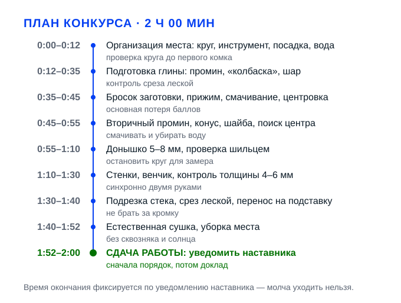
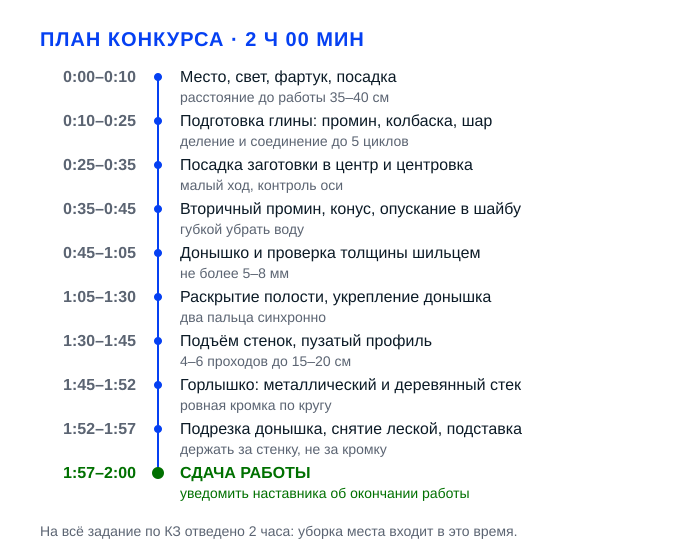
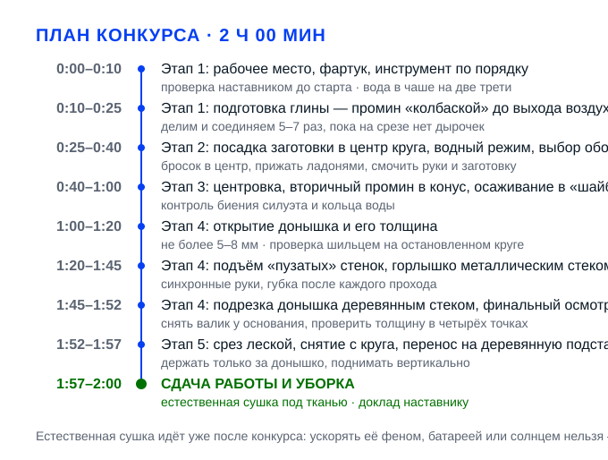

Изготовление глиняных изделий (ФВ)
Задания ниже — официальные файлы «Абилимпикс» (источник: abilympics-russia.ru), разложенные по категориям. Решения написаны по тексту задания, регламенту и критериям оценки; в них указано, что именно проверяет эксперт.
Школьник
14–16 лет, базовый уровень заданияВ официальном файле категории не разделены отдельными разделами — приводим задание целиком; различия по категориям смотрите в таблице модулей.
Пошаговое решение
Задание для школьников простое по формулировке и строгое по исполнению: за 2 часа нужно изготовить глиняную чашку. Работа разбита на три блока — подготовка глины, последовательное выполнение ходов на гончарном круге и естественная сушка изделия, — и каждый оценивают отдельно. Внутри формовки порядок задан по шагам: размять глину до пластичности, скатать «колбаску», несколько раз разделить и соединить её, выгоняя воздух, скатать шар, поставить его в центр круга, отцентровать, промять в конус, опустить в шайбу, открыть донышко толщиной 5–8 мм, развести и поднять стенки, подрезать основание, снять леской и перенести на деревянную подставку. Главный риск здесь не в сложности приёмов, а в спешке: почти все потери — несоцентрованная заготовка, глина с воздухом, толстое или продавленное дно, чашка, снятая за кромку. Ниже — те же ходы по задачам, с размерами, временем и признаками готовности.

Задача 1. Организовать рабочее место и подготовить инструментПодготовка · 10–15 минут из 120
Конкурсное задание у школьников состоит из трёх блоков: подготовка глины к работе, последовательное выполнение ходов на гончарном круге и естественная сушка изделия, и на всё вместе даётся 2 часа. Первые минуты уходят не на глину, а на место: девять позиций оснащения нужно разложить так, чтобы до каждой можно было дотянуться мокрой рукой, не вставая, а круг проверить до того, как на нём окажется первый комок. Эти баллы не набираются в конце, их снимают и добавляют всё время, пока вы работаете, поэтому организация идёт первой задачей, а не последней.
Действие 1.1. Проверить гончарный круг и разложить инструмент
Шаг 1.1.1
Начинаем не с глины, а с обхода своего места. По конкурсному заданию рабочее место участника — это зона 2000×2000 мм, а проход между местами не уже 1,5 м, и в этой зоне стоят гончарный круг, фартук, глина, чаша для воды, губка, леска, стек, шильце и деревянная подставка. Прокрутите диск от руки: он должен идти ровно, без заеданий и без биения кромки. Нажмите на педаль и отпустите — она обязана вернуться сама. Загляните в поддон под диском и убедитесь, что он пустой и сухой, а сам круг стоит на всех ногах и не качается, если придавить диск ладонью.
Круг, у которого бьёт диск или заедает педаль, отнимает центровку: заготовка на каждом обороте уходит в сторону, и вы боретесь с оборудованием, а не с глиной. Баллы за организацию рабочего места снимают в течение всего конкурса, а не только на финише, поэтому две минуты проверки сейчас — самая дешёвая страховка. Полный поддон воды от предыдущего участника — это ещё и брызги на фартук и на изделие в первые же секунды.
Диск прокручивается без заеданий, кромка не «гуляет» из стороны в сторону, педаль возвращается в исходное положение, поддон сухой. Все девять позиций оснащения на месте. Если чего-то нет, это выясняется сейчас, а не в середине формовки, когда замена съест время из двух конкурсных часов.
Самая частая ошибка — сразу включать круг и лепить, не посмотрев в поддон: вода из него выплёскивается на диск, и заготовка едет по мокрому металлу. Вторая — работать на круге со стопорящейся педалью: обороты не сбрасываются, и на центровке комок просто вылетает из рук, пачкая фартук и пол.
Эксперт обходит места до старта и отмечает, проверен ли круг и разложен ли инструмент: пустой поддон, педаль под ногой и ровно стоящий круг видны сразу, без единого вопроса.
Шаг 1.1.2
Раскладываем инструмент по сторонам, исходя из того, какой рукой вы работаете. Чашу с водой ставим справа на уровне локтя — так, чтобы можно было окунуть пальцы, не отрывая левой руки от заготовки, а губку кладём на край чаши или рядом на сухую тряпку. Стек и шильце укладываем слева кромкой от себя, леску — у основания круга, свернув в кольцо, деревянную подставку ставим сзади справа, в полушаге. Всё, что пачкается, лежит только на тряпке, а не на голом столе.
Формовка идёт непрерывно: стоит отпустить заготовку, чтобы поискать шильце, и она подсохнет или «поедет», а на повторный подход уйдёт минута-две из 120. Порядок на столе — это и есть критерий «организовать рабочее место»: эксперт смотрит не на красоту, а на то, тянется ли участник через круг и хватает ли мокрой рукой сухой инструмент.
Проверьте себя просто: сидя на месте, вы дотягиваетесь до воды, губки, стека и шильца, не вставая и не поворачивая корпус больше чем на пол-оборота. Леска лежит так, что её можно взять одной рукой. Подставка не мешает ногам у педали.
Классика — поставить чашу с водой за кругом: чтобы смочить руку, приходится наклоняться через вращающийся диск, и вода льётся на изделие. Вторая ошибка — бросить леску и стек в общую кучу у края стола: на мокрой поверхности они уезжают, и вы ищете их на полу в самый нужный момент.
Эксперт смотрит на порядок в зоне и на то, где стоит вода: чаша на полу или за кругом — это сразу минус за организацию, и такое замечание делает работу заметной для всей бригады экспертов.
Шаг 1.1.3
Надеваем фартук до колен и завязываем так, чтобы он не сползал; длинные волосы убираем под резинку, но под фартук не заправляем — они не должны попадать в глину. Садимся прямо, корпус ближе к кругу, локти опираются на бортик или на колени: по требованиям охраны труда расстояние от глаз до работы — не менее 35–40 см, а свет должен падать на диск равномерно, без резкой тени от корпуса. Светильник, который бьёт в глаза или оставляет затенённую половину диска, лучше сразу переставить.
Из двух часов конкурса почти час вы проводите, глядя в одну и ту же точку, и поза «наклонившись к диску» через двадцать минут даёт дрожь в руках, а стенку толщиной 5–6 мм держат именно точным движением. Свет и осанка — не формальность: без ровного освещения не видно, где стенка уже истончилась, а по санитарным требованиям задания на рабочем месте должно быть не менее 300 люкс.
Проверьте три вещи: локти опираются, глаза на 35–40 см от диска, тень от головы не закрывает центр круга. Фартук закрывает колени, волосы не лезут в лицо. Если приходится щуриться, двигайте светильник, а не глаз.
Ошибка — сесть «как удобно», ссутулившись и положив подбородок на грудь: через полчаса спина просит перерыва, и последние проходы стенки делаются на весу, отчего кромка идёт волной. Вторая — работать в фартуке на одно плечо: глина с круга летит на одежду, а мокрый фартук липнет к ногам у педали.
Эксперт видит посадку и освещение сразу, ещё до первого оборота: это часть требований охраны труда, которые вынесены в задании отдельным разделом. Отдельно он отмечает, не закрывает ли корпус свет от диска и не приходится ли участнику щуриться.
Шаг 1.1.4
Проверяем каждый инструмент на исправность, потому что по заданию неисправные подлежат замене, а не «как-нибудь». Шильце должно быть ровным, с остриём без заусенца: им вы будете мерить толщину донышка. Леску берём такой длины, чтобы хватало обхватить диск, — обычно 40–50 см — и проверяем на узлы и заломы. Стек осматриваем по кромке: щербина оставит на глине борозду. Губку выжимаем и проверяем, что она чистая, без засохших комков.
Шильце с погнутым остриём врёт при замере: вы «видите» 6 мм там, где по факту 10, и донышко выходит толстым или, наоборот, продавленным насквозь. Залом на леске рвёт тонкое дно при съёме — самая обидная потеря, потому что изделие уже готово. Замена инструмента до старта занимает минуту, после старта идёт через наставника и стоит времени из конкурса.
Шильце ровное, леска без узлов, кромка стека гладкая на ощупь, губка чистая и отжата. Прогоните леску между пальцами: залом чувствуется как шершавое место. Если сомневаетесь в инструменте — меняйте, а не надейтесь.
Частая ошибка — взять первую попавшуюся леску, короткую или с узлом: при срезе она рвётся ровно в узле, и дно чашки остаётся на диске. Вторая — работать губкой, которой до вас вытирали круг: она размазывает глину по изделию вместо того, чтобы собирать воду.
Эксперт проверяет, чем участник работает: погнутое шильце и грязная губка видны и в руках, и по следам на изделии, и объяснить их случайностью не получится.
Действие 1.2. Подготовить воду, глину и подставку
Шаг 1.2.1
Наливаем в чашу воду комнатной температуры, примерно 20–25 °C, заполняя её на две трети. Не горячую и не ледяную: горячая размягчает глину так, что стенка «плывёт» под пальцем, а холодная хуже смачивает и заставляет лить её больше, чем нужно. В чашу сразу кладём губку, чтобы она была под рукой, и рядом ставим маленькую ёмкость, если её выдали, — в неё удобно отжимать губку, не разбрызгивая воду по диску.
По заданию заготовку нужно смачивать на протяжении всего выполнения изделия, и от того, сколько воды на пальцах, зависит и скольжение, и толщина стенки. Лишняя вода — это размягчённая глина, которая тянется за пальцем и рвётся на подъёме; недостаток — трение, которое «съедает» стенку снаружи. Поэтому важен не факт воды в чаше, а её количество на руках: мокрые, но не текущие.
Опустите руку: вода стекает, но не льётся струёй. Глина на пальцах блестит, а не плавает в луже. Если после прохода по заготовке на диске собирается вода, значит её слишком много — выжмите губку и продолжайте работать.
Ошибка — держать руку в чаше постоянно и работать «по мокрому»: заготовка размокает, стенка оседает, а на сушке идут трещины. Обратная ошибка — смачивать один раз в начале: глина подсыхает за 3–4 минуты и начинает тянуться комками.
Эксперт смотрит на соотношение воды и глины в работе: лужа на диске и «плывущая» заготовка — верный признак того, что участник не контролирует смачивание.
Шаг 1.2.2
Отделяем от общего куска комок, который помещается в двух сложенных ладонях: для чашки объёмом примерно 250–300 мл это 600–800 г. Ориентир простой — объём шара должен быть чуть больше объёма будущей чашки, потому что часть глины уйдёт в подрезку донышка и в воду. Если взяли с запасом, лишнее срезается леской до формовки; если взяли мало, стенку не поднять до нужной высоты.
Количество глины определяет, дотянете ли вы стенку до верха без того, чтобы дно утончилось. Это прямо связано с критерием «последовательное выполнение ходов»: вся формовка идёт от комка к шару, и на лишний или недостающий объём потом не хватает ни времени, ни материала. Второй комок вам не выдадут без обращения к наставнику, а обращение — это тоже минуты конкурса.
Комок в двух ладонях закрывается почти полностью, на весах — 600–800 г. Прикиньте на глаз: если из него не выйдет шар диаметром около 9–10 см, объём маловат, и чашка получится высотой в половину задуманной.
Ошибка — взять «побольше, чтобы точно хватило»: лишнюю глину приходится срезать, а вместе с ней уходит время, и на круге большой комок труднее центровать. Вторая — отломить кусок на глаз от большого пласта, не проверив: разница в 200 г видна только на подъёме стенки, когда исправлять уже поздно.
Эксперт обращает внимание на соразмерность заготовки и изделия: огромный комок и миниатюрная чашка — признак того, что участник не рассчитывает объём заранее.
Шаг 1.2.3
Разламываем комок на две части и осматриваем срез: камешки, солома, комки сухой глины и случайная плёнка — всё, что торчит из тела, выбираем пальцами. Затем проверяем влажность: нажимаем большим пальцем — должна остаться ровная вмятина, которая медленно выравнивается, а палец после нажима остаётся почти чистым. Если глина липнет к пальцу и пачкает ладонь, она переувлажнена; если крошится по краю — пересушена.
Камешек размером с горошину при обжиге даёт трещину или отстрел, а на формовке рвёт стенку изнутри — этого не видно, пока изделие не начнёт падать. Влажность важнее: переувлажнённая глина не держит форму и оседает под собственным весом, пересушенная не тянется и трескается уже на центровке. По заданию подготовка глины — отдельный блок работы, и именно здесь закладывается, получится чашка или нет.
Срез чистый, посторонних включений нет; вмятина от пальца ровная, палец почти чистый, край комка не крошится. Если глина липнет — подсушите её на гипсовой плите или на сухой деревянной подставке 3–5 минут, разложив тонким слоем.
Ошибка — не смотреть срез: камешек всплывает на стенке уже на подъёме и оставляет борозду, которую видно на готовой чашке. Вторая — работать с переувлажнённой глиной «раз она мягкая»: чашка осядет на круге, а на сушке пойдёт трещинами по дну.
Эксперт смотрит, осматривал ли участник глину: чистый срез и отсутствие борозд на изделии говорят сами за себя, а выковырянный из стенки камешек виден сразу.
Шаг 1.2.4
Деревянную подставку ставим насухо и проверяем, что она не шатается: чашку вы поставите на неё мокрой, и любая неровность отпечатается на дне. Рядом кладём кусок полиэтилена или влажную ткань — ими вы накроете готовое изделие, чтобы кромка не сохла быстрее дна. Глину, которая ждёт своей очереди, тоже накрываем: за десять минут на воздухе она отдаёт влагу и покрывается корочкой.
Сушка в задании выделена отдельным блоком, и начинается она не после снятия чашки, а с первого комка: если глина полежала открытой и подсохла неравномерно, при формовке в ней остаются жёсткие включения, а на готовом изделии — трещины. Ровная подставка нужна для того, чтобы дно не деформировалось под весом мокрой чашки, пока она схватывается.
Подставка сухая, не качается, на ней нет засохших комков глины. Плёнка или ткань лежат под рукой. Заготовка, которая ждёт, накрыта — поверхность под ладонью влажная, а не «корочкой». Ткань или плёнка лежит так, чтобы её можно было взять одной рукой, не сдвигая подставку с места.
Ошибка — поставить мокрую чашку на подставку с засохшим бугорком: дно поведёт, и изделие будет качаться на столе. Вторая — оставить готовую чашку открытой на сквозняке: кромка сохнет первой и стягивает стенку, по венчику идёт трещина.
Эксперт смотрит, как организовано место для сушки: подставка в закрытом от сквозняка месте и накрытая заготовка — признак того, что участник понимает третий блок задания.
Задача 2. Подготовить глину к работеБлок «подготовка глины» · 20–25 минут
Второй шаг задания описан в конкурсной работе отдельной строкой: глину нужно размять до появления пластичности, скатать в «колбаску», несколько раз разделить и соединить, выгоняя воздух, и скатать в шар. Это самая недооценённая часть работы — на круге уже не исправить то, что осталось внутри комка, а воздушная раковина в стенке проявляется только на сушке или на обжиге, когда изделие рвёт по шву. Здесь же решается равномерность влажности: от неё зависит, встанет ли стенка ровно и не осядет ли чашка под собственным весом.
Действие 2.1. Размять глину до появления пластичности
Шаг 2.1.1
Кладём комок в центр диска (круг пока выключен) или на гипсовую плиту, если она есть, и начинаем разминать ладонями. Давим не кончиками пальцев, а всей ладонью и основанием кисти, поворачивая комок на четверть оборота после каждого нажима. Первые полминуты глина кажется жёсткой и сопротивляется — это нормально; через 2–3 минуты она становится тёплой от рук и податливой, начинает тянуться, а не рваться.
Пластичность — это состояние, в котором глина тянется за рукой, а не отламывается кусками. В задании разминание стоит самым первым пунктом работы именно потому, что неразмятая глина ведёт себя на круге непредсказуемо: стенка идёт рывками, а на подъёме рвётся в самом тонком месте. Тёплая размятая масса ещё и отдаёт воду равномернее, поэтому изделие сохнет без трещин.
Скатайте из комка жгут толщиной с палец и согните дугой: размятая глина гнётся без трещин по внешней стороне сгиба. Если по сгибу пошли разрывы — продолжайте разминать, добавляя по капле воды, а не горстью.
Ошибка — размять «символически», два-три нажатия: внутри остаются плотные и мягкие участки, и на центровке комок идёт восьмёркой. Вторая — лить воду при разминании: глина быстро превращается в липкую массу, которая не держит форму и прилипает к ладоням.
Эксперт смотрит на руки и на глину: размятая масса блестит равномерно и тянется, а не рассыпается под ладонью, и по времени видно, сколько участник потратил на этот пункт.
Шаг 2.1.2
Разминаем по спирали: комок поворачиваем и продавливаем основанием ладони от себя, затем собираем к себе, снова поворачиваем на четверть оборота. Полезно «отбить» комок о плоскость диска 5–8 раз — удары выбивают крупные воздушные карманы лучше, чем нажим. Толщина слоя при разминании — не больше 4–5 см: тонкий слой легче проверить на однородность, чем целый кулак глины.
Спираль нужна, чтобы каждый участок комка побывал под ладонью несколько раз; иначе внутри остаётся непромешанное ядро, которое на круге ведёт себя как камень. Отбивание работает по крупным полостям, а разминание — по мелким, и вместе они дают ту однородность, ради которой в задании операцию делят и соединяют несколько раз.
Разрежьте комок леской: срез должен быть ровным, без крупных пузырей и без слоёв разной плотности. На ощупь масса тёплая и одинаковая по всей толщине, без холодных плотных участков. Если срез блестит полосами, значит слои не промешаны и цикл нужно повторить.
Ошибка — мять глину «в кулаке», не разворачивая: проминается только середина, а края остаются сухими и потом всплывают на стенке. Вторая — разминать на сухом диске: глина прилипает к металлу и рвётся при отрыве, забирая с собой куски.
Эксперт наблюдает за приёмом: спираль с поворотом и отбивание видно сразу, а разминание «в две точки» читается как неумение работать с материалом. Полезно, чтобы руки были видны целиком: работа ладонью, а не кончиками пальцев, читается сразу.
Шаг 2.1.3
Из размятой массы формируем «колбаску»: кладём комок на диск, накрываем ладонями и катаем вперёд-назад, ведя руки от центра к краям и обратно, чтобы заготовка удлинялась равномерно. Давим мягко — задача не расплющить, а вытянуть. Доводим до толщины 4–5 см и длины 15–20 см: такую «колбаску» удобно делить на две части, и по всей длине видно, однородна ли глина.
Форма «колбаски» нужна не ради красоты: в вытянутом жгуте воздушные полости и неоднородности выходят ближе к поверхности, и их видно глазами. В задании именно из этого состояния глину делят на две части, соединяют и повторяют цикл, и на жгуте это делается быстрее и чище, чем на бесформенном комке.
Жгут ровный по толщине, без перехватов и трещин по бокам, длина 15–20 см. Если по поверхности пошли мелкие разрывы — глина подсыхает, смочите ладони и прокатайте ещё раз. Длина измеряется по столу: 15–20 см — это примерно две ладони, положенные подряд.
Ошибка — катать кончиками пальцев: на жгуте остаются вмятины и перехваты, а на срезе видны воздушные карманы. Вторая — катать слишком долго: глина подсыхает, по бокам идут трещины, и её приходится снова смачивать, теряя время.
Эксперт смотрит на жгут в руках участника: ровный по толщине цилиндр говорит о понимании приёма, а «колбаса» с перехватами — о работе пальцами вместо ладоней.
Шаг 2.1.4
Делим «колбаску» на две приблизительно равные части: сначала намечаем середину ребром ладони, потом разрываем руками или разрезаем леской. Сравниваем половины — они должны быть одинаковыми и по длине, и по весу: возьмите по одной в каждую руку и покачайте, разница в 20–30 г уже чувствуется. Если одна часть заметно больше, отщипните от неё и переложите в меньшую.
Равные части — условие честной проверки на воздух: если половины разные, при соединении одна промнётся лучше другой, и вы не поймёте, ушёл воздух или нет. В задании цикл «разделить — соединить» повторяется несколько раз, и одинаковые части делают эту работу быстрой и предсказуемой.
Половины одинаковой длины и веса, срез чистый, без рваных краёв. Проверьте на ладони: руки ощущают одинаковую тяжесть, а при складывании половин их торцы совпадают по диаметру. Если торцы не совпадают по диаметру, значит жгут был с перехватом и деление вышло неравномерным.
Ошибка — делить «на глаз» и не сравнивать: разница накапливается, и после трёх циклов комок становится неоднородным. Вторая — разрывать жгут с усилием, выкручивая: в месте разрыва остаются трещины, которые потом дают раковины в стенке.
Эксперт обращает внимание на то, сравнивает ли участник половины: короткое взвешивание в руках — приём, который отличает уверенную работу от формальной.
Действие 2.2. Промять глину, выгоняя воздух
Шаг 2.2.1
Соединяем половины в одну: кладём одну на другую, сжимаем ладонями и вминаем верхнюю часть в нижнюю, поворачивая комок. Следите, чтобы между половинами не оставалось плоскости раздела — именно по ней держится воздух. Затем снова скатываем «колбаску» и повторяем: делим, соединяем, заминаем стык. Один цикл занимает 20–30 секунд, и таких циклов нужно несколько — обычно 5–7, пока из среза не уйдёт воздух.
Воздух в глине — главный враг: при нагреве он расширяется и рвёт изделие изнутри, а на формовке даёт «пузыри», которые протыкают стенку. Выгнать его можно только механически, многократным складыванием и вминанием, и это та часть задания, где экономия времени обходится дороже всего.
После каждого цикла осматривайте место соединения: оно не должно читаться как отдельная полоса или шов. Если шов виден, комок сложили, но не вмяли — цикл нужно повторить. На просвет место стыка должно быть одного цвета с остальной массой, без светлой полосы.
Ошибка — соединить половины и сразу скатать шар, не заминая стык: воздух остаётся в плоскости раздела, и на обжиге по этому месту идёт трещина. Вторая — складывать комок, но не поворачивать: воздух гоняется по кругу и не выходит.
Эксперт смотрит на ритм работы: складывание с поворотом и вминанием — это непрерывное движение, а не отдельные «упражнения» с паузами. По числу циклов видно и то, торопится ли участник: меньше трёх — почти наверняка воздух остался.
Шаг 2.2.2
Повторяем цикл: скатали «колбаску», разделили, соединили, вминая стык, снова скатали. После третьего-четвёртого раза останавливаемся и проверяем результат леской: режем жгут поперёк и смотрим торец. Внутри не должно быть дырочек, раковин и тёмных точек — только однородная масса. Если отверстия есть, соединяем срез, приминаем и делаем ещё два-три цикла.
Задание формулирует условие прямо: операцию выполняют до тех пор, пока при разделении «колбаски» на приблизительно равные части в ней не останется дырочек. Это единственный объективный признак готовности, и он проверяется глазами за пять секунд, поэтому не ждите финала — проверяйте по ходу.
Торец среза ровный, без пор и тёмных крапин, глина на срезе выглядит как одно целое. После соединения среза шов не виден, а сам жгут не «хлюпает» под ладонью. Тёмные точки на срезе — это и есть воздух: они темнее глины, поэтому их видно даже при слабом свете.
Ошибка — считать, что «и так сойдёт», и переходить к шару после двух циклов: часть воздуха остаётся, и он выходит уже на круге, разрывая стенку. Вторая — резать жгут грязной леской: след от неё читается как полость, и вы продолжаете промин без всякой причины.
Эксперт смотрит, проверяет ли участник срез: контроль леской на ладони виден сбоку и сразу отличает осмысленную работу от механики. Если срез не проверяли ни разу, это заметно по тому, что к шару участник переходит без остановки.
Шаг 2.2.3
Оцениваем состояние массы после промина и правим влажность. Если глина липнет к ладоням и пачкает их, раскатайте её в лепёшку толщиной 2–3 см и положите на гипсовую плиту или на сухую деревянную доску на 3–5 минут: она заберёт лишнюю воду. Если масса крошится и рвётся по краям, смочите ладони, сбрызните комок водой из чаши и промесите ещё один цикл.
После нескольких циклов глина отдаёт воду рукам и становится суше, а при избытке смачивания — наоборот, липкой. И то и другое видно на круге: сухая рвётся, липкая тянется за пальцем и не держит стенку. Правка влажности сейчас дешевле, чем борьба со стенкой на сороковой минуте конкурса.
Комок держит форму, не расползается под собственным весом и почти не пачкает ладонь. При нажатии пальцем остаётся ровная вмятина, которая медленно выравнивается. Ладонь после сжатия остаётся почти чистой: на ней нет глиняной плёнки, которую потом приходится отмывать.
Ошибка — доливать воду «чтобы легче мялось»: масса превращается в жижу, и на круг её уже не поставить. Вторая — сушить липкую глину на горячей батарее: сверху образуется корочка, внутри остаётся сырость, и при формовке комок идёт слоями.
Эксперт замечает правку влажности по паузам в работе: опытный участник не льёт воду бездумно, а сначала оценивает массу на ощупь. Лишняя вода в этот момент — самая частая причина того, что чашка «садится» уже на подъёме стенки.
Шаг 2.2.4
Последний контроль перед шаром: разрезаем жгут пополам, разворачиваем половинки срезом к свету и смотрим на торец под углом. Однородный торец — знак, что воздух вышел. Соединяем половинки, вминаем стык и разминаем комок в ладонях ещё полминуты, чтобы масса стала одинаковой по всей толщине. Если торец всё ещё в мелких порах, цикл повторяют ещё раз: двух-трёх дополнительных складываний обычно хватает.
Это точка, после которой исправлять будет уже нельзя: в шаре воздух не увидеть, а на круге он проявится пузырём на стенке. Проверка занимает полминуты и закрывает целый критерий — качество подготовки глины к работе, с которого начинается вся цепочка ходов в задании.
Торец ровный, без тёмных точек и раковин; после соединения стык не читается. Комок однороден на ощупь — плотных участков не чувствуется. Проверьте ещё и вес: комок после всех циклов не должен стать легче, значит, из него ушла только вода, а не глина.
Ошибка — пропустить финальную проверку, потому что «уже пять раз мял»: на конкурсе волнение ускоряет работу, и циклы проходят быстрее, чем нужно. Вторая — проверять на весу, против света: тени искажают картину, смотреть надо на ровной поверхности.
Эксперт фиксирует момент, когда участник переходит к шару: если перед этим был осмотр среза, работа читается как осознанная, а не как спешка. Пауза на осмотр в этом месте — нормальная часть работы, а не потеря времени.
Действие 2.3. Скатать заготовку-шар
Шаг 2.3.1
Скатываем шар: кладём комок на ладонь левой руки, правой накрываем сверху и начинаем похлопывать нижней частью ладони, поворачивая заготовку. Удары лёгкие, частые, с одинаковой силой — от них комок округляется сам, без нажима. На это уходит 30–60 секунд: как только грани и вмятины ушли, шар готов. Если глина прилипает к ладони, смочите руку один раз и продолжайте: липкий комок не округлится, он будет тянуться за пальцами.
Форма шара — не эстетика, а условие центровки: у шара центр масс совпадает с геометрическим центром, и его проще поставить точно в середину диска. В задании этот пункт стоит прямо перед броском заготовки на круг, потому что неровный комок на первом же обороте уходит в сторону.
Шар круглый со всех сторон, без граней и впадин; на ладони он лежит устойчиво и не катится сам. Диаметр одинаковый в любом направлении. Поставьте шар на ровную доску: он не должен катиться сам, а при лёгком толчке катится ровно, без рывков в сторону.
Ошибка — лепить шар пальцами, сжимая комок: внутри снова появляются полости, и работа по промину идёт насмарку. Вторая — хлопать слишком сильно: комок расплющивается в лепёшку, и его приходится переделывать.
Эксперт смотрит на приём: похлопывание ладонью с поворотом — это техника, а выкатывание шара на столе «как тесто» — потеря формы и лишние минуты. Хороший признак — шар в руках поворачивают, а не тискают.
Шаг 2.3.2
Осматриваем шар на трещины: мелкие разрывы по поверхности закрываем, смочив ладонь водой и прогладив вмятинку большим пальцем. Крупные трещины означают, что глина подсохла, — тогда сбрызните шар водой и промесите ещё один короткий цикл. Отдельно проверяем, нет ли на поверхности камешков: их выбираем и заглаживаем место. Осматривать надо при боковом свете: трещины видны как тонкие тёмные линии, а при прямом свете их легко пропустить.
Трещина на поверхности — это вход для воздуха и место, где стенка разойдётся при подъёме. Камешек, оставшийся в шаре, при обжиге даёт отстрел, а на формовке — борозду, которую видно на готовой чашке. Обе мелочи занимают по полминуты, а стоят целого изделия.
Поверхность шара гладкая, без трещин и посторонних включений. На ощупь — как плотное тесто, без сухих участков и без липкости. Проведите по шару тыльной стороной пальца: так чувствуются мелкие бугорки, которые глаз не замечает. Влажный шар прохладный на ощупь по всей поверхности.
Ошибка — заглаживать трещину сухим пальцем: глина рвётся ещё сильнее, и трещина расходится в стороны. Вторая — не замечать камешков, потому что смотреть на шар «в целом», а не переворачивая его в руках.
Эксперт видит, осматривал ли участник шар: переворачивание и проглаживание поверхности ладонью — быстрый и заметный приём. Если участник сразу ставит шар на круг, не осмотрев его, мелкие трещины всплывут уже на подъёме стенки.
Шаг 2.3.3
Проверяем плотность шара: сжимаем его ладонями — он должен пружинить и возвращать форму, а не продавливаться. Затем ставим шар на диск и слегка прижимаем: нижняя сторона становится плоской, и это правильно, так заготовка ляжет на круг всей площадью, а не точкой. Площадка не должна быть больше трети диаметра шара. Прижимать лучше на выключенном круге, а потом один раз провернуть диск рукой: заготовка не должна поехать.
Пружинящий шар — признак того, что глина однородна по влажности и плотности. Слишком плоская площадка потом станет дном чашки, и его толщину придётся срезать, теряя высоту; слишком маленькая — заготовка «клюёт» на центровке и уходит в сторону. Проверка занимает секунды и снимает сразу два риска — низкую чашку и сорванную заготовку.
Шар восстанавливает форму после сжатия, площадка снизу ровная и не больше трети диаметра. Диаметр шара — 9–10 см, при нажатии он пружинит, а не проваливается. Площадка должна быть светлее остальной поверхности: так видно, что глина легла на плоскость, а не смялась.
Ошибка — прижать шар со всей силы: он превращается в лепёшку, и чашка выходит низкой. Вторая — не прижать вовсе: на включённом круге комок срывается с диска и улетает. Есть и третья: прижимать шар на включённом круге — пальцы уходят в глину, и на заготовке остаются вмятины.
Эксперт обращает внимание на проверку плотности: сжатие в ладонях и возврат формы занимают секунды, но показывают, понимает ли участник свойства материала.
Шаг 2.3.4
Последний замер перед формовкой: оцените объём — шар диаметром 9–10 см даёт чашку высотой 9–11 см со стенкой 5–6 мм. Если шар получился крупнее, срежьте лишнее леской и снова скатайте шар; если меньше — добавьте глины и повторите промин. Готовую заготовку накройте влажной тканью, если до броска на круг пройдёт больше минуты. Класть ткань прямо на шар не надо: она должна лежать на краях подставки или на каркасе, не касаясь глины.
Объём заготовки определяет, хватит ли глины на стенку нужной высоты: на чашку 250–300 мл уходит 600–800 г, и эту цифру лучше сверить сейчас, чем обнаружить нехватку на подъёме стенки, когда дно уже сформировано. Накрытая ткань сохраняет влажность, а подсушенный шар на центровке идёт трещинами.
Шар диаметром 9–10 см, вес 600–800 г, поверхность влажная. Если он лежит дольше минуты — накрыт тканью или плёнкой. Плотность проверяется пальцем у основания: вмятина должна медленно выравниваться. Если шар на ощупь уже «корочка», его сбрызгивают водой и промешивают заново, иначе на центровке пойдут трещины.
Ошибка — оставить готовый шар открытым и уйти проверять инструмент: за пять минут он покрывается корочкой и на круге рвётся. Вторая — докладывать глину в уже сформированный шар и не промешивать: внутри остаётся стык, который выходит раковиной.
Эксперт смотрит на заготовку перед броском: ровный шар нужного размера и накрытая глина рядом — картина полной готовности к формовке. Заодно видно, сколько времени ушло на подготовку: на этот блок уходит около четверти конкурса.
Задача 3. Выполнить формовку чашки на гончарном кругеБлок «последовательное выполнение ходов» · 50–60 минут
Формовка — это три десятка ходов из задания, свёрнутых в непрерывную последовательность: заготовку бросают в центр круга, прижимают, смачивают, центруют, проминают в конус, опускают в шайбу, открывают донышко 5–8 мм, разводят стенки, поднимают их, подрезают и снимают леской. Здесь уже ничего не придумывают: порядок ходов задан жёстко, и оценивают именно его и способность держать форму изделия под руками. Ошибка в начале, на центровке, тянет за собой все остальные, поэтому первые две минуты вращения решают больше, чем последние десять.
Действие 3.1. Поставить заготовку на круг и отцентровать
Шаг 3.1.1
Ставим шар на диск и «бросаем» его в центр: поднимаем заготовку на 5–10 см над диском и опускаем с лёгким шлепком, чтобы она прилипла. Не вдавливаем пальцами — именно бросок даёт равномерное прилегание по всей площадке. Затем поправляем шар так, чтобы он стоял в середине диска: от края до края должно оставаться одинаковое расстояние. Полезно один раз провернуть диск рукой: шар на ровно поставленной заготовке остаётся на месте, а не уползает к краю.
Точная установка в центр экономит центровку: если заготовка стоит с краю, круг будет «тянуть» её наружу, и вы потратите на борьбу лишние минуты. В задании бросок заготовки в центр выделен отдельным ходом именно потому, что от него зависит, насколько ровно пойдёт вся формовка.
Расстояние от шара до кромки диска одинаково с четырёх сторон, шар не смещается, если слегка толкнуть диск рукой. При прокрутке от руки шар остаётся на месте, а не уползает к краю. Отойдите на шаг и посмотрите сверху: шар должен стоять по оси диска, а не сбоку от неё.
Ошибка — поставить комок на глаз и сразу включить круг: заготовка уходит к краю, начинает биться и разваливается. Вторая — прилепить шар, вдавливая его пальцами: по низу остаются воздушные карманы, и дно отрывается при подъёме.
Эксперт смотрит на первый бросок: если заготовка легла по центру, дальше работа идёт спокойно, и это видно по ритму. Бросок с высоты 5–10 см и шлепок ладонью — приём, который отличает работу по заданию от «положил и включил».
Шаг 3.1.2
Прижимаем заготовку усилием рук: накладываем обе ладони и надавливаем сверху, затем обжимаем комок по бокам, чтобы он сел на диск всей площадью. Лишнюю глину, выступившую к краям, убираем — она мешает видеть центр и цепляется за пальцы. После прижима ещё раз проверяем, что шар стоит по центру. Отдельно проверьте основание: если глина выступает вокруг шара «юбочкой», её лучше снять стеком, иначе она будет цепляться за ладонь при центровке.
Хорошо прижатая заготовка не «плывёт» при разгоне и не отрывается при подъёме стенки, а отрыв на середине формовки означает, что изделие испорчено. Ровная посадка нужна и для того, чтобы дно чашки получилось плоским, а не выпуклым. Плотная посадка экономит и силы: руки не тратят их на то, чтобы удержать комок на месте.
Шар сидит на диске плотно, при нажатии не хлюпает, лишней глины по краям нет, диск под заготовкой сухой. Заготовка не смещается при лёгком нажиме ладонью сбоку. По краю заготовки не должно быть валика глины, а на диске под ней — мокрого кольца.
Ошибка — прижать слабо: при первом же разгоне заготовка едет по диску и «клюёт» на одну сторону. Вторая — оставить выступившую глину: она налипает на ладонь и сбивает посадку рук. И третья: прижимать заготовку, когда диск ещё вращается, — шар сходит с центра.
Эксперт обращает внимание на посадку рук: обе ладони сверху и обжим по бокам — приём, который делает дальнейшую центровку быстрой. Если участник сразу включает круг, не прижав заготовку, это видно по первому же рывку диска.
Шаг 3.1.3
Смачиваем руки и заготовку: опускаем ладони в чашу, стряхиваем лишнее и проводим мокрыми ладонями по шару со всех сторон. Вода должна покрыть поверхность тонким блестящим слоем, но не стекать на диск. По заданию смачивать нужно на протяжении всего выполнения изделия, поэтому чаша стоит рядом, а не на другом конце стола. Смачивать удобнее внутренней стороной ладони: так вода ложится тонким слоем, а не льётся с пальцев на диск.
Вода — это смазка между рукой и глиной: без неё ладонь «прихватывает» поверхность и вырывает куски, а с избытком глина размягчается и стенка оседает. Тонкий слой воды на заготовке — то состояние, в котором палец скользит, но не проваливается. Поэтому воду добавляют порциями и всегда убирают излишек губкой.
Поверхность шара блестит, вода не собирается у его основания, ладони мокрые, но с них не течёт. Диск вокруг заготовки остаётся сухим. Если провести пальцем по стенке и он идёт с трудом — воды мало, если палец проваливается — много. Признак нормы: палец скользит, оставляя светлую полосу, которая сразу исчезает.
Ошибка — макнуть заготовку в чашу: она набирает воду и размокает. Вторая — работать сухими руками «чтобы не скользило»: на поверхности появляются вырывы, которые потом видны на готовой чашке. Есть и третья: мочить заготовку, не вымыв руки от глины.
Эксперт видит соотношение воды и глины по блеску поверхности: сухая или залитая водой заготовка сразу выдаёт неопытность. Опытный участник мочит руки перед каждым проходом, а не раз в минуту и не «на всякий случай».
Шаг 3.1.4
Включаем круг нажатием на педаль и выбираем обороты под задачу: для центровки — умеренные, при которых диск делает примерно 60–100 оборотов в минуту. Слишком быстро заготовка вылетает и брызги летят в лицо, слишком медленно глина не «встаёт» в центр. Педаль держим под правой ногой и работаем ею мягко, без рывков. Ориентир по звуку: ровный негромкий гул без свиста и без вибрации пола под ногами. Если круг «воет», обороты для этой заготовки слишком высоки.
Скорость — главный регулятор в этой работе: на центровке нужны устойчивые средние обороты, на подъёме стенки их снижают. Если диск «дёргается», глина идёт волной, и никакие руки этого не исправят. Это первое, что эксперт замечает по звуку круга. Постоянные рывки педали к тому же сбивают посадку рук на заготовке.
Диск вращается ровно, без рывков, обороты не «плывут» под нагрузкой. Заготовка не вибрирует на диске, вода не разлетается по сторонам. Положите ладонь на неподвижную часть корпуса: вибрация не должна передаваться на неё. По брызгам на фартуке тоже видно — при верных оборотах их почти нет.
Ошибка — давить педаль до упора: глина разлетается, а руки не успевают за диском. Вторая — работать на самом малом ходу: центровка не получается, заготовка остаётся «бить». Третья ошибка — включать круг, не убрав руки от диска: мокрые пальцы попадают под кромку.
Эксперт слышит обороты: ровный гул без рывков — признак того, что участник управляет кругом, а не наоборот. Он же отмечает, меняет ли участник скорость по ходу работы: на центровке одна, на подъёме стенки другая, и это правильный признак.
Шаг 3.1.5
Центруем: локти упираем в колени или в корпус круга, ладони складываем «седлом» — левая с одной стороны заготовки, правая с другой — и мягко нажимаем к центру и вниз. Сила идёт от корпуса, а не от пальцев. Как только заготовка перестала «бить» и поверхность стала ровной, центровка закончена; всё это занимает от 30 секунд до двух минут. Если за две минуты заготовка так и не встала, не давите сильнее: остановите круг, поправьте посадку и начните центровку заново.
Центровка — фундамент: смещённая заготовка на каждом обороте бьёт по рукам, и любая стенка, поднятая на ней, получается разной толщины. В задании центровка выделена отдельным ходом, и не зря: большинство испорченных школьных чашек — это несоцентрованная заготовка.
Проведите мокрым пальцем черту по вращающейся заготовке — она должна оставаться ровным кольцом, а не «гулять» из стороны в сторону. Поверхность под ладонями гладкая, без волны, шар не бьёт по рукам. При остановке круга на поверхности остаются ровные кольца, а не спираль.
Ошибка — центровать кончиками пальцев, стоя над кругом: не хватает силы, и заготовка продолжает бить. Вторая — давить так, что комок расплющивается: вместо цилиндра получается лепёшка. Третья — центровать, не смочив руки: ладонь рвёт поверхность и уводит заготовку в сторону.
Эксперт смотрит именно на центровку: локти на опоре, нажим от корпуса и ровное кольцо под пальцем — то, что отличает готовую к работе заготовку. Ещё он смотрит на время: затянутая центровка съедает минуты из формовки.
Действие 3.2. Промять заготовку вторично и открыть донышко
Шаг 3.2.1
Делаем вторичный промин: смочив руки, обхватываем заготовку ладонями и вытягиваем её вверх в форму конуса — ведём от основания к вершине, сжимая по пути. Проходов 3–5, каждый от низа к верху, без остановок посередине. Конус получается высотой 10–12 см, и в нём глина промыта ещё раз, уже под давлением вращения. Руки при этом скользят по смоченной заготовке, а не тянут её: если глина идёт за ладонью, добавьте воды.
Вторичный промин догоняет то, что не удалось в руках: под вращением глина уплотняется и выдавливает остатки воздуха наверх, где их можно снять пальцем. Конус — удобная форма для следующего шага: из него одинаково легко получить и шайбу, и донышко. Кроме того, конус показывает, хватает ли глины на высоту: если её не хватает, лучше добавить материал сейчас.
Конус ровный, без спиральных наплывов, вершина по центру. На поверхности нет пузырей и вырывов, высота 10–12 см. Проведите ладонью снизу вверх: поверхность должна быть гладкой, без спиральных валиков. Вершина конуса стоит по оси диска, а не сбоку, и не «кивает» при вращении.
Ошибка — тянуть конус одним движением с силой: глина рвётся у основания. Вторая — не смачивать при промине: поверхность идёт «гармошкой» и на стенке остаются кольцевые борозды. Третья — тянуть конус, не придерживая основание: заготовка сходит с центра, и вся работа по центровке пропадает.
Эксперт замечает вторичный промин по движению рук от основания к вершине: это отдельный ход задания, и его видно без вопросов. Он же смотрит, смачивает ли участник заготовку между проходами: сухая глина на этом ходу рвётся чаще всего.
Шаг 3.2.2
Убираем излишки воды губкой: прижимаем её к нижней части заготовки и к диску, собирая воду, затем проводим по поверхности один раз, не растирая. Губку держим в правой руке, круг при этом работает на малых оборотах. Отжатую губку возвращаем на место, а не бросаем в чашу — иначе она снова наберёт воду. Движение губкой одно, снизу вверх, а не круговое: круговое растирает глину и оставляет разводы. Если воды много, губку отжимают над чашей, а не над кругом.
Лишняя вода на диске — это лужа, в которой заготовка скользит; лишняя вода на стенке — размягчённая глина, которая оседает под пальцем. В задании излишки убирают на протяжении всей работы, и это не косметика, а способ удержать форму. На конкурсе это ещё и вопрос чистоты: грязный диск пачкает фартук и передаёт глину на следующий участок работы.
Диск вокруг заготовки сухой, поверхность конуса матовая, без блеска воды. Губка отжата и лежит на месте. Проведите по диску тыльной стороной ладони — она должна остаться сухой. На заготовке не должно быть капель, которые стекают вниз и собираются у основания.
Ошибка — тереть губкой по стенке: она снимает глину и оставляет борозды. Вторая — не убирать воду вовсе, надеясь, что «впитается»: к моменту подъёма стенки глина уже слишком мягкая. Третья — выжимать губку над диском: брызги летят на изделие и на фартук.
Эксперт смотрит на диск вокруг изделия: сухой металл говорит о том, что участник убирает воду, а не борется с ней. Он же замечает темп: воду убирают между проходами, а не один раз в конце формовки.
Шаг 3.2.3
Опускаем конус до состояния шайбы: накладываем ладони на вершину и мягко надавливаем вниз, одновременно придерживая основание. Высота падает с 10–12 см до 4–6 см, а диаметр растёт до 12–14 см: заготовка расплющивается в толстую шайбу с ровной поверхностью. Давим постепенно, за 3–4 подхода, а не одним ударом. Давить надо основанием ладоней, а не пальцами: пальцы продавливают ямки, которые потом видны на дне. Если заготовка «упирается», смочите руки и повторите.
Форма шайбы нужна для того, чтобы открыть донышко и развести стенки: в плоской заготовке центр виден, а глина распределена равномерно. Резкое опускание даёт трещины по краю и воздух у основания, а он потом выходит пузырём на дне. Кроме того, ровная шайба — это ровное дно: любая выпуклость на этом этапе останется с чашкой до конца.
Шайба ровная, высотой 4–6 см и диаметром 12–14 см, край без трещин, поверхность гладкая. При прокрутке шайба не «бьёт» по ладоням. Проверьте высоту шильцем: воткните его вертикально у края и посмотрите, где окажется отметка. Поверхность должна быть плоской, без седловины посередине.
Ошибка — стукнуть по конусу ладонью: край трескается, и трещина идёт вглубь. Вторая — опустить слишком сильно, до двух сантиметров: глины не хватит на стенку нужной высоты. Третья — опускать конус мокрыми руками, не смочив заготовку: край идёт трещинами ещё до подъёма.
Эксперт оценивает пропорции шайбы: слишком низкая заготовка заранее означает чашку недотянутой высоты. Он же смотрит на равномерность: если с одной стороны шайба толще, заготовка была несоцентрована, и стенка пойдёт волной.
Шаг 3.2.4
Ищем центр: на вращающейся заготовке смотрим, где сходятся концентрические круги от пальца, — это и есть центр. Проверяем шильцем: легко касаемся поверхности в предполагаемой середине, метка не должна уезжать в сторону при вращении. Второй ориентир — вершина «бугорка», который остаётся, если провести пальцем от края к середине. Смотреть надо на вращающуюся заготовку, держа руку над диском: на ходу центр виден как неподвижная точка.
Смещённый центр — это разная толщина стенки: с одной стороны глина уйдёт в 3–4 мм, с другой останется 8. В задании центр ищут визуально, а проверяют инструментом, и это ровно тот случай, когда полминуты проверки спасают всю чашку. Смещённый центр уводит и венчик: кромка получается наклонной, и это видно сразу.
Метка от шильца стоит на месте при вращении, круги от пальца сходятся в одной точке, бугорок по центру. Заготовка при этом ровная, без волны. Проверьте дважды: на медленных оборотах и после короткой остановки. Если метка уехала, заготовка сместилась и центровку нужно повторить.
Ошибка — определять центр на остановленном круге: на глаз он почти всегда смещён на 1–2 см. Вторая — сразу давить пальцем, не проверив: ошибка видна, когда донышко уже продавлено. Третья — искать центр, глядя на край диска, а не на заготовку: взгляд уводит в сторону.
Эксперт видит поиск центра по движению шильца: короткая проверка на вращении — признак того, что участник понимает геометрию заготовки. Он же смотрит, не давит ли участник на заготовку сразу после проверки центра: пауза в полминуты здесь обязательна.
Шаг 3.2.5
Формируем донышко: указательный палец правой руки ставим в найденный центр, левой поддерживаем стенку снаружи, и опускаем палец вглубь заготовки, пока до дна не останется 5–8 мм. Затем останавливаем круг педалью и проверяем толщину шильцем: втыкаем его у основания стенки и смотрим, на какую глубину он вошёл. Если больше восьми миллиметров — продолжаем выбирать глину, если меньше пяти — донышко уже тонкое, дальше не давим.
Толщина дна 5–8 мм задана в задании прямым требованием, и это не формальность: слишком толстое дно тянет за собой лишний вес и трещины при сушке, слишком тонкое прорывается пальцем или ломается при съёме. Проверка шильцем — единственный способ узнать реальную толщину, на глаз она не читается.
Шильце входит у основания стенки на 5–8 мм, при простукивании дно звучит одинаково по всей площади. Внутри не осталось «ступеньки» между дном и стенкой. Замерьте в двух-трёх точках по кругу: разница больше двух миллиметров означает, что заготовка стоит неровно и дно выйдет клином.
Ошибка — давить пальцем до упора и прорывать дно: чашка уже испорчена, спасти её можно только превратив в блюдце. Вторая — не проверять толщину, полагаясь на ощущение: у школьников дно чаще всего выходит 10–12 мм.
Эксперт смотрит на этот замер: остановка круга и проверка шильцем — обязательный ход задания, и его отсутствие видно сразу. По глубине входа шильца он понимает, работал ли участник по требованию 5–8 мм или давил на глазок.
Действие 3.3. Сформировать стенки и венчик чашки
Шаг 3.3.1
Возобновляем вращение, смачиваем руки и заготовку, затем опускаем указательный палец левой руки вглубь и придерживаем его снаружи пальцем правой. Раздвигаем стенки: левая рука идёт изнутри наружу, правая встречает её снаружи и не даёт стенке «убежать». Так расширяем полость до нужного диаметра — 8–9 см у чашки — за 2–3 прохода. Между проходами останавливаться не нужно: пауза сушит кромку, и она начинает тянуться за пальцем.
Две руки работают как тиски: без поддержки снаружи стенка просто разъезжается и оседает, а без пальца внутри невозможно задать толщину. В задании этот ход записан именно парой рук, и это ключ к ровной стенке. Ещё одна причина: при работе двумя руками глина уплотняется равномерно, и стенка потом не оседает на сушке.
Полость расширена равномерно, стенка одинаковой толщины по кругу — это видно по одинаковой высоте кромки. Палец внутри и снаружи чувствуют друг друга через стенку, как через плотную кожу. Стенка должна просвечивать на лампе одинаково по всему кругу.
Ошибка — разводить стенки одной рукой снаружи: глина идёт волной, дно проседает. Вторая — расширять сразу до максимума: стенка уходит в сторону, и чашка получается овальной. Третья — разводить стенки сухими пальцами: глина рвётся в самом тонком месте, обычно у дна.
Эксперт смотрит на работу двух рук одновременно: синхронное движение изнутри и снаружи — главный приём формовки, и он виден с любого ракурса. Отдельно он отмечает, не разводит ли участник стенку снаружи одной рукой.
Шаг 3.3.2
Укрепляем донышко: проводим указательным пальцем по дну от центра к краю и обратно, несколько раз, с лёгким нажимом. Заодно заглаживаем переход от дна к стенке — там чаще всего остаётся утолщение или, наоборот, тонкая полоска. Движение идёт по спирали, от центра наружу и назад, при смоченном пальце. Нажим лёгкий: палец должен чувствовать толщину, а не продавливать глину. Если дно «пружинит» под пальцем, оно уже тоньше пяти миллиметров, и работать по нему нельзя.
Переход дно–стенка — самое слабое место чашки: при сушке именно там появляется трещина, потому что толстая часть отдаёт воду медленнее тонкой. Проглаживание выравнивает толщину и уплотняет глину, а заодно показывает, нет ли бугорков и ям. Кроме того, проглаживание показывает, нет ли под пальцем бугорка от непромешанной глины.
Дно гладкое, без наплывов, переход к стенке плавный на ощупь. При вращении на дне не видно «биения» — поверхность остаётся ровной. Проведите пальцем по кольцу перехода: он не должен ни спотыкаться о валик, ни проваливаться в борозду. На просвет у дна не видно более светлой полосы.
Ошибка — тереть дно сухим пальцем: глина рвётся и появляются борозды. Вторая — не заглаживать переход, считая, что «и так держится»: именно по этому кольцу идёт трещина на следующий день. Третья ошибка — давить на дно с силой: оно прогибается и остаётся вогнутым.
Эксперт замечает этот ход по движению пальца от центра к краю: он есть в задании отдельным пунктом и оценивается как часть последовательности. Опытный участник делает этот проход не спеша: от него зависит, дойдёт ли чашка до обжига.
Шаг 3.3.3
Поднимаем стенки: пальцы обеих рук ставим друг напротив друга — изнутри и снаружи — и ведём синхронно от основания к кромке, сжимая глину между ними. Каждый проход поднимает стенку на 1–1,5 см; всего проходов 2–3, с обязательным смачиванием между ними. Кромку не трогаем до последнего прохода, иначе она поплывёт. Нажим одинаковый по всей высоте: у основания чуть сильнее, у кромки легче. Стенка поднимается за 2–3 прохода на 9–11 см, выше для чашки не нужно.
Синхронное движение двумя пальцами задаёт толщину: если пальцы идут не вместе, стенка получается толстой с одной стороны и тонкой с другой. В задании стенки поднимают именно синхронными движениями обеих рук, и это единственный способ получить ровный венчик.
Стенка поднимается равномерно, кромка остаётся на одной высоте по всему кругу, толщина на ощупь одинаковая — 5–6 мм. Высота чашки выходит 9–11 см. Проверьте шильцем у венчика и в середине: разница больше миллиметра означает, что стенка идёт клином. Кромка при этом остаётся горизонтальной.
Ошибка — тянуть стенку вверх одной рукой изнутри: глина вытягивается в тонкое место и рвётся. Вторая — поднимать слишком быстро, без смачивания: поверхность идёт «гармошкой» и трескается. Третья — поднимать стенку, не придерживая её снаружи: она уходит в сторону.
Эксперт смотрит на подъём стенки как на главный ход задания: синхронность рук, число проходов и ровная кромка читаются сразу. Он смотрит и на число проходов: один длинный проход вместо двух-трёх — признак спешки и тонкой стенки.
Шаг 3.3.4
Выравниваем кромку: смочив пальцы, прижимаем их к венчику с двух сторон и проводим один ровный проход по кругу, снимая лишнюю глину и заглаживая верх. Если кромка всё равно неровная, подрезаем её стеком под небольшим углом, а затем снимаем фаску — лёгкое скругление снаружи, чтобы край не был острым. Затем проходим по кромке влажной губкой. Стек держим почти плашмя, чтобы не срезать лишнего: убрать венчик на сантиметр — значит потерять высоту чашки.
Венчик — первое, что видно на готовой чашке, и первое, что оценивают: неровная, волнистая кромка читается как небрежность независимо от того, как сделаны стенки. Скруглённый край ещё и прочнее: острый сколется при съёме или на сушке. Ровная кромка ещё и удобна в работе: по ней видно, насколько поднялась стенка за проход.
Кромка на одной высоте по всему кругу, толщина одинаковая, край скруглён и не режет палец. На просвет венчик ровный, без утолщений и провалов. Проведите по кромке пальцем по кругу: он не должен ни за что цепляться. Поставьте чашку кромкой вниз на ровный стол — зазор должен быть одинаковым.
Ошибка — подрезать кромку стеком на полных оборотах: стенка тянется за инструментом и рвётся. Вторая — оставить острый край: он скалывается при переносе, и изделие приходится переделывать. Третья — выравнивать кромку, не смочив её: глина крошится под пальцем.
Эксперт оценивает венчик при первом же взгляде на изделие, а приём со стеком и фаской замечает ещё на круге. Он смотрит на венчик сбоку, на уровне диска: так видно волну, которую сверху не заметно.
Шаг 3.3.5
Финальный проход: убираем излишки воды губкой, затем влажной губкой затираем стенку снаружи и изнутри одним движением снизу вверх, чтобы снять кольцевые борозды от пальцев. Проверяем толщину стенки шильцем в двух точках — у венчика и в средней части, — она должна быть 4–6 мм. После проверки круг останавливаем. Замер делают на остановленном круге, иначе шильце срезает глину и оставляет борозду. Если стенка тоньше четырёх миллиметров, её больше не трогают.
Кольцевые борозды от пальцев видны на высохшем изделии, а после обжига становятся явными, и убрать их уже нельзя, не испортив форму. Контроль толщины в двух точках нужен потому, что стенка чаще всего утончается кверху, и именно там рвётся при сушке. Тонкая стенка к тому же не держит форму при обжиге и коробится.
Стенка гладкая, без борозд, толщина 4–6 мм у венчика и в середине. Вода на диске убрана, поверхность матовая, изделие не просвечивает на лампе. Проведите губкой ещё раз и посмотрите на изделие с расстояния 35–40 см: борозды и наплывы видны именно на этом расстоянии, вплотную они не читаются.
Ошибка — тереть губкой сильно: она снимает глину и делает стенку тоньше в одном месте. Вторая — не проверять толщину у венчика: чашка кажется нормальной, а кромка крошится уже при съёме. Третья — затирать мокрую стенку сразу после подъёма: глина ещё «плывёт» под губкой.
Эксперт смотрит на финальную зачистку: ровная матовая поверхность без борозд — признак того, что изделие готово к съёму, а не «ещё не доделано». Он же смотрит, убрана ли вода с диска перед подрезкой.
Действие 3.4. Подрезать, снять и перенести изделие
Шаг 3.4.1
Подрезаем донышко стеком: на малых оборотах подводим стек под основание заготовки, держим его под небольшим углом и ведём от края к центру, снимая излишек глины. Затем тем же стеком зачищаем боковую поверхность у основания, чтобы убрать наплыв. Круг вращается медленно, а стек опирается на подставку или на палец — так он не «ныряет» в глину. Снимаем тонкую стружку за проход: толстый слой стек не режет, а рвёт основание.
Подрезанное донышко нужно по двум причинам: оно становится ровным и не «качается» на столе, а глина в основании уплотняется. Кроме того, без подрезки изделие не снять с круга чисто — под ним остаётся широкий наплыв, который прилипает к диску. Подрезанное основание сохнет равномернее — это тоже вклад в третий блок задания.
Основание ровное, без наплыва, глина подрезана по всему кругу. Чашка стоит на диске без наклона, край подреза гладкий, без сколов. Проведите ногтем по кольцу подреза: он не должен цепляться за неровности. Поставьте чашку на ровную доску — она не должна качаться ни в одну сторону.
Ошибка — подрезать на высокой скорости: стек вырывает куски и дно трескается. Вторая — подрезать слишком глубоко: дно становится тоньше пяти миллиметров и прогибается под пальцем. Третья — подрезать, не придерживая изделие: заготовка уходит с центра и дно режется клином.
Эксперт смотрит на подрезку как на отдельный ход: ровное основание и целое дно видны и на круге, и потом на подставке. Он отмечает и угол стека: инструмент, поставленный вертикально, режет дно, а не снимает наплыв.
Шаг 3.4.2
Убираем остатки воды и глиняную крошку от подрезки губкой: собираем их с диска вокруг изделия и аккуратно снимаем с основания. Затем проводим губкой по наружной стенке, чтобы снять следы стека. Диск под изделием должен остаться сухим, иначе при съёме чашка прилипнет. Воду с диска убирают губкой, а крошку губкой или пальцем, но не сдувают и не смахивают на пол. Заодно проверяют поддон: глину оттуда тоже убирают до снятия изделия.
Крошка от подрезки, оставшаяся под изделием, вдавливается в дно при съёме и оставляет вмятины. Вода под дном работает как клей: чашка не сходит с круга, и её приходится тянуть, а тянуть за стенку нельзя. Кроме того, чистое основание — это ровный след от лески: если под дном осталась крошка, срез пойдёт ступенькой.
Диск под изделием сухой и чистый, основание без крошки, стенка без потёков. Губка отжата, вода не собирается у основания. Проведите губкой по диску по кругу: на ней не должно оставаться серых комков. Крошку у самого основания снимают пальцем, а не стеком, чтобы не поцарапать дно.
Ошибка — смахивать крошку рукой: она размазывается по дну и вминается в глину. Вторая — оставить воду, надеясь, что высохнет: к моменту съёма глина под дном размокает. Третья — тереть дно губкой с усилием: на мокрой глине остаются вмятины, которые видно на готовом изделии.
Эксперт замечает чистоту у основания: подрезанное и вытертое дно показывает, что участник доводит ход до конца. Он обращает внимание и на поддон: сухая зона вокруг круга говорит о том, что воду убирают по ходу работы.
Шаг 3.4.3
Снимаем изделие с круга леской: останавливаем круг педалью, натягиваем леску двумя руками и заводим её под основание, прижимая к диску. Ведём плавно, от себя и на себя, до полного прохода под дном. Движение должно быть ровным и горизонтальным — леска работает как пила, но не как рычаг. Держим леску близко к диску: чем выше она поднята, тем толще срезаемый слой и тем сильнее деформируется дно. Если леска застряла, её не тянут силой, а ослабляют и ведут снова.
Леска отсекает тонкий слой глины, которым изделие держится за диск, и не деформирует стенку — в отличие от ножа или стека, которые дают рычаг и сминают основание. В задании срезание леской стоит отдельным ходом перед снятием, и порядок здесь важен. Кроме того, срез леской почти не оставляет заусенца, который потом пришлось бы зачищать.
Леска прошла под дном по всему кругу, изделие стоит на диске свободно и сдвигается от лёгкого толчка. Край среза ровный, без рваных участков. Проверьте, что изделие не «присосано»: при лёгком толчке оно сдвигается и возвращается. Кольцо среза должно быть одинаковой ширины по всему кругу.
Ошибка — тянуть леску вверх под углом: она режет дно и оставляет ступеньку. Вторая — срезать на вращающемся круге: леска наматывается и стягивает стенку. Третья ошибка — резать леской, на которой остался комок глины: она идёт рывками, и на дне появляется ступенька. Леску перед срезом протирают между пальцами.
Эксперт смотрит на приём с леской: горизонтальный проход двумя руками — это ход из задания, и выполняется он до снятия, а не после. Он смотрит и на натяжение: провисшая леска режет дно волной, и это видно на просвет.
Шаг 3.4.4
Снимаем чашку с круга двумя руками: правая ложится под дно, левая придерживает стенку снаружи, пальцы не сжимают кромку. Поднимаем строго вверх, без наклона, чтобы изделие не поехало по диску. Мокрая чашка мягкая — держать её надо как полную ложку, всей ладонью, а не за край. Перед подъёмом убедитесь, что пальцы лежат на плоском участке дна, а не на переходе к стенке. Если чашка прилипла, не тяните: подведите леску ещё раз и повторите срез.
Стенка 4–6 мм не держит собственный вес, если взяться за кромку: она проминается под пальцами, и след остаётся навсегда. Поддержка снизу распределяет нагрузку на дно, которое самое прочное. Это тот момент, когда вся предыдущая работа может уйти в брак за одну секунду.
Чашка снята без деформации, кромка ровная, на стенке нет вмятин от пальцев. Дно не прогнулось, изделие держит форму в руках. Поставьте чашку на ровную доску: она должна стоять без покачивания. Осмотрите стенку на просвет — вмятин от пальцев быть не должно ни снаружи, ни изнутри.
Ошибка — взять за венчик: кромка складывается, и чашка выходит овальной. Вторая — тащить изделие по диску: дно срезается о его поверхность. Третья — снимать изделие одной рукой: вторая нужна для поддержки стенки, иначе чашка складывается под собственным весом. Четвёртая — торопиться: мокрая глина не прощает резких движений.
Эксперт смотрит именно на снятие: поддержка под дно двумя руками — то, что отличает аккуратную работу от брака в последний момент. Он смотрит на руки: поддержка должна быть снизу и сбоку, а не за венчик.
Шаг 3.4.5
Переносим изделие на деревянную подставку: подходим к ней вплотную, ставим чашку на середину доски и только после того, как она легла, убираем руки. Расстояние небольшое — 20–30 см, но проходим его медленно, глядя на подставку, а не на чашку. Если подставка влажная, сначала протираем её насухо. Ставить надо на середину доски, а не на край: свисающее дно прогибается под весом мокрой глины. Опускаем чашку мягко, без стука, и только потом разжимаем пальцы.
Перенос — самая частая точка потери баллов: изделие готово, а на подходе к подставке его сминают пальцами или ставят на край. В задании перенос на деревянную подставку выделен отдельным ходом именно потому, что от него зависит, дойдёт ли чашка до сушки целой.
Чашка стоит на середине подставки, дно прилегает всей плоскостью, стенки ничего не касаются. При лёгком толчке доски изделие не качается. Проверьте зазор между дном и доской: он должен быть одинаковым по всему кругу. Кромка при этом остаётся горизонтальной, а не наклонной.
Ошибка — нести чашку на вытянутых руках через всю зону: по дороге её задевают рукавом или фартуком. Вторая — поставить на край подставки: дно свисает, и мокрая чашка сползает. Третья — ставить изделие на подставку, не очистив её от засохшей глины: на дне остаётся отпечаток.
Эксперт видит финал формовки: изделие на подставке по центру и целые стенки — результат, который и оценивается как «глиняная чашка». Он смотрит и на расстояние: короткий перенос без спешки — половина успеха этого хода.
Задача 4. Высушить изделие, убрать место и сдать работуБлок «естественная сушка» и сдача · 30–40 минут
Третий блок задания — естественная сушка, и он входит в те же 2 часа, что и формовка: изделие нужно устроить на сушку так, чтобы к моменту сдачи оно сохло равномерно и не деформировалось. Дальше остаётся убрать место и уведомить наставника — в задании это отдельные обязательные пункты последовательности, и именно на них чаще всего теряют последние баллы, потому что все силы уходят на чашку и на сушку времени уже не остаётся.
Действие 4.1. Организовать естественную сушку
Шаг 4.1.1
Осматриваем чашку перед сушкой: убираем наплывы на стенке, заглаживаем вмятины влажным пальцем, снимаем лишнюю глину у основания. Проверяем дно: оно должно быть ровным и не качаться на подставке. Всё, что не поправлено сейчас, пока глина влажная, потом не исправить — сухая глина не заглаживается, а только крошится. Правку делают смоченным пальцем, а не сухим: сухой палец тянет глину и оставляет борозду. Наплывы у основания снимают пальцем, а не стеком, чтобы не поцарапать дно.
Пока изделие сырое, любую неровность можно снять движением пальца; через час глина станет «кожей», и на правку уйдёт больше времени, чем на всю формовку. В задании сушка названа естественной, то есть без печи и фена, а значит все дефекты формы останутся с изделием до сдачи.
Стенка гладкая, вмятин нет, дно ровное, чашка стоит на подставке без качания. Кромка на одной высоте по всему кругу. Проведите ладонью по стенке изнутри и снаружи: она должна быть гладкой, без бугорков. Поставьте чашку на ровную доску и посмотрите сбоку — дно прилегает всей плоскостью.
Ошибка — оставить наплыв, решив, что «подсохнет и сам уйдёт»: он не уходит, а превращается в бугор, который видно на готовом изделии. Вторая — править подсохшую кромку: она ломается под пальцем. Ещё один признак брака — неровная кромка с наплывом с одной стороны.
Эксперт при осмотре изделия на подставке видит мелкие наплывы и вмятины первым делом: именно они отличают аккуратную чашку от «сделанной на скорость».
Шаг 4.1.2
Ставим подставку в место без сквозняка и прямого солнца, подальше от батареи и обогревателя: по условиям задания температура воздуха в помещении — 21–24 °C, влажность 40–60 %. Сверху накрываем чашку полиэтиленом или влажной тканью так, чтобы материал не касался стенок: под ним влага уходит медленно и равномерно. Через 30–40 минут покрытие можно снять на десять минут и снова вернуть.
Быстрая сушка снаружи при сыром дне — главная причина трещин: верхний слой садится, нижний ещё нет, и глина рвётся. Сушка здесь естественная, поэтому её задача не ускорить, а выровнять: чашка должна сохнуть от дна к кромке, а не наоборот. Плёнка или ткань здесь работают как регулятор: под ними влажность держится на одном уровне.
Покрытие не касается стенок, подставка стоит на ровной поверхности, рядом нет источника тепла. Кромка и дно на ощупь одинаково прохладные — значит, сохнут равномерно. Проверяйте цвет, а не касание: любое касание подсохшей глины оставляет след. Осматривать изделие лучше при боковом свете, не поворачивая его.
Ошибка — сушить на подоконнике под солнцем «чтобы быстрее»: кромка схватывается за пятнадцать минут и стягивает стенку трещиной. Вторая — накрыть чашку плёнкой вплотную: она прилипает к глине и оставляет следы.
Эксперт смотрит на место сушки: подставка в тени и накрытое изделие говорят о том, что участник понимает разницу между сушкой и высушиванием. Он оценивает и время: сушка не должна занять весь остаток конкурса.
Шаг 4.1.3
Ставим рядом с подставкой бирку с номером участника и названием изделия: по заданию работа сдаётся наставнику, а на площадке одновременно сохнут десятки чашек. Если бирки нет, договариваемся с наставником, как помечать место, и делаем это до того, как отойти. Заодно отодвигаем подставку от прохода — задеть её плечом очень легко. Бирку ставим так, чтобы она не касалась изделия: бумага на мокрой глине оставляет след, который потом не убрать.
Обезличенную работу оценивать некому: если чашку не идентифицируют, баллы за неё не получит никто. Место в проходе — это ещё и риск: одна неловкая рука, и мокрое изделие на полу, а восстановить его за оставшееся время уже не получится. И ещё одно: подписанная работа говорит о том, что участник довёл дело до сдачи, а не бросил на сушке.
Бирка стоит рядом и читается, подставка вне прохода, на неё ничего не опирается. Номер участника указан так же, как записан в протоколе. Проверьте, что подставка стоит на ровной поверхности и не касается соседней: две сдвинутые подставки легко задеть одной рукой. Бирка должна читаться с шага, а не вплотную.
Ошибка — понадеяться, что «и так найдут по месту»: рядом стоят такие же подставки, и работу легко перепутать. Вторая — оставить изделие у края стола: его сносят рукавом при первой же попытке взять инструмент.
Эксперт проверяет подписанные работы: бирка с номером — условие того, что изделие вообще попадёт в оценку. Если рядом стоят три безымянные чашки, разбираться в них будет не эксперт, а время, и оно не на стороне участника.
Шаг 4.1.4
Проверяем, как идёт сушка: через 20–25 минут кромка должна быть чуть светлее стенки, но не белой; если она побелела, а стенка ещё тёмная, сушка идёт слишком быстро и покрытие нужно вернуть. Саму чашку не трогаем и не поворачиваем: подсохшее изделие нельзя брать за кромку. Запоминаем или записываем время, когда изделие поставлено на сушку. Время нужно и для доклада наставнику: он спросит, когда изделие поставлено на сушку.
Контроль по цвету — самый доступный способ увидеть неравномерность: глина светлеет по мере выхода воды, и разница между кромкой и дном показывает градиент. Взять подсохшую чашку за кромку — значит оставить вмятины, которые уже не загладить. Поэтому все проверки делаются глазами и на расстоянии, без касаний.
Кромка светлее стенки на один тон, но не белая, дно ещё тёмное. Покрытие на месте, чашка не тронута, время поставки на сушку известно. Свет проверяйте при боковом освещении: при прямом разница в тоне не видна. Если кромка уже белая, а стенка тёмная, сушка идёт слишком быстро — верните покрытие и уберите изделие от тепла.
Ошибка — проверять готовность пальцем, сжимая стенку: остаются вмятины, и они видны на изделии. Вторая — снять покрытие раньше времени, чтобы «проверить»: кромка сохнет рывком и трескается. Третья — переставлять подставку с места на место: на мокром дне остаются следы.
Эксперт оценивает изделие, когда оно уже подсохло: равномерный цвет без белой кромки и светлого дна — признак правильной сушки. Он же замечает, стоит ли изделие на сквозняке: у открытой двери кромка сохнет рывками.
Действие 4.2. Убрать рабочее место и уведомить наставника
Шаг 4.2.1
Убираем рабочее место: остатки глины собираем в контейнер и закрываем, воду из чаши выливаем, круг протираем влажной, а потом сухой тряпкой — включая поддон и педаль. Губку прополаскиваем и отжимаем, леску, стек и шильце моем и вытираем насухо, деревянную подставку не мочим, а очищаем от глины. Мусор убираем в отведённое место, а не на пол. Тряпку после уборки не оставляют на диске: под ней остаётся влага и разводы.
В задании привести рабочее место в порядок — обязательный пункт, и он идёт до уведомления наставника: сначала место, потом доклад. Мокрый круг с глиной на диске — это и грязь, и риск для следующего участника, а эксперт обходит площадку и после сдачи.
Диск чистый и сухой, вода слита, инструмент вымыт и разложен, глина закрыта, пол вокруг не забрызган. На столе не осталось глиняных комков. Проведите ладонью по диску: он должен быть сухим и гладким, без глиняной плёнки. Инструмент лежит там, где его взяли, а чаша стоит пустой и перевёрнутой.
Ошибка — вымыть инструмент, но оставить глину на диске «она засохнет и отвалится»: к следующему участнику она превращается в камень. Вторая — мыть деревянную подставку водой: доска разбухает и ведёт. Третья — слить воду на пол: лужа в проходе остаётся до конца конкурса.
Эксперт проходит по зоне после сдачи: чистое место и вымытый инструмент — это баллы, которые теряются тише всего и заметнее всего. Он смотрит на инструмент: шильце и стек без глины — признак того, что уборка была настоящей.
Шаг 4.2.2
Проверяем зону глазами наставника: отходим на пару шагов и смотрим, что видно со стороны. Пол вокруг круга, поддон, край стола и пространство под педалью — самые грязные места, их проверяем отдельно и протираем. Если что-то разлилось, вытираем насухо, а не оставляем «досохнуть». Отдельно проверяем зону у стены и под столом: там скапливается глиняная крошка, которую сметают в мусор, а не в проход. Если рядом стоит ведро, оно тоже должно быть закрыто.
Зона 2000×2000 мм с проходом 1,5 м по заданию — это территория участника, и её состояние оценивают как часть организации работы. Мокрый пол в проходе — прямая опасность падения, а на площадке работают люди с нарушениями опорно-двигательного аппарата.
Пол сухой, поддон пустой, край стола чистый, педаль без глины. Со стороны прохода не видно грязных следов и брызг. Отойдите к соседнему месту и посмотрите на своё со стороны: так видно то, что не замечаешь вблизи. Проверьте пол под педалью — самое частое место, где остаётся глина.
Ошибка — протереть только рабочую поверхность, забыв про пол: брызги от круга летят на метр вокруг. Вторая — оставить воду в поддоне: она вытекает в проход. Третья — оставить тряпку на диске: под ней собирается вода, и следующий участник начинает работу на мокром круге.
Эксперт обходит площадку и оценивает не только изделие, но и место: сухой пол и пустой поддон видны издалека. Он отмечает и порядок на столе: разложенный инструмент после уборки говорит о том, что участник знает, где что лежит.
Шаг 4.2.3
Снимаем фартук, складываем его и убираем в отведённое место, руки моем с мылом до предплечий и вытираем насухо. Глиняная пыль на руках сушит кожу и переносится на одежду и лицо, а по требованиям охраны труда материалы и инструменты нельзя брать в рот и трогать грязными руками лицо. Заодно проверяем, не осталось ли глины под ногтями. Вытираем руки бумажным полотенцем, а не общим: глиняная пыль на общей ткани остаётся и переносится дальше.
Чистые руки — часть культуры работы в мастерской, и на конкурсе это тоже видят: участник с глиной по локоть оставляет грязные следы на инструменте и на работах других. Кроме того, глина с рук попадает на готовое изделие при случайном касании. Кроме того, чистыми руками удобнее работать с биркой и документами.
Фартук убран, руки вымыты и вытерты, глины на руках и под ногтями нет. Посмотрите на тыльную сторону ладони: там чаще всего остаётся серая полоса от глины. Проверьте и запястья — глина забивается в складки кожи и остаётся там после обычного мытья. Если полотенце после вытирания чистое, руки вымыты как следует.
Ошибка — вытереть руки о фартук и считать, что всё в порядке: глина остаётся на коже и переносится на всё, к чему вы прикасаетесь. Вторая — снять фартук и бросить его на круг. Третья — мыть руки в чаше для воды: глина оседает на дне, и воду потом нельзя использовать.
Эксперт видит завершение работы по внешнему виду участника и по тому, как разложены инструменты после уборки. Он видит и то, как участник складывает фартук: аккуратно сложенный фартук лежит рядом с инструментом, а не на полу.
Шаг 4.2.4
Уведомляем наставника об окончании работы — в задании это отдельный пункт последовательности. Подходим и говорим коротко и по делу: изделие готово, чашка стоит на сушке на деревянной подставке там-то, бирка с номером, рабочее место убрано, инструмент сдан. Если что-то пошло не так, говорим об этом сразу, а не после того, как эксперт найдёт сам. Доклад занимает не больше минуты, и его лучше проговорить про себя заранее.
Время окончания фиксируется по факту уведомления, и оно входит в оценку: работа, о которой не сообщили, может считаться незавершённой. Кроме того, точный доклад — это демонстрация того, что участник понимает свою работу целиком, от подготовки глины до сушки.
Наставник уведомлён лично, время зафиксировано, изделие и место названы точно. Вопросов «а где ваша чашка» не остаётся. Проверьте, что вас поняли: наставник должен повторить место и номер. Время окончания лучше запомнить самому — оно понадобится, если работу будут искать.
Ошибка — уйти с площадки молча, считая, что «и так видно»: изделие без уведомления могут не включить в оценку. Вторая — доложить, не убрав место: наставник идёт проверять и находит грязь. Третья — докладывать, не зная, где стоит изделие: на площадке десятки одинаковых подставок.
Эксперт слышит доклад участника: короткий, точный, с названием изделия и места сушки — то, что в задании записано последним пунктом работы. Он же фиксирует время: оно считается по докладу, а не по последнему движению руками.
Студент
учащиеся колледжей и техникумовВ официальном файле категории не разделены отдельными разделами — приводим задание целиком; различия по категориям смотрите в таблице модулей.
Пошаговое решение
Задание студенческой категории — глиняный горшок, сделанный на гончарном круге за два часа: подготовка глины, последовательное выполнение ходов формовки и естественная сушка изделия. Работа идёт в строгом порядке: сначала глина разминается и освобождается от воздуха на столе, потом заготовка садится в центр круга и центруется, затем раскрывается донышко толщиной не более пяти-восьми миллиметров и поднимаются стенки — так, чтобы профиль вышел пузатым, а горлышко ровным. Обратите внимание на три вещи, на которых чаще всего теряют результат: вода должна подаваться малыми порциями и постоянно убираться губкой, толщина донышка проверяется шильцем до подъёма стенок, а изделие снимается с круга только после подрезки стеком и прохода лески. Дальше — вся последовательность из тридцати двух ходов: по шагам, с размерами, усилием и признаками, по которым видно, что операция выполнена верно.

Задача 1. Приготовить место, воду и глину до включения кругаХоды 1–2 КЗ · подготовка глины к работе
Первый этап задания по КЗ звучит коротко — подготовка глины к работе, — но именно на нём решается, будет ли у вас в руках однородный материал и свободные руки на все два часа. В этот блок входит три вещи: настроенное рабочее место с ровным светом и правильной посадкой, вода с губкой в готовности и глина, проверенная на пластичность и очищенная от воздуха. Всё это делается до того, как педаль будет нажата первый раз, потому что на вращающемся круге уже некогда искать шильце и разминать холодный комок.
Действие 1.1. Осмотреть и настроить рабочее место
Шаг 1.1.1
Проходим по своему месту до первого включения круга: ставим корпус напротив центра планшайбы, а не сбоку от неё, и садимся прямо, опираясь предплечьями на бортик круга. Лампу или переносной светильник ставим слева и чуть сверху, чтобы свет ложился на глину ровно и не давал резкой тени от собственных рук. Расстояние от глаз до заготовки держим не меньше 35–40 сантиметров — это прямая норма из раздела охраны труда КЗ, и она же избавляет от того, что к концу второго часа начинает ломить шею.
Посадка задаёт симметрию усилия: если вы сидите сбоку, правая рука давит на заготовку сильнее левой, и горшок уводит в сторону задолго до того, как вы это заметите глазом. Ровный свет нужен не для удобства, а для контроля: кривизна стенки на вращающемся круге читается именно по тени, а при свете сзади перекос в пару миллиметров просто не виден. Требование по расстоянию до работы в КЗ прописано отдельным пунктом охраны труда, а значит, нарушение видно эксперту ещё до старта формовки.
Сядьте, положите руки на бортик и посмотрите на центр планшайбы: голова должна быть над ней, а не над краем стола. Тень от кистей не должна падать на середину круга — если падает, переставьте светильник. Между глазами и глиной при вытянутой руке остаётся примерно полторы ладони, это и есть ваши 35–40 сантиметров.
Классическая ошибка — подсесть к кругу боком, «чтобы удобнее было правой рукой»: центровка в таком положении не получается вовсе, комок уходит влево на каждом обороте, и участник начинает бороться с глиной силой вместо того, чтобы дать ей встать на ось. Вторая ошибка — включить светильник сзади себя: тень от головы ложится точно на заготовку, и все дальнейшие измерения на глаз становятся бессмысленными.
Эксперт обходит места в первые минуты и отмечает именно посадку и свет: смотрит, стоит ли участник над центром круга, не приходится ли ему наклоняться к глине вплотную. Это относится к организации рабочего места, которую фиксируют до старта.
Шаг 1.1.2
Раскладываем инструмент справа от планшайбы в один ряд, в том порядке, в каком рука будет его брать: чаша с водой, отжатая губка, деревянный стек, металлический стек с прорезью, шильце, леска. Ничего не кладём ближе десяти сантиметров к краю планшайбы — капли и брызги летят по касательной, и салфетка под инструментом через минуту превращается в мокрый ком. Деревянную подставку ставим на отдельный стол в полутора метрах: дальше нести мокрый горшок уже нельзя, а вплотную она мешает ногам и локтям.
В перечне оснащения КЗ на одного участника перечислено ровно десять позиций: гончарный круг, фартук, глина, чаша для воды, губка, леска, деревянный стек, металлический стек с прорезью, шильце и деревянная подставка. Если хотя бы одной из них нет под рукой, вы останавливаете круг, а остановка на формовке означает, что стенка подсыхает и начинает тянуться за стеком. Порядок на столе эксперт видит целиком и относит к организации места.
Проверьте себя движением: любой из шести инструментов должен браться правой рукой без поворота корпуса, а левая в это время остаётся на глине. Если за шильцем или леской приходится тянуться через круг или открывать ящик — раскладка неверная, переставьте сейчас, на первой минуте, а не на сороковой.
Самая частая ошибка — сложить инструмент в ящик под кругом «чтобы не мешало»: половина времени формовки уходит на наклоны и поиски, круг всё это время крутится вхолостую. Вторая — поставить чашу с водой вплотную к планшайбе, и первый же разгон воды затягивает в чашу глиняную стружку, после чего вы макаете руки в шликер и размазываете его по стенке.
Эксперт смотрит на раскладку инструмента как на показатель того, работал ли участник на круге раньше: у опытного всё лежит в порядке касания. Оценивается вместе с общим состоянием места.
Шаг 1.1.3
Ставим правую ногу на педаль так, чтобы каблук оставался на полу, а носок ложился в середину площадки — тогда усилие дозируется плавно, без рывка, и круг не прыгает с медленного хода на полный. Включаем круг без глины и слушаем: планшайба должна набрать обороты и держать их ровно, без стука и биения. Подбираем режим под работу: для центровки и раскрытия — умеренный ход, при котором планшайба делает примерно один оборот в секунду и глина не улетает из-под ладоней.
В КЗ включение круга и выбор оптимального режима вынесены отдельным ходом — одиннадцатым, — то есть это самостоятельное оцениваемое действие, а не техническая мелочь перед началом. Слишком быстрый ход на центровке выбрасывает комок из рук и разбрызгивает воду, слишком медленный не даёт центробежной силе удержать заготовку на оси, и она гуляет под пальцами. Ровный, предсказуемый ход педали — это ещё и ваша страховка: любое движение рук на круге имеет смысл только при постоянных оборотах.
Положите на планшайбу сухой палец: поверхность должна идти под ним ровно, без толчков и без ощущения, что круг «клюёт». Прислушайтесь — стук или гул означают, что планшайба плохо села на вал, и об этом нужно сказать наставнику до начала работы, а не после.
Типичная ошибка — давить педаль до упора «чтобы быстрее»: на высоком ходе вода с глиной летит в лицо, а комок выбивает из ладоней на первом же обороте. Обратная ошибка — работать на самом малом ходу: заготовка не центруется, потому что при медленном вращении рука успевает продавить одну сторону сильнее.
Эксперт слушает, как участник обращается с педалью: рывками или плавно. Ровный ход и подобранный режим отмечаются как владение оборудованием. Ровный ход педали относят к владению оборудованием.
Действие 1.2. Надеть фартук, приготовить воду и губку
Шаг 1.2.1
Надеваем фартук до начала любых действий с глиной, завязываем пояс на уровне талии и подворачиваем рукава выше локтя. Волосы убираем полностью, длинные — под резинку или косынку, чтобы они не падали на вращающийся круг: намотка волос на планшайбу — единственная реально опасная ситуация в этой работе. Все украшения с рук снимаем: кольцо под слоем глины оставляет борозду на стенке, а браслет цепляется за борт круга.
Фартук в перечне оснащения стоит второй строкой, сразу после круга, и это не формальность: глина с водой — это суспензия, которая забивает ткань и не отстирывается, а мокрая одежда на два часа работы превращается в холодный компресс. Снятые украшения и убранные волосы — требования охраны труда из КЗ, где отдельно сказано про аккуратность и запрет брать материалы в рот. Эксперт видит спецодежду с первой минуты и оценивает её как часть готовности к работе.
Проверьте три вещи: волосы не выглядывают ни спереди, ни сзади; рукава не спускаются ниже локтя; руки свободны от колец и часов. Пояс фартука затянут так, чтобы за него не цеплялся край стола при наклоне к кругу.
Самое частое — накинуть фартук «потом, когда начну», и к моменту формовки работать в мокрой футболке: глина летит не только вниз, но и по касательной, и первым делом достаётся именно груди и предплечьям. Вторая ошибка — оставить длинные волосы собранными только сзади: при наклоне над кругом прядь падает на планшайбу.
Эксперт фиксирует спецодежду и убранные волосы до старта и потом смотрит, остаётся ли фартук на месте и не мешает ли он работе. Это часть оценки организации и безопасности.
Шаг 1.2.2
Наливаем в чашу воду так, чтобы её было примерно на треть — уровень в три-четыре сантиметра, — и ставим чашу справа, за пределами траектории брызг. Вода должна быть прохладной, комнатной температуры: тёплая быстрее размягчает глину и разжижает шликер, из-за чего стенка начинает «плыть» под пальцами. Если глина свежая и мягкая, воды в чаше держим меньше половины: её задача — смачивать руки, а не заливать заготовку.
Ходы 9, 10 и 13 в задании прямо говорят про смачивание рук и заготовки и повторяются несколько раз, потому что без воды глина не скользит под ладонью, а тянется и рвётся. Но количество воды — регулируемый параметр: в КЗ отдельными ходами идёт удаление излишков губкой, сначала после вторичного промина, потом перед подрезкой донышка. Значит, оценивают не только «намочил», но и «не перелил». Лишняя вода на заготовке — это размягчённое донышко и стенка, которая оседает под собственным весом.
Опустите пальцы в чашу: вода должна смачивать кожу, а не стекать струёй. Проверьте через двадцать минут работы — если в чаше плавает глиняная муть слоем больше сантиметра, воду надо заменить, иначе вы будете наносить на заготовку шликер вместо чистой воды.
Перелить воду в чашу и макать руки «по локоть»: заготовка мгновенно переувлажняется, донышко размокает и проваливается под пальцем — а это уже брак, который не исправить, не сняв изделие. Вторая ошибка — поставить чашу слева, под левую руку, которая держит заготовку снаружи: рука уходит в чашу в самый нужный момент.
Эксперт следит, смачивает ли участник руки перед каждым касанием и убирает ли излишки. По этому видно понимание водного баланса — самой частой причины брака у новичков.
Шаг 1.2.3
Готовим губку: мочим её, отжимаем в чашу до состояния полусухой и кладём срезом вверх на край чаши, чтобы она не впитывала грязь со стола. Держим губку в правой руке между большим и указательным пальцами, прижимая к стенке всей плоскостью, а не углом. Если губка новая и жёсткая, разомните её в воде: жёсткая губка снимает вместе с водой ещё и слой глины, оставляя на заготовке борозды.
Губка в оснащении студента идёт отдельной позицией, и в задании она появляется трижды: после вторичного промина глины, после подъёма стенок и перед подрезкой донышка. Это инструмент контроля влажности, а не тряпка. Лишняя вода на заготовке разжижает верхний слой, и при подъёме стенки он идёт волной; кроме того, вода, стоящая на донышке, размягчает именно ту зону, толщину которой потом проверяют шильцем.
Отожмите губку в чашу и проведите ею по сухой части планшайбы: после прохода должен остаться чуть влажный след, а не лужица. Если с губки течёт — отожмите сильнее, если она оставляет сухую полосу — намочите ещё раз.
Работать мокрой неотжатой губкой: вместо удаления воды вы размазываете её по всей заготовке, и стенка начинает «садиться», теряя высоту прямо на глазах. Вторая ошибка — вытирать губкой всю поверхность круга вместе с глиной, стекая к центру: часть размягчённой глины с борта возвращается на донышко.
Эксперт смотрит на момент, когда участник берётся за губку: до подъёма стенок или уже после того, как вода потекла по кругу. Второе читается как потеря контроля над влажностью.
Действие 1.3. Проверить глину и рассчитать комок на горшок
Шаг 1.3.1
Берём комок глины в руки и оцениваем его на ощупь: он должен быть прохладным, слегка влажным, но не липнуть к ладоням. Сжимаем комок в кулаке и разжимаем — на глине должны остаться чёткие отпечатки пальцев, а не расплывчатая лепёшка. Разламываем комок пополам и смотрим на срез: однородный цвет без светлых и тёмных пятен, без камешков и песчинок. Для горшка студенческой категории берём комок примерно на полтора-два килограмма — этого хватает на изделие высотой около пятнадцати-двадцати сантиметров с толщиной стенки семь-девять миллиметров.
Первый ход задания — положить на круг небольшой кусочек глины и размять его до появления пластичности, — но количество глины определяет всю дальнейшую работу, и в КЗ этот параметр не оговорён, значит, решать вам. Из маленького комка горшок выйдет низким и с тонкой стенкой, из большого — придётся снимать лишнее, а это время и потеря точности профиля. Камешек в глине опасен тем, что при вытягивании стенки он выходит наружу и оставляет разрыв ровно в том месте, где стенка тоньше всего.
Проверьте вес на весах или на глаз по объёму: комок в двух ладонях, полностью закрытый пальцами, — это примерно полтора килограмма. Продавите глину ногтем в нескольких местах: след должен оставаться глубоким, а глина не крошиться по краю.
Взять глину «сколько дали» и начать формовать: потом выясняется, что стенки хватило только на половину высоты, а добавить глину к подсохшей заготовке на круге невозможно — шов не схватится. Вторая ошибка — не заметить камешков: они выходят наружу на самом ответственном участке, у горлышка, и там же начинается разрыв.
Эксперт смотрит на комок в руках участника и на то, проверяет ли он глину вообще. Ровный однородный материал без включений — условие, без которого остальное не оценивается высоко.
Шаг 1.3.2
Проверяем пластичность простым тестом на столе: скатываем из горсти глины колбаску толщиной в палец и длиной сантиметров пятнадцать, затем сгибаем её дугой. Хорошая глина гнётся без трещин по внешней стороне дуги и не разламывается. Если колбаска трескается — глина пересушена, её надо сбрызнуть водой, завернуть в мокрую ткань и дать отлежаться десять-пятнадцать минут. Если колбаска растекается и не держит форму — глина переувлажнена, её нужно подсушить на воздухе, разложив тонким слоем.
Разминание «до появления пластичности» — это второй ход задания, и оценивать его на глаз нельзя: у каждого своё представление о мягкости. Тест на изгиб — единственный способ проверить готовность материала до того, как он окажется на круге. Пересушенная глина при вытягивании стенки рвётся по кромке, переувлажнённая не держит вертикаль и оседает — оба случая означают, что горшок придётся снимать и начинать заново, а времени на вторую попытку в двух часах нет.
Колбаска согнута в дугу примерно в треть окружности — трещин нет, разлома нет, на сгибе появились мелкие складки. Поставьте колбаску стоймя: она должна простоять хотя бы несколько секунд, а не завалиться сразу.
Пропустить этот тест и сразу начать промин на круге: пересушенную глину вы почувствуете только тогда, когда она лопнет по борту уже поднятой стенки, и исправлять будет нечего — только снимать. Вторая ошибка — «полечить» сухую глину, полив её водой снаружи: вода останется на поверхности, а внутри комок так и останется жёстким.
Эксперт наблюдает, тестирует ли участник материал руками или полагается на ощущение «вроде мягкая». Тест на изгиб читается как профессиональный приём.
Шаг 1.3.3
Остаток глины, который пока не в работе, заворачиваем во влажную ткань и убираем в пакет, а пакет — под стол, подальше от круга и от сквозняка. Открытую глину не оставляем на планшайбе даже на пять минут: за это время её верхний слой подсохнет и покроется корочкой, которая потом пойдёт в стенку посторонним включением. Если работаете с подсохшей глиной, перед промингом сбрызните её из ладони водой и заверните на десять минут — так влага распределится равномерно, а не останется на поверхности.
Два часа работы на одно изделие означают, что часть глины ждёт своей очереди, и её состояние за это время меняется. КЗ отдельно требует смачивать заготовку на протяжении всего выполнения изделия и убирать излишки воды — то есть участник обязан управлять влажностью всё время, а не только в начале. Подсохшая корочка на куске глины, попавшая в стенку, даёт при обжиге трещину, а на конкурсе изделие оценивают именно как готовый результат — горшок.
Разверните пакет через полчаса: под тканью не должно быть лужицы воды, ткань должна быть влажной, а глина под ней — мягкой на всей толщине. Если ткань высохла, намочите её снова, если вода стоит на дне — отожмите ткань и вылейте воду.
Оставить запас глины открытым на столе: к середине конкурса он превращается в комок с жёсткой коркой, и вместо работы вы тратите время на его размачивание, а обрезки корки всё равно попадут в изделие. Вторая ошибка — хранить глину в целлофане без ткани: она отсыревает неравномерно, наружные слои расползаются, а внутри остаётся плотное ядро.
Эксперт замечает, как участник обращается с запасом материала: прикрыта ли глина, не сохнет ли она на круге между подходами. Это часть культуры работы с материалом.
Задача 2. Промять глину и скатать однородный шар-заготовкуХоды 1–6 КЗ · промин глины на столе
До круга глина должна стать однородной и безвоздушной: комок, в котором остались воздушные полости, на обжиге вспучивается и рвётся изнутри, а на круге ведёт себя непредсказуемо — стенка идёт рывками и лопается по кромке. По заданию этот блок выполняется на столе, до бросания заготовки в центр круга, и состоит из четырёх последовательных операций: разминание, формирование колбаски, многократное деление и соединение с выгоном воздуха, скатывание шара. Проматая заготовка центруется быстрее и слушается рук на вытягивании.
Действие 2.1. Размять глину до пластичности
Шаг 2.1.1
Кладём комок на сухую часть стола, накрываем второй половиной ладони и начинаем мять от центра к краям, продавливая глину основанием ладони и подушечками пальцев. Движение идёт по кругу: сначала разминаем верхнюю сторону, переворачиваем комок, разминаем нижнюю, и так несколько проходов. Каждое нажатие должно ощущаться как продавливание плотного теста, а не как шлёпание по мягкому — если глина под ладонью уходит в сторону, значит, вы давите сверху и сила не идёт внутрь материала.
Первый ход задания прямо предписывает размять глину до появления пластичности, потому что глина из упаковки неоднородна по влажности: наружные слои подсыхают, внутренние остаются мягкими. Если начать работу без промина, на круге вы получите заготовку с разной плотностью по толщине, и при подъёме стенки один участок будет тянуться, а другой рваться. Промин — ещё и способ почувствовать материал: после трёх-четырёх проходов ладонь понимает, сколько воды в глине и как она отвечает.
Глина должна перестать «дубеть» под пальцем: при нажатии большим пальцем в комке остаётся глубокая ямка, которая медленно расправляется, а не пружинит обратно. Разрежьте комок ножом или леской: срез должен быть гладким и однородным, без раковин и слоёв разного цвета.
Смочить комок сверху и начать мять холодными руками «пока не станет мягко»: вода остаётся на поверхности, а внутри комок остаётся плотным, и на круге вы получите именно то, чего боялись, — расслоение по толщине. Вторая ошибка — мять слишком коротко, один-два прохода, и переходить к колбаске на глине, которая ещё не разошлась.
Эксперт смотрит на темп и характер движений: разминание должно быть работой ладонью и большим пальцем, а не перекидыванием комка из руки в руку. По этому видно, работал ли участник с материалом.
Шаг 2.1.2
Разминаем глину обеими руками одновременно: комок делим на две части, каждую мнём отдельно, затем соединяем и мнём вместе. Давить надо вниз-вперёд, с усилием, распределённым по всей ладони, а не кончиками пальцев. Если глина холодная и жёсткая, сбрызгиваем её из ладони двумя-тремя каплями воды и повторяем проход — но именно каплями, потому что лишняя вода разжижает поверхность и она начинает липнуть к столу.
Разминание обеими руками нужно для равномерности: при работе одной рукой глина размягчается под ней сильнее, и в результате в комке остаются зоны разной мягкости. Отдельной строкой в КЗ идёт охрана труда: работать следует сидя прямо, опираясь руками на круг, то есть нагрузка должна распределяться, а не превращаться в борьбу с материалом. Кроме того, размятая глина меньше липнет к планшайбе, и заготовку потом легче снять леской без рваного следа.
Продавите комок от края к центру и посмотрите на сгиб: глина должна ложиться складками, как плотное тесто, а не отслаиваться пластинами. На ладонях не должно оставаться больших кусков материала — при правильной влажности остаётся только глиняный налёт.
Полить глину водой из чаши и месить, пока не превратится в грязь: переувлажнённая глина не держит стенку, горшок оседает под пальцем, и всё, что вы подняли, приходится опускать. Вторая ошибка — мять на мокром столе: комок скользит, вы прижимаете его сильнее и вместо промина получаете расплющенную лепёшку с воздухом внутри.
Эксперт оценивает, умеет ли участник вернуть глине пластичность без лишней воды. Переувлажнённая глина на столе видна сразу — она блестит и липнет. Отмечается, тянет ли участник воду из чаши или смачивает ладони по капле.
Шаг 2.1.3
После промина сгребаем глину в компактный комок, подгибая края внутрь ладонями, чтобы не осталось торчащих лепестков и трещин по поверхности. Если на комке видны разрывы, продавливаем их большим пальцем и заглаживаем, а не замазываем сверху мокрой глиной. Комок должен стать компактным и держать форму, когда вы ставите его на стол: не расползаться и не заваливаться.
Задание требует, чтобы промятая глина сначала превратилась в колбаску, а потом в шар, — то есть на каждом этапе форма должна быть замкнутой, без открытых разрывов. Разрыв на поверхности комка при проминании означает, что внутри осталась воздушная полость, которая при вытягивании стенки выйдет наружу пузырём. Загладить разрыв мокрой глиной сверху нельзя: она отвалится при сушке, оставив шрам ровно в этом месте.
Возьмите комок обеими руками и сдавите: поверхность не должна расходиться трещинами. Поставьте его на стол — он должен стоять, сохраняя форму, а не оседать под собственным весом. Если комок разъезжается под ладонью в стороны, воды в нём ещё слишком много.
Оставить комок с трещинами и перейти к колбаске: воздух, который был в разрыве, закатывается внутрь и выходит уже при подъёме стенок. Вторая ошибка — прятать неровности под слоем шликера: на сушке этот слой отслаивается и оставляет на горшке скол.
Эксперт смотрит на поверхность комка: однородная, без свежих замазок. Именно по этому признаку видно, был ли промин полным. Это последняя точка, где видно полноту промина.
Действие 2.2. Сформировать колбаску и выгнать воздух
Шаг 2.2.1
Кладём комок на стол и раскатываем его ладонями в колбаску: обе ладони накрывают глину сверху, прижимают к столу и двигаются вперёд-назад попеременно, пока комок не вытянется в валик толщиной примерно в запястье и длиной в две ладони. Давим равномерно по всей длине, иначе колбаска получится с утолщениями на концах. Работаем на сухой части стола, чтобы валик не прилипал и не растягивался в тонкую ленту.
Формирование колбаски в третьем ходе задания нужно не ради самой формы, а ради следующей операции: валик удобно делить на приблизительно равные части и складывать обратно, и именно при таком складывании из глины выходит воздух. Если колбаска получилась с утолщениями, деление на равные части не даст результата — вы будете сравнивать куски разного объёма и не увидите полостей на срезе. Кроме того, при раскатывании глина дополнительно уплотняется и становится однородной.
Положите колбаску на стол и посмотрите вдоль: толщина должна быть одинаковой по всей длине, без впадин и наплывов. Слегка приподнимите её за середину — она не должна разрываться под собственным весом, но и не должна быть жёсткой палкой.
Раскатать колбаску тонко, «чтобы лучше делилась»: в тонком валике глина растянута, и при делении куски рвутся по краям, а не режутся. Вторая ошибка — катать на мокром столе: валик прилипает, вы тянете его силой и получаете внутри пустоты, которых раньше не было.
Эксперт следит за равномерностью валика: по нему видно, чувствует ли участник объём материала. Колбаска с утолщениями на концах — признак спешки. Ровный валик читается как признак распределённого усилия.
Шаг 2.2.2
Делим колбаску на две приблизительно равные части: разрываем её руками пополам, а не режем стеком, потому что разрыв показывает структуру глины. Смотрим на места разрыва: если видны мелкие отверстия и раковины — воздух ещё есть. Соединяем обе части в одну, прижимая их друг к другу с усилием, сминаем в комок и снова раскатываем в колбаску. Повторяем цикл от трёх до пяти раз.
Четвёртый ход задания требует повторять деление и соединение до тех пор, пока при разделении колбаски на равные части в ней не останется дырочек, — это единственный надёжный признак того, что воздух выгнан. Оставшийся воздух в заготовке при обжиге расширяется и рвёт изделие изнутри, а на круге даёт локальные вздутия, которые невозможно загладить. Пяти циклов обычно достаточно для комка в полтора-два килограмма; если дырочки остались, глину надо сбрызнуть водой.
Разорвите колбаску посередине и рассмотрите срез при боковом свете: поверхность должна быть плотной и однородной, без точек, пор и блестящих полостей. Разница в весе половинок на ощупь не должна быть заметной.
Ограничиться одним-двумя соединениями, потому что «и так мягко»: воздух уходит далеко не сразу, и на горшке это проявится в самом конце — пузырём на стенке или сквозной дырочкой. Вторая ошибка — резать колбаску стеком: ровный срез скрывает поры, и вы не увидите, что воздух остался.
Эксперт наблюдает за количеством циклов и за тем, смотрит ли участник на срез. Осмысленное повторение с проверкой — признак понимания, зачем это делается.
Шаг 2.2.3
Собираем промятую глину в один комок и дополнительно уплотняем его: берём обеими руками и с силой прижимаем к столу, поворачивая на четверть оборота после каждого нажатия. Затем подгибаем нижние края внутрь, как бы заворачивая комок в себя. В результате должен получиться плотный комок без складок снаружи, готовый к скатыванию в шар. Проверьте заодно, что на столе не осталось отдельных кусков: всё, что отвалилось при проминании, возвращается в комок, иначе заготовка выйдет легче расчётной и глины не хватит на высоту стенки.
Лишний проминанный воздух уходит только при сдавливании, а не при разминании: разминание перемешивает глину, а давление выдавливает полости к поверхности. Этот приём экономит время перед ответственной операцией — бросанием заготовки в центр круга, — потому что уплотнённый комок не разваливается при ударе о планшайбу. В задании после промина сразу идёт скатывание шара, и если комок рыхлый, шар получится с вмятинами.
Нажмите на готовый комок ладонью: он должен пружинить и сопротивляться, а не расплющиваться. Сдавите с боков — на поверхности не должно выступать мокрых пятен, признака переувлажнения. Готовый комок должен весить столько же, сколько весил исходный кусок.
Оставить комок рыхлым и сразу начать скатывать шар: глина разъезжается под ладонью, шар выходит приплюснутым, и на круге он падает на бок при первом обороте. Вторая ошибка — долго мять уже готовый комок: глина начинает подсыхать от рук и терять пластичность.
Эксперт смотрит на плотность заготовки перед броском: она должна держать форму в руке. Рыхлый комок в ладонях участника читается как недоделанный промин.
Действие 2.3. Скатать шар и проверить заготовку
Шаг 2.3.1
Кладём комок на середину ладони левой руки, а нижней частью ладони правой начинаем похлопывать по нему и подкатывать: движения идут по кругу, снизу-вверх, так, чтобы комок переворачивался в руках. Постепенно он сам собирается в шар. Давить нужно не в центр, а по касательной к поверхности — тогда глина накатывается слоями и шар получается ровным, без граней.
Пятый ход задания описывает именно такой приём — похлопывающие движения нижней частью ладони до тех пор, пока кусочек глины не приобретёт форму шара, — и это не украшательство. Шар без граней и вмятин центруется на круге за несколько секунд: он садится на планшайбу всей нижней поверхностью. Комок с гранями ложится на одну из них, при разгоне переворачивается, и центровку приходится начинать заново, теряя время и воду.
Поставьте шар на стол: он должен стоять устойчиво и выглядеть круглым со всех сторон. Проверьте на просвет руками — поверхность без вмятин, швов и трещин, размер примерно с крупное яблоко при комке в полтора килограмма.
Катать шар по столу, как тесто: снизу образуется плоская площадка, и при постановке на круг заготовка «кивает» на каждом обороте. Вторая ошибка — давить пальцами в середину, чтобы ускорить: остаются глубокие вмятины, которые при центровке превращаются в складку внутри заготовки.
Эксперт оценивает геометрию шара глазами: ровный шар — это результат терпения, а не силы. Мятый комок в руках участника сразу выдаёт спешку. Видно, собирается шар за минуту или за пять.
Шаг 2.3.2
Проверяем заготовку на ладони: она должна быть тёплой, слегка влажной и не липнуть к коже при переворачивании. Слегка смачиваем ладони водой из чаши и один раз прокручиваем шар между ними, чтобы поверхность стала гладкой и скользкой. Если глина липнет к рукам, вытираем ладони насухо и ждём минуту: переувлажнённый шар прилипает к планшайбе и потом снимается с рваным донышком.
Ход 9 задания — смачиваем руки водой — стоит перед постановкой заготовки на круг, и его назначение именно в том, чтобы глина перестала прилипать к коже и начала скользить. Слишком влажный шар прилипает к планшайбе намертво: леска при снятии проходит с усилием, донышко деформируется, а на изделии остаётся след от подреза в виде рваной кромки. Сухой шар, наоборот, цепляется за металл и при разгоне срывается с центра.
Переверните шар в ладонях: он должен проворачиваться, а не прилипать. Поверхность блестит, но не мокрая, вода не стекает по руке. Если на ладони остаётся заметный слой глины — поверхность слишком влажная.
Намочить шар целиком под водой из чаши: он впитает лишнее, и при центровке начнёт разъезжаться под пальцами, как мокрое тесто. Вторая ошибка — работать совсем сухими руками: глина цепляется за кожу, поверхность рвётся, и шар теряет форму ещё до круга.
Эксперт замечает, ровно ли смочена заготовка. Липкие руки и блестящий мокрый шар — обычная причина того, что изделие снимают с рваным донышком. Излишняя вода видна по блеску поверхности сразу.
Шаг 2.3.3
Ставим готовый шар на деревянную подставку рядом с кругом и накрываем ладонью или куском плёнки, если до постановки на круг нужно отойти. Шар не должен лежать на холодном металле или на сквозняке: за пять минут открытая поверхность подсыхает и покрывается сеткой мелких трещин. Если шар подсох, сбрызгиваем его водой, накрываем влажной тканью и ждём несколько минут, пока корочка размягчится.
Перед постановкой на круг важно, чтобы вся поверхность шара была одинаково влажной: подсушенная корка при центровке растрескивается, и трещины уходят внутрь заготовки, а потом проявляются уже на готовом горшке при сушке. В КЗ требование смачивать заготовку на протяжении всего выполнения изделия повторено трижды, и это как раз тот случай: пауза в работе не должна превращаться в потерю пластичности.
Через пять минут проверьте поверхность пальцем: она должна быть прохладной и влажной на ощупь, без сухих пятен. При боковом свете не должно быть видно сетки тонких линий — это первые признаки подсыхания.
Оставить шар на голом столе и заняться инструментом: к моменту постановки на круг он покрывается корочкой, которая при разгоне лопается мелкими трещинами. Вторая ошибка — накрыть шар плотной плёнкой без воздуха: под ней собирается конденсат, и поверхность размокает до слизи.
Эксперт обращает внимание на состояние заготовки перед кругом. Аккуратно накрытая глина — признак того, что участник понимает свойства материала. Проверяется, не лежит ли заготовка открытой, пока участник занят инструментом.
Задача 3. Посадить заготовку на круг, зацентровать и вывести шайбуХоды 7–17 КЗ · посадка, центровка, конус, шайба
С этого момента работа идёт на вращающейся планшайбе и подчиняется другому закону: глину больше нельзя поправить сбоку, её можно только поставить на ось. Одиннадцать ходов задания — с седьмого по семнадцатый — уходят на то, чтобы шар сел точно в центр, был зацентрован и превратился в шайбу: плоскую заготовку будущего донышка. Если ось сбита, дальше всё идёт криво: стенка получается разной толщины, горшок уводит в сторону, и вытянуть его симметрично уже не выйдет.
Действие 3.1. Посадить шар точно в центр планшайбы
Шаг 3.1.1
Ставим круг на малый ход или выключаем его совсем, берём шар обеими руками и бросаем его в центр планшайбы с высоты десяти-пятнадцати сантиметров, а не кладём и не прижимаем на весу. Бросок должен быть коротким и вертикальным: глина садится на плоскость всей нижней поверхностью, а не боком. После падения проверяем положение глазами — расстояние от края шара до края планшайбы должно быть одинаковым со всех сторон, иначе сдвигаем шар ладонями к центру до полного совпадения.
Ход 7 задания сформулирован именно так: бросаем заготовку в центр гончарного круга. Бросок нужен потому, что при падении глина уплотняется и схватывается с поверхностью планшайбы по всей площади, а положенный мягко шар остаётся лежать на ней и при первом разгоне проворачивается. Точность посадки определяет всё остальное: при смещении на сантиметр центровка занимает вдвое больше времени, а при смещении на три-четыре сантиметра заготовку просто выбрасывает с круга на оборотах.
Отойдите на шаг и посмотрите сверху: шар должен стоять по центру, как мишень в мишени. Покачайте планшайбу рукой на малом ходу — шар не должен смещаться относительно насечек или метки на диске. След воды на диске вокруг шара должен быть круговым, без смазанного пятна.
Положить шар у края «чтобы удобнее было правой рукой»: заготовка при разгоне уходит вбок, вы ловите её ладонями, размазывая глину по кругу, и теряете минуты на возврат. Вторая ошибка — бросить шар с силой, как мяч: он расплющивается и растягивается в лепёшку с тонким краем.
Эксперт следит за посадкой заготовки: точность попадания в центр читается сразу. Смещённый шар — самая заметная ошибка начала формовки. Эксперт смотрит на посадку заготовки в центр круга.
Шаг 3.1.2
Прижимаем заготовку к планшайбе усилием обеих ладоней: правая ладонь ложится сверху, левая поддерживает сбоку, и вы короткими нажатиями вдавливаете шар в диск, поворачивая его на четверть оборота между нажатиями. Затем смачиваем руки водой и один раз проводим влажными ладонями по заготовке, чтобы поверхность стала скользкой. Заготовку смачиваем не поливом, а влажной ладонью: вода должна лечь тонким слоем.
Восьмой и девятый ходы задания — прижать заготовку усилием рук и смачивать руки водой — идут подряд, потому что это подготовка к одной операции: прижатие убирает воздушную прослойку между глиной и металлом, а вода даёт ладоням скользить по заготовке, не срывая её с места. Без прижатия шар при разгоне «плывёт» по диску; без воды ладони цепляются за глину и стаскивают заготовку с оси ровно в тот момент, когда нужна точность.
Нажмите на заготовку ладонью и отпустите: она должна остаться на месте, без ощущения, что под ней ходит воздух. Проведите влажной ладонью по поверхности — она должна скользить, оставляя блестящий след, а не тянуть глину за собой.
Полить заготовку водой из чаши: вода собирается вокруг основания, глина размокает, и шар начинает расползаться по диску при первом же обороте. Вторая ошибка — прижимать одной рукой и давить в бок: заготовка смещается с центра, и вы начинаете работу с уже сбитой оси.
Эксперт отмечает, смачивает ли участник руки перед каждым касанием. Сухие ладони на глине — причина того, что заготовку срывает на первом разгоне. Отмечается, прижимает ли участник заготовку перед разгоном.
Шаг 3.1.3
Включаем круг педалью и выводим его на рабочий ход плавно, без рывка: носок давит на педаль постепенно, в течение двух-трёх секунд. Первые обороты делаем на малом ходу и просто держим руки по бокам заготовки, не начиная формовку, — надо убедиться, что шар остаётся на месте. Если заготовка пошла в сторону, немедленно останавливаем круг, возвращаем её в центр и только после этого продолжаем.
Ход 11 задания — включить круг нажатием на педаль и выбрать оптимальный режим — выполняется с проверкой, а не автоматически. Резкий старт на полных оборотах срывает даже хорошо прижатую заготовку: центробежная сила прикладывается к массе мгновенно, а глина ещё не схватилась с диском. Малый ход в первые секунды — это диагностика: если на нём шар устоял, значит, посадка верная и можно наращивать обороты.
Держите руки по бокам заготовки на малом ходу: она должна вращаться на месте, не смещаясь ни на миллиметр. Остановите круг и посмотрите на след воды на планшайбе вокруг шара — он должен быть концентрическим, без смазанного пятна сбоку.
Нажать педаль до упора с первого движения: шар улетает с круга или размазывается у края, и вернуть его в рабочее состояние уже нельзя. Вторая ошибка — начать формовку, не проверив посадку: сбитую ось вы обнаружите не сразу, а когда стенка начнёт уходить в сторону, то есть на этапе, где исправлять дорого.
Эксперт слушает старт: плавный разгон и работа на подобранном режиме оцениваются как владение оборудованием. Рывки и остановки на полном ходу — минус.
Действие 3.2. Выполнить центровку заготовки
Шаг 3.2.1
Смачиваем руки и заготовку, наклоняем корпус вперёд и охватываем шар двумя ладонями: предплечья опираются на бортики круга, локти прижаты к корпусу, кисти сходятся на глине. Нажимаем обеими ладонями одновременно, сдвигая глину от себя вниз, и медленно ведём руки к центру. Давление должно быть постоянным: не толчками, а ровным усилием от плеча, чтобы глина текла под ладонями, а не прыгала.
Двенадцатый ход задания требует выполнять центровку, контролируя смещение заготовки относительно центра усилиями рук, — это ключевая операция всей работы. На зацентрованной заготовке все точки вращаются по концентрическим окружностям, поэтому любое последующее движение пальца даёт ровную стенку. На сбитой оси каждая точка ходит по своей орбите, и стенка получается разной толщины: с одной стороны девять миллиметров, с другой четыре, и такой горшок рвётся при сушке.
Остановите круг и посмотрите на вершину заготовки: на ней должна остаться ровная площадка от ладоней, без спирального сдвига. При включении на малом ходу вершина должна вращаться вокруг своей оси, а не описывать круг — это и есть признак центровки.
Давить одной рукой, а второй только поддерживать: глина уходит вбок, и заготовка «ходит» под ладонями на каждом обороте. Вторая ошибка — центровать на высокой скорости: при быстром ходе глина не успевает течь под ладонью, вы срываете верхний слой и получаете вместо ровного шара мятый комок.
Эксперт смотрит на положение корпуса и локтей: сила должна идти от плеч, а не от кистей. Работа «на пальцах» с зажатыми локтями — типичная ошибка новичка.
Шаг 3.2.2
Не отпуская заготовку, добавляем воду: смачиваем правую ладонь из чаши и проводим ею по глине сверху вниз, затем повторяем левой. Воду добавляем мелкими порциями, каждый раз убирая излишки губкой: губка лежит в правой руке, и после двух-трёх проходов вы проводите ею по заготовке одним движением снизу вверх. Так вы поддерживаете скольжение, но не разжижаете глину.
Ходы 13 и 15 задания стоят рядом не случайно: смачивать руки и заготовку и убирать излишки воды губкой — это одна операция, выполняемая попеременно. Вода нужна как смазка между ладонью и глиной; но её избыток превращает поверхность в шликер, и ладонь начинает не давить на глину, а скользить по жидкому слою. Именно поэтому удаление излишков в задании повторяется трижды — после центровки, после подъёма стенок и перед подрезкой донышка.
Проведите пальцем по заготовке: под ним должен остаться чистый след, а не каша из воды с глиной. На планшайбе вокруг заготовки не должно быть лужицы — только влажный след от губки. Мокрая глина блестит, правильно смоченная — матовая.
Доливать воду на каждом обороте, не убирая лишнюю: заготовка размокает, шар начинает разъезжаться, а на поздних этапах это означает осевшую стенку. Вторая ошибка — работать совсем без воды: глина высыхает от трения ладоней и трескается мелкими линиями прямо на круге.
Эксперт следит за чередованием «вода — губка». Умение держать влажность на весу, не останавливая круг, — признак уверенной работы. Смотрится, убирается ли вода сразу после смачивания.
Шаг 3.2.3
Заканчиваем центровку уплотняющим проходом: обе ладони сходятся над заготовкой, вы прижимаете шар сверху к планшайбе и держите так два-три оборота, пока поверхность не станет ровной, а вершина — плоской. Затем останавливаем круг педалью, проверяем пальцем, что заготовка сидит на месте, и убираем губкой воду с планшайбы вокруг неё. С этого момента шар превратился в приземистый конус с широким основанием.
Уплотняющий проход в конце центровки нужен, чтобы глина у основания стала плотнее и держала вес будущих стенок: рыхлое основание при подъёме стенки начинает оседать, и горшок «садится» вниз ровно в тот момент, когда вы уже вывели профиль. Остановка для проверки — не потеря времени: за две секунды проверки вы узнаёте, стоит ли заготовка на оси, вместо того чтобы выяснить это через пятнадцать минут по перекошенной стенке.
Остановите круг и положите ладонь на вершину: она должна быть плоской, плотной, без вмятин и без «пьяной» площадки. Заготовка не должна смещаться при боковом нажатии пальцем. На планшайбе под ней — сухо.
Пропустить уплотняющий проход и сразу перейти к конусу: стенка потом оседает под собственным весом, и вытянуть горшок до нужной высоты не получится. Вторая ошибка — оставить вокруг заготовки воду: при следующем разгоне она затянет размягчённую глину под основание и заготовка провернётся.
Эксперт смотрит на момент остановки и проверки: останавливает ли участник круг, чтобы проконтролировать результат, или гонит дальше без пауз. Отмечается привычка останавливать круг для проверки.
Действие 3.3. Сделать вторичный промин, вывести конус и опустить в шайбу
Шаг 3.3.1
Смачиваем руки, включаем круг на средний ход и выполняем вторичный промин: охватываем заготовку обеими ладонями и ведём их снизу вверх, одновременно сжимая, — глина поднимается в конус. Проходов делаем три-четыре, каждый раз возвращая руки к основанию. Давим вверх-внутрь, так чтобы глина текла по вертикали; на вершине конуса должна собраться небольшая шапка.
Четырнадцатый ход задания — вторичный промин глины с вытягиванием заготовки вверх в форму конуса — нужен для того, чтобы выгнать остатки воздуха, которые не ушли на столе, и заодно выровнять плотность по всей высоте. Конус, а не цилиндр, потому что при подъёме глина должна иметь запас в верхней части: когда вы опускаете заготовку в шайбу, этот запас уходит в основание и уплотняет донышко. Кроме того, на конусе сразу видно, держится ли ось: вершина должна стоять неподвижно.
На малом ходу посмотрите на вершину конуса: она должна вращаться на месте, а не описывать круг. Поверхность — ровная, без спиральных накатов и без трещин у основания. Основание конуса шире вершины примерно вдвое.
Тянуть глину вверх сухими руками: глина не скользит, а тянется за ладонью и рвётся по кольцу — на этом месте потом будет разрыв стенки. Вторая ошибка — делать конус слишком узким, «для красоты»: на донышко не останется запаса глины, и оно выйдет тоньше пяти миллиметров.
Эксперт оценивает, как участник набирает высоту: за несколько ровных проходов или рывками. Спиральные накаты на конусе — след торопливых движений. Высота конуса относительно основания — примерно вдвое.
Шаг 3.3.2
Останавливаем круг или сбрасываем до малого хода и убираем излишки воды губкой: ведём губкой от вершины конуса вниз к основанию, прижимая её всей плоскостью, и отжимаем в чашу. Отдельно проходим губкой по планшайбе вокруг заготовки, собирая воду по кругу. Затем смачиваем руки заново — но уже одной влажной ладонью, а не под краном. Губку после каждого прохода отжимаем в чашу, а не над кругом: капли, упавшие на заготовку, снова размягчают основание.
Пятнадцатый ход задания прямо требует с помощью губки убирать излишки воды и напоминает делать это на протяжении всего выполнения изделия. На этом этапе вода особенно опасна: она собирается у основания конуса и размягчает именно ту зону, из которой будет формироваться донышко. Если оставить воду, при опускании в шайбу основание разъедется в стороны, а донышко получится толстым по краю и тонким в центре — то есть с обратным тому, что нужно.
Проведите губкой по планшайбе и отожмите её в чашу: воды должно выйти немного. Если с губки течёт струя, значит, вы собираете то, что сами же налили лишнего. Поверхность конуса должна быть матовой, без блеска мокрой глины.
Пропустить удаление воды «потом уберу»: на следующем ходу, при опускании, заготовка расползается, и вы получаете бесформенную лепёшку вместо шайбы. Вторая ошибка — вытирать губкой саму заготовку с нажимом: вы снимаете верхний слой глины и нарушаете форму конуса.
Эксперт замечает, когда именно участник берётся за губку — до ответственного перехода или после того, как вода потекла по кругу. Регулярность этой операции входит в оценку.
Шаг 3.3.3
Смоченными ладонями опускаем заготовку: нажимаем сверху обеими руками, ведя их от вершины к основанию, пока конус не осядет в приземистую шайбу высотой примерно три-четыре сантиметра. Давим ровно, не заваливая в стороны, и следим, чтобы вершина оставалась на оси. После опускания проходим губкой по поверхности и проверяем, что шайба лежит на планшайбе всей нижней плоскостью.
Шестнадцатый ход задания — опустить заготовку до появления формы шайбы — это подготовка к формированию донышка: из плоской шайбы удобно вытягивать стенку, потому что глина уже распределена по всей площади и её толщина предсказуема. Если начать раскрывать заготовку прямо из конуса, стенка пойдёт волной, а донышко окажется толще нужного. Высота шайбы в три-четыре сантиметра даёт достаточный запас на донышко в пять-восемь миллиметров и на нижнюю часть стенки.
Посмотрите на заготовку в профиль: это плоская шайба с ровной поверхностью, без бугров и вмятин. На малом ходу она вращается без биения, вершина не «гуляет». Толщина по краю и в центре на глаз одинаковая.
Опустить заготовку ударом ладони: с одной стороны шайба получается толще, с другой тоньше, и при раскрытии стенка сразу пойдёт на конус. Вторая ошибка — оставить шайбу высокой и начать раскрывать её как есть: глина в верхней части не уплотнена, и стенка при подъёме поплывёт.
Эксперт смотрит на результат хода: ровная шайба с одинаковой толщиной по всей площади — показатель того, что предыдущие операции сделаны правильно. Плоскость шайбы проверяется пальцем и на глаз.
Задача 4. Раскрыть заготовку и вытянуть пузатый горшокХоды 18–26 КЗ · донышко, стенки, горлышко
Самый длинный блок задания. Из плоской шайбы надо получить полое изделие: сначала раскрыть заготовку пальцем, оставив донышко не толще пяти-восьми миллиметров, потом раздвинуть стенки до нужного диаметра, укрепить основание и поднять стенки так, чтобы профиль получился пузатым, а горлышко — ровным. Здесь же появляется обязательная проверка толщины донышка шильцем, и именно здесь чаще всего теряется форма: стенка оседает, горшок идёт на конус или перекашивается.
Действие 4.1. Раскрыть заготовку и сформировать донышко
Шаг 4.1.1
Останавливаем круг и визуально находим центр заготовки — точку, вокруг которой вращается поверхность. Смачиваем указательный палец правой руки, ставим его точно в центр и медленно погружаем вглубь, а левой рукой поддерживаем заготовку снаружи, прижимая её к планшайбе. Палец идёт вертикально, без наклона, и останавливается, когда до планшайбы остаётся примерно сантиметр — на этом запасе будет донышко. Затем включаем малый ход и повторяем погружение уже на вращении.
Восемнадцатый и девятнадцатый ходы задания — найти центр и погрузить указательный палец правой руки при поддержке левой — это вход в заготовку, и от его точности зависит симметрия всего горшка. Палец, поставленный не в центр, а сбоку, раскрывает заготовку косо: с одной стороны стенка получается толще, с другой — тоньше, и при подъёме это уже не исправить. Поддержка левой рукой обязательна: при погружении вы давите вниз, и без упора снаружи заготовка продавливается вместе с глиной под ней.
Остановите круг и посмотрите в отверстие: оно должно быть круглым и стоять по центру заготовки, а не с краю. Пальцем проверьте, что дно отверстия плоское и что стенки вокруг него одинаковой толщины на ощупь.
Погружать палец под углом, «чтобы удобнее»: отверстие получается наклонным, и вместе с ним наклоняется вся внутренняя полость — горшок выйдет перекошенным, хотя снаружи это станет заметно только на подъёме стенок. Вторая ошибка — не поддержать заготовку левой рукой: она проворачивается на диске, и отверстие уходит с оси.
Эксперт смотрит на положение пальца и на поддерживающую руку: точность входа в заготовку — базовая операция, по ней видно уровень подготовки участника.
Шаг 4.1.2
Расширяем отверстие: указательным пальцем правой руки ведём по внутренней поверхности от центра к стенке и обратно, каждый раз чуть глубже, при этом левая рука снаружи придерживает заготовку ровно напротив пальца. Работаем на малом ходу, по два-три прохода в каждую сторону, постоянно смачивая палец. Останавливаемся, когда дно станет плоским, а его толщина на ощупь будет около сантиметра по всей площади — от центра до перехода в стенку.
Требование задания по толщине донышка — не более пяти-восьми миллиметров, и достигается оно именно на этом этапе: если оставить дно толстым, при сушке массивное основание даст трещину, а если снять лишнее сейчас, донышко провиснет под весом стенок. Равномерность важнее абсолютной цифры: донышко в шесть миллиметров по центру и двенадцать по краю ведёт себя хуже, чем ровные восемь по всей площади. Смачивание пальца нужно, чтобы глина не рвалась под ногтем и не задиралась внутрь полости.
Продавите дно пальцем изнутри: оно должно пружинить равномерно, без мягкой зоны в центре. Снаружи поддержите ладонью — не должно быть ощущения, что глина продавливается до планшайбы, то есть дно не тоньше пяти миллиметров.
Выбрать дно «на глаз» и не проверить толщину: тонкое донышко провисает при подъёме стенок, и горшок садится вниз всей массой. Вторая ошибка — ковырять глину ногтем с силой: на внутренней поверхности остаются борозды, которые при сушке превращаются в трещины.
Эксперт наблюдает за формированием донышка и за тем, смачивает ли участник палец. Рваная внутренняя поверхность — прямое указание на недостаток воды. Смотрится, останавливается ли участник, чтобы проверить дно изнутри.
Шаг 4.1.3
Останавливаем круг нажатием на педаль и берём шильце: прокалываем донышко снаружи, у самого края, под углом к вертикали, и смотрим, на какой глубине шильце выходит в полость. Прокол делаем в одном месте, не больше одного раза, и сразу замечаем отметку на стержне. Затем снова включаем круг на малый ход и продолжаем работу, но перед подъёмом стенок обязательно повторяем проверку ещё в двух точках — по диаметру.
Двадцатый и двадцать первый ходы задания — остановить круг и проверить толщину донышка шильцем — сделаны отдельным действием именно потому, что на ощупь толщину не измерить. Шильце даёт объективную цифру: если острие выходит в полость на пяти миллиметрах, донышко в норме, если на двух — его нужно наращивать глиной изнутри, пока стенки не подняты. После подъёма стенок исправлять донышко уже нельзя: заготовка держится на нём, и любое вмешательство её деформирует.
Прокол на краю донышка даёт толщину от пяти до восьми миллиметров по отметке на шильце. Прокол в центре — на один-два миллиметра толще края, но не больше. Место прокола заглаживается влажным пальцем до полного исчезновения следа.
Проверять шильцем через силу, насквозь: сквозной прокол в донышке — это брак, который нельзя исправить, не сняв изделие с круга. Вторая ошибка — сделать десять проколов «для надёжности»: каждое отверстие ослабляет донышко, а следы от проколов остаются на готовом изделии.
Эксперт следит именно за этим моментом: останавливает ли участник круг и берёт шильце. Пропущенная проверка толщины донышка — самая частая потеря формы на готовом горшке.
Действие 4.2. Расширить полость и укрепить донышко
Шаг 4.2.1
Смачиваем руки, включаем круг на средний ход. Опускаем указательный палец левой руки вглубь заготовки, придерживая его снаружи указательным пальцем правой руки так, чтобы глина оказалась зажатой между двумя пальцами. Медленно раздвигаем стенки: левый палец изнутри идёт наружу, правый снаружи удерживает форму, и оба двигаются синхронно. Расширяем полость до диаметра, при котором стенка в нижней части станет толщиной около сантиметра.
Двадцать третий ход задания описывает именно эту пару пальцев — указательный левой руки вглубь, поддерживаемый пальцем правой, — и это единственный способ расширить полость без утоньшения стенки. Когда палец работает изнутри один, глина выдавливается наружу бесконтрольно, и стенка в нижней части истончается до трёх-четырёх миллиметров. Пара пальцев задаёт толщину: расстояние между ними и есть толщина стенки, и вы контролируете его телом, а не глазом.
Проверьте расстояние между пальцами в нижней части стенки: между подушечками должен помещаться примерно сантиметр. Снаружи на малом ходу поверхность должна идти ровно, без волн и вмятин от пальца. Кромка полости не должна быть тоньше стенки.
Давить изнутри одним пальцем, а снаружи ничего не держать: стенка разъезжается неравномерно, в нижней части появляется тонкая зона, и при подъёме она рвётся первой. Вторая ошибка — расширять полость на высокой скорости: глина не успевает течь, и вместо расширения получается срыв верхнего слоя.
Эксперт смотрит на работу двумя руками одновременно: синхронность пальцев — главный признак владения техникой. Расширение одной рукой читается как ошибка новичка.
Шаг 4.2.2
Укрепляем донышко: указательным пальцем правой руки ведём по внутренней поверхности от центра к краю и обратно, прижимая глину к основанию, — по три-четыре прохода в каждую сторону, с нажимом, но без скребущих движений. Левая рука в это время лежит снаружи на нижней части стенки и чувствует, не прогибается ли дно. Каждый проход сопровождаем каплей воды на палец.
Двадцать пятый ход задания — укрепить донышко движением пальца от центра к краю и наоборот — это уплотнение зоны перехода от дна к стенке, самого слабого места любого горшка. Именно здесь при сушке возникает трещина, потому что массивное дно и тонкая стенка сохнут с разной скоростью. Продавливание глины к основанию выравнивает плотность и заодно даёт материалу донышка равномерную толщину после раскрытия.
Нажмите на донышко изнутри: оно не должно прогибаться и не должно ощущаться мягким в центре. Проведите пальцем по переходу от дна к стенке — граница должна быть плавной, без уступа и без тонкой полоски.
Укреплять донышко скребущими движениями ногтя: вы снимаете слой глины, и донышко становится тоньше, чем было до раскрытия. Вторая ошибка — пропустить этот проход: на сушке у основания появляется кольцевая трещина, и изделие расходится по ней уже после снятия с круга.
Эксперт осматривает переход от донышка к стенке при боковом свете. Плавный, уплотнённый переход — признак того, что участник понимает причины трещин при сушке.
Шаг 4.2.3
Убираем излишки воды губкой: проходим ею внутри полости по кругу, затем снаружи, отжимая воду в чашу после каждого прохода. Отдельно собираем воду, которая скопилась у основания заготовки на планшайбе. Если внутри полости осталась глиняная кашица, снимаем её губкой насухо, а не размазываем по стенкам, — иначе стенка в этом месте размягчится. Губку держим сжатой в кулаке, чтобы вода не капала с руки обратно на изделие, и меняем воду в чаше, как только она становится мутной от глины.
В задании удаление излишков воды губкой повторяется трижды, и этот момент — второй из них: после раскрытия полости воды внутри оказывается больше всего, потому что вы постоянно смачивали палец. Вода, стоящая на донышке, размягчает именно ту зону, которую вы только что укрепили, и сводит на нет предыдущую работу. Кроме того, мокрая полость при подъёме стенок начинает сползать вниз, и горшок теряет высоту.
Проведите губкой по донышку изнутри и отожмите: воды почти нет. Стенка на ощупь плотная, не липнет к пальцу. На планшайбе вокруг заготовки сухо, только влажный след. Через минуту после прохода губкой на стенке не должно выступать капель.
Оставить воду в полости «она впитается»: глина не впитывает лишнюю воду обратно, она размягчается, и при подъёме стенки оседают. Вторая ошибка — вытирать губкой с нажимом, стирая слой глины с тонкой стенки: после этого в этом месте появится вмятина.
Эксперт следит за частотой работы с губкой на протяжении всей формовки. Аккуратное ведение влажности отличает устойчивый результат от случайного. Если в полости стоит вода, следующий ход испортит форму.
Действие 4.3. Поднять стенки и вывести пузатый профиль
Шаг 4.3.1
Смачиваем руки, включаем средний ход. Зажимаем стенку между указательным и большим пальцами правой руки снаружи и указательным пальцем левой изнутри — три точки на одной высоте, — и ведём их синхронно вверх от основания к кромке. За один проход стенка поднимается на полтора-два сантиметра, после чего руки возвращаются вниз, и проход повторяется. Всего нужно четыре-шесть проходов, чтобы стенка поднялась до высоты пятнадцати-двадцати сантиметров.
Двадцать пятый ход задания требует синхронными движениями пальцев обеих рук поднимать стенки заготовки — и синхронность здесь важнее силы. Если внутренний палец идёт быстрее наружного, стенка истончается; если наружный давит сильнее, стенка заваливается внутрь. Подъём в несколько тонких проходов, а не за один приём, нужен потому, что за один проход глина не успевает перетечь и утоньшается неравномерно. Высота пятнадцать-двадцать сантиметров соответствует горшку, который предстоит сдать по заданию.
Измерьте высоту линейкой или на глаз по ширине ладони: после четырёх-шести проходов стенка поднялась до нужного уровня равномерно по всему кругу. Толщина на ощупь между пальцами одинаковая внизу и вверху, кромка не волнистая.
Поднимать стенку одним длинным движением от основания до кромки: глина утоньшается на середине высоты, и там же появляется провал, который видно на просвет. Вторая ошибка — тянуть сухими пальцами: глина цепляется и поднимается складками, оставляя кольцевые накаты.
Эксперт смотрит на количество проходов и на положение пальцев: три точки на одной высоте — правильный захват. Подъём «в один заход» — самая частая причина провалившейся стенки.
Шаг 4.3.2
Формируем профиль: на высоте трети от донышка стенку слегка отводим наружу — внутренним пальцем давим к себе, наружным поддерживаем снаружи, — а выше середины начинаем сводить к горлышку. Таким образом получается расширение в нижней трети и плавное сужение кверху. Движения делаем на среднем ходу, по одному проходу на уровень, и после каждого уровня проходим губкой, чтобы убрать воду.
Двадцать пятый ход задания содержит прямое требование: наш горшок должен быть «пузатым». Это не вкусовое пожелание, а описание профиля, по которому изделие оценивают как готовый результат: расширение в нижней трети даёт устойчивость, а сужение к горлышку — узнаваемую форму горшка. Резкий переход или ровный цилиндр читаются как незаконченная работа, даже если стенка ровная и толщина правильная.
Посмотрите на заготовку сбоку, остановив круг: самая широкая часть должна быть примерно на трети высоты от донышка, к горлышку профиль плавно сужается. Проведите ладонью по наружной поверхности — переход должен быть плавным, без ступеньки.
Вывести профиль резким перегибом: в месте перегиба стенка истончается и при сушке даёт вмятину, а при обжиге — трещину. Вторая ошибка — сделать горшок ровным цилиндром, «чтобы получилось аккуратнее»: задание требует пузатую форму, и цилиндр оценивается как отклонение от него.
Эксперт оценивает силуэт: где расположена самая широкая часть и насколько плавно сведено горлышко. Профиль — первое, что видно на расстоянии. Эксперт обходит круг с двух сторон, чтобы увидеть силуэт в профиль.
Шаг 4.3.3
Проверяем симметрию и толщину: останавливаем круг, смотрим на заготовку сверху и сбоку, затем на малом ходу проводим подушечкой пальца по кромке по всему кругу — она должна идти на одной высоте. Толщину контролируем пальцами в трёх точках по высоте: у основания, в самой широкой части и у горлышка. Если где-то стенка тоньше семи миллиметров, добавляем глины изнутри влажным пальцем и заглаживаем.
Готовое изделие по заданию — глиняный горшок, и его оценивают целиком: перекошенная кромка или стенка в четыре миллиметра означает, что изделие не выдержит сушку. Разная толщина по высоте — главная причина того, что горшок «ведёт»: тонкая часть сохнет быстрее и тянет за собой остальную. Проверка на этом этапе стоит двух минут, а исправление после снятия с круга невозможно вовсе.
Кромка при вращении на малом ходу идёт ровно, без подъёмов и провалов — это видно по тени на столе. Толщина у основания и в широкой части отличается не больше чем на два миллиметра, у горлышка — не меньше шести.
Не проверять кромку и оставить её волнистой: при снятии изделия с круга волна превращается в скол, потому что тонкие участки кромки не держат собственный вес. Вторая ошибка — наращивать тонкую стенку мокрой глиной снаружи: на сушке заплатка отслоится.
Эксперт проверяет кромку и толщину пальцами там же, где и участник. Ровная кромка при вращении — критерий, который видно без инструментов. Кромка проверяется при остановленном круге: на ходу волну не видно.
Действие 4.4. Выровнять горлышко и закончить корпус
Шаг 4.4.1
Берём металлический стек с прорезью, смачиваем его и, включив малый ход, приставляем режущей кромкой к наружной стороне горлышка под небольшим углом. Ведём стек снизу вверх одним движением, снимая тонкую стружку, и повторяем по всему кругу, пока кромка не станет ровной и не получит аккуратную фаску. Стек держим двумя руками: правая задаёт движение, левая фиксирует положение у стенки.
Двадцать шестой ход задания — с помощью металлического стека выравниваем горлышко заготовки — единственная операция, где применяется именно этот инструмент из перечня оснащения, и он нужен потому, что пальцем ровную кромку не получить. Металлический стек с прорезью срезает глину, а не давит её, поэтому кромка выходит чистой и одинаковой по толщине. Ровное горлышко — то, по чему горшок читается как законченное изделие, и то, что проверяют на просвет и на ощупь.
Проведите пальцем по кромке по всему кругу: она должна быть одинаковой толщины и без заусенцев. На малом ходу кромка идёт ровной линией, просвет между ней и столом не меняется. Фаска снята равномерно, без ступенек.
Прижимать стек слишком сильно: он срезает лишнюю глину, кромка истончается и начинает крошиться при снятии. Вторая ошибка — вести стек под прямым углом к стенке: получается рваная кромка с задирами, которые видны на готовом изделии.
Эксперт смотрит на момент работы стеком: ровная фаска и одинаковое горлышко по кругу — показатель аккуратности. Задиры на кромке остаются заметны даже после сушки.
Шаг 4.4.2
Деревянным стеком уплотняем горлышко и верхнюю часть стенки: приставляем плоскую сторону стека к наружной поверхности у кромки и, вращая круг на малом ходу, прижимаем её ровно, без наклона. Проходим по кругу два-три раза, каждый раз чуть ниже, сводя профиль к горлышку. Дерево не срезает глину, а поджимает её, поэтому кромка становится плотнее и держит форму.
Деревянный стек в перечне оснащения студента стоит отдельной позицией именно для такой работы: он уплотняет поверхность, не снимая материал. После металлического стека кромка ровная, но ослабленная срезом; дерево поджимает её и убирает мелкие неровности, которые после сушки превращаются в сколы. Кроме того, уплотнение верхней части стенки не даёт горлышку «сесть» под собственным весом, пока изделие сохнет на подставке.
Проведите пальцем по горлышку: оно должно ощущаться плотным и гладким, без шероховатости от среза. Профиль у горлышка плавный, без уступа под кромкой. Стенка не прогибается при лёгком нажатии изнутри.
Прижимать деревянный стек с усилием и наклоном: кромка заваливается внутрь, и горлышко получается уже, чем нужно, с внутренним наплывом. Вторая ошибка — работать сухим стеком: дерево цепляется за глину и вырывает кусочки у кромки.
Эксперт проверяет горлышко на ощупь и на просвет: плотная, гладкая кромка одинаковой толщины — результат правильной работы двумя стеками подряд. Смотрится инструмент в руках: на этом проходе — дерево, не металл.
Шаг 4.4.3
Финальный проход: убираем губкой воду снаружи и изнутри горшка, отдельно проходим по планшайбе у основания. Затем на малом ходу проводим влажной губкой по наружной стенке снизу вверх одним движением — так сглаживаются мелкие кольцевые следы от пальцев. Останавливаем круг и осматриваем изделие целиком: высота, профиль, кромка, донышко. Если замечаете перекос или просадку стенки, исправляйте сейчас, пока изделие на круге: после снятия выправить силуэт уже невозможно.
Это последний момент, когда изделие ещё на круге и любую неровность можно поправить. Следы от пальцев и капли воды на стенке после сушки превращаются в борозды и пятна, а на готовом горшке их уже не убрать. Регулярное удаление воды губкой на протяжении всей работы прямо требуется заданием, и финальный проход — его завершающая часть: мокрое изделие нельзя снимать с круга, потому что оно деформируется под собственным весом.
Стенка снаружи гладкая, без кольцевых полос и капель. Воды на планшайбе нет. Изделие при остановке круга стоит ровно, кромка горизонтальна, донышко плотно прилегает к диску по всему кругу. Тень от кромки на столе — ровная линия без волн.
Снимать изделие, не убрав воду: мокрая стенка оседает в руках, и горшок теряет высоту прямо при переносе. Вторая ошибка — тереть губкой с нажимом по уже подсохшей кромке: она крошится, и на горлышке появляется скол.
Эксперт подходит к моменту финального осмотра: смотрит на изделие целиком, до того как его снимут с круга. Это последняя точка, где он видит форму в том виде, в каком она задумана.
Задача 5. Снять горшок с круга, поставить на сушку и сдать работуХоды 27–32 КЗ · подрезка, снятие, сушка, сдача
Финальные шесть ходов задания: подрезать донышко, срезать изделие леской, снять с круга, перенести на деревянную подставку и оставить на естественную сушку. Дальше по разделу 2.3 остаётся убрать рабочее место и уведомить наставника об окончании. Эти шаги короткие по времени, но именно здесь теряются работы, которые до этого делались правильно: горшок снимают мокрым, ставят на холодный стол или торопятся и роняют его при переносе.
Действие 5.1. Подрезать донышко и снять изделие с круга
Шаг 5.1.1
Смачиваем деревянный стек водой, включаем малый ход и приставляем его плоской стороной к планшайбе у самого основания изделия, наклоняя так, чтобы кромка шла чуть вверх. Одним движением ведём стек по кругу, срезая лишнюю глину у донышка, и повторяем два-три раза, пока основание не станет чистым и изделие не будет опираться на диск только донышком. Правой рукой ведём стек, левая лежит на верхней части стенки и придерживает изделие от проворота.
Двадцать седьмой ход задания — с помощью стека подрезать донышко заготовки — нужен для двух вещей: убрать наплыв глины, который всегда образуется у основания при формовке, и отделить изделие от планшайбы так, чтобы леска потом прошла чисто. Если наплыв оставить, донышко получится толще заданных пяти-восьми миллиметров, а по этой толщине изделие проверяют. Придерживать стенку левой рукой обязательно: подрезающий стек создаёт боковое усилие, и без упора изделие проворачивается на диске, сминая кромку.
По краю донышка не должно оставаться глиняного валика — палец, проведённый по основанию, чувствует ровную поверхность. Изделие стоит устойчиво, при лёгком толчке не качается. Толщина донышка по краю остаётся в пределах пяти-восьми миллиметров.
Подрезать стеком сухим и с сильным нажимом: дерево вырывает куски глины, и на донышке появляется рваная канавка, которая после снятия превращается в скол. Вторая ошибка — не придержать изделие: оно проворачивается, стек идёт по спирали и подрезает донышко неравномерно.
Эксперт смотрит на основание после подрезки: чистый ровный срез без наплыва — признак того, что участник контролирует толщину донышка до самого конца.
Шаг 5.1.2
Останавливаем круг, берём леску двумя руками за концы, натягиваем её и заводим под донышко так, чтобы она легла на планшайбу по всей длине. Включаем малый ход и, удерживая леску натянутой и горизонтальной, даём ей пройти под изделием по кругу — плавно, без рывков, пока она не выйдет с другой стороны. Если леска где-то притормозила, останавливаем круг, освобождаем её и начинаем проход заново, а не тянем силой.
Тридцатый ход задания требует срезать изделие с круга леской аккуратными плавными движениями, и леска в оснащении стоит отдельной позицией именно для этого. Нож или стек оставляют на донышке след и деформируют основание, а натянутая леска режет тонким слоем и не тянет за собой глину. Рывок опасен тем, что леска врезается в стенку и срезает часть донышка — изделие после этого стоит криво и при сушке заваливается на бок.
После прохода лески изделие свободно проворачивается на диске от лёгкого касания, но не сдвигается в сторону. Донышко ровное, без ступеньки и без следа вреза. Леска выходит чистой, без налипшей глины по всей длине.
Дёрнуть леску, чтобы прошла быстрее: она врезается в донышко и оставляет на нём глубокую канавку, а иногда срезает край. Вторая ошибка — вести леску под наклоном: срез получается косым, и изделие садится на подставку с перекосом.
Эксперт наблюдает за снятием: ровный след от лески и целое донышко — показатель аккуратности финальной операции. Рваный срез виден на готовом изделии сразу.
Шаг 5.1.3
Останавливаем круг, кладём обе ладони на изделие с двух сторон, охватывая его у основания и чуть выше середины, и снимаем вертикально вверх, без наклона и без сжатия стенки. Не берём горшок за горлышко и не поднимаем за кромку. Переносим изделие двумя руками, держа его на уровне пояса, и ставим на деревянную подставку, заранее поставленную рядом, — на середину, а не на край.
Тридцать первый и тридцать второй ходы задания — аккуратно снять изделие с круга и перенести на деревянную подставку — это самые травматичные секунды всей работы. Свежесформованная стенка держит форму только за счёт влажности и уплотнения; при захвате за горлышко она проминается под пальцами, а при наклоне корпуса изделие «складывается». Деревянная подставка нужна потому, что она не отбирает влагу так резко, как холодный металл или камень, и не даёт донышку прилипнуть.
Изделие стоит на подставке ровно, без перекоса, кромка горизонтальна. На стенке не осталось вмятин от пальцев, донышко не надорвано. Подставка стоит на ровной поверхности, а не на краю стола. Через минуту после переноса под донышком не должно выступить воды.
Взять горшок за горлышко одной рукой: кромка проминается, и на ней остаются вмятины от пальцев, которые уже не убрать. Вторая ошибка — поставить изделие на холодный металлический стол: донышко прилипает, и при следующем переносе оно отрывается вместе с куском стенки.
Эксперт смотрит именно на захват при снятии. Пальцы на стенке свежего изделия оставляют следы, которые видны и после сушки, поэтому этот момент считается показательным.
Действие 5.2. Поставить горшок на естественную сушку
Шаг 5.2.1
Ставим подставку с изделием в отведённое место для сушки, в стороне от гончарного круга и от проходов, на ровную горизонтальную поверхность. Накрываем изделие лёгкой тканью или перевёрнутым лотком так, чтобы материал не касался стенки, и оставляем сохнуть при комнатной температуре. Никаких обогревателей, фенов и батарей рядом быть не должно: сушка по заданию естественная, и ускорять её нельзя.
Третий этап работы по КЗ назван прямо — естественная сушка изделия, — и это единственный допустимый способ. Быстрая сушка вытягивает влагу с поверхности, наружный слой садится раньше внутреннего, и на стенке появляются трещины, а иногда изделие расходится по донышку. Ровная поверхность нужна потому, что влажная глина медленно течёт под собственным весом: на неровной подставке горшок заваливается на бок и к утру стоит криво.
Место сушки ровное, изделие ничем не прижато, ткань лежит свободно и не касается стенки. Температура в помещении комнатная, без сквозняка от двери или окна. Подставка стоит устойчиво и её никто не заденет.
Поставить горшок на подоконник «чтобы сох быстрее»: под солнцем и на сквозняке стенка сохнет неравномерно, и к вечеру по ней идёт сетка трещин. Вторая ошибка — накрыть изделие плотной плёнкой: под ней собирается конденсат, и поверхность размокает до состояния, когда её можно случайно продавить пальцем.
Эксперт проверяет условия сушки: ровная подставка, отсутствие источников тепла рядом, свободно лежащее укрытие. Нарушение этих условий видно и по месту, и по состоянию изделия.
Шаг 5.2.2
В первые полчаса дважды подходим к изделию и осматриваем его при боковом свете: кромку, переход от донышка к стенке, самую широкую часть. Если на кромке появилась волна, аккуратно поправляем её влажным пальцем, пока глина ещё подаётся. Если у основания пошла тонкая трещина, прижимаем её влажным пальцем и заглаживаем, а не замазываем шликером снаружи.
Свежее изделие первые полчаса ещё живое: глина садится, и всё, что было чуть тоньше, проявляется именно сейчас. Правка на этом этапе занимает секунды, а после того как изделие подсохнет до кожетвёрдого состояния, любое вмешательство оставляет заметный след. Трещины у основания — самый частый дефект горшка, потому что там встречаются массивное донышко и тонкая стенка, и именно эту зону проверяют в первую очередь.
Кромка ровная, без волны и провисаний. У перехода от донышка к стенке нет тонких линий, видимых при боковом свете. Стенка не осела: высота изделия осталась той, что была при снятии с круга. Смотрите при косом свете сбоку: сверху неровности кромки не читаются.
Отойти от изделия на час и вернуться к уже подсохшей кромке: волну и провисание исправить невозможно, а любая попытка смять подсохшую глину даёт скол. Вторая ошибка — замазывать трещину у основания мокрой глиной: заплатка отслоится и оставит шрам.
Эксперт обращает внимание на то, подходит ли участник к изделию в период сушки. Работа, оставленная без контроля, обычно и получает дефекты, которые уже не исправить.
Шаг 5.2.3
Ставим рядом с подставкой бирку со своим номером участника или тем обозначением, которое принято на площадке, и проверяем, что изделие не соприкасается с чужими работами: между подставками должно оставаться не меньше тридцати сантиметров. Свои инструменты при этом убираем со стола сушки, чтобы случайно не задеть горшок при уборке. Если площадка организована так, что изделия стоят рядами, ставим подставку в свой ряд, а не поперёк прохода.
Готовое изделие по заданию — глиняный горшок, и его нужно опознать при оценке: без бирки работа может быть отнесена не тому участнику или остаться неоцененной. Расстояние между подставками важно потому, что чужие работы тоже сохнут, а любое касание свежего изделия оставляет вмятину, за которую балл снимут именно вам. Раздел 5 КЗ требует аккуратности и внимательного отношения к чужому труду, и это как раз тот случай, когда оно проверяется на практике.
Бирка закреплена и читается, изделие стоит в своём ряду, между подставками есть свободное место. При взгляде сверху видно, что ничего не касается стенки горшка. Инструмент с этого стола убран. Проверьте, что подставка стоит не на проходе и её не заденут при уборке.
Поставить изделие вплотную к чужому: при уборке соседнего места вашу работу заденут, и на стенке останется вмятина или скол по кромке. Вторая ошибка — оставить бирку лежать на подставке, а не закреплённой: она падает, и изделие становится безымянным.
Эксперт сверяет работы с номерами участников и отмечает, как расставлены изделия на сушке. Порядок на столе сушки входит в общую оценку организации работы.
Действие 5.3. Убрать рабочее место и уведомить наставника
Шаг 5.3.1
Собираем глиняные обрезки и налипшую на диск глину в отдельную ёмкость, а не в мусор: остатки идут в переработку и стоят в оснащении как материал. Протираем планшайбу влажной губкой, выливаем грязную воду из чаши, промываем её и ставим сушиться. Инструмент — стеки, шильце, леску — обмываем от глины, вытираем и раскладываем на место, леску сматываем, чтобы она не путалась.
Раздел 2.3 задания отдельным пунктом требует привести рабочее место в порядок, и это не формальность: глина, оставленная на диске, засыхает и при следующем включении круга превращается в абразив, который бьёт по планшайбе. Инструмент, обмытый сразу, отходит за секунды, а через полчаса его приходится отмачивать. Порядок на месте — одна из тех вещей, которую эксперт видит целиком, без всяких измерений.
Планшайба чистая и сухая, чаша вымыта и стоит на месте, инструмент разложен по позициям, на полу вокруг круга нет глиняных капель. Леска смотана, шильце на месте, стеки вытерты. Отдельно проверьте пол под кругом: глиняные капли там скользкие.
Смахнуть обрезки на пол «потом подмету»: глина на полу растаскивается по площадке, и к концу конкурса вокруг вашего места скользко и грязно. Вторая ошибка — оставить на диске налипшую глину: при следующем включении круга диск начинает бить.
Эксперт обходит места после окончания работы: чистота планшайбы и разложенный инструмент — показательные признаки того, что участник довёл работу до конца, а не бросил её на полпути.
Шаг 5.3.2
Подходим к наставнику или главному эксперту и говорим коротко и по делу: номер участника, изделие готово, где оно стоит на сушке, что осталось незакрытым, если что-то осталось. Не ждём, пока подойдут сами, и не уходим с площадки, не сказав ни слова. Если по ходу работы был испорчен инструмент или закончилась глина, говорим об этом сейчас, а не после оценки.
Пункт 2.3 задания прямо предписывает уведомить наставника об окончании работы, и это условие приёмки: незаявленное изделие может остаться вне оценки, сколько бы сил в него ни вложили. Кроме того, спокойный и точный доклад — это часть оценки коммуникации: эксперт видит, умеет ли участник формулировать результат. Честно сказанное про испорченный инструмент воспринимается совершенно иначе, чем обнаруженное после вашего ухода.
Наставник услышал доклад и подтвердил, что работа принята к оценке. Вы знаете, где стоит ваше изделие и когда его будут смотреть. Вопросы по инструменту и материалу закрыты. Если наставник занят, дождитесь его и повторите доклад, а не уходите.
Молча уйти, посчитав, что «и так видно»: изделие стоит на сушке без заявки, и при сдаче возникают вопросы, на которые уже нет времени. Вторая ошибка — начать подробно рассказывать всю историю работы: наставнику нужны номер, место и статус, а не рассказ.
Эксперт фиксирует факт и время уведомления. Чёткий доклад по существу отличает участника, который владеет ситуацией, от того, кто просто закончил работу.
Шаг 5.3.3
Проверяем время по часам на площадке и сверяемся с планом: на всё задание по КЗ отведено два часа, и сдача должна произойти внутри этого окна, а не после него. Если до окончания остаётся больше десяти минут, ещё раз обходим рабочее место и изделие; если меньше — оставляем всё как есть и идём к наставнику сразу. Часы ставим так, чтобы циферблат был виден с рабочего места, и сверяемся с ними после каждого крупного этапа.
Два часа на всё задание — жёсткая рамка КЗ, и она включает в себя подготовку глины, формовку, сушку и уборку. Участники, которые теряют счёт времени на вытягивании стенок, сдают работу в спешке и портят то, что уже было сделано правильно. Контроль времени после каждого этапа даёт простую вещь: вы всегда знаете, сколько осталось, и можете вовремя отказаться от лишнего прохода стеком в пользу аккуратной сдачи.
Время сдачи зафиксировано и укладывается в отведённые два часа. Изделие на подставке, место убрано, наставник уведомлён. Если до конца работы остаётся время, оно потрачено на осмотр, а не на новые переделки.
Начать переделывать готовое изделие за пять минут до сдачи: правки на подсохшей глине дают скол, и работа, которая была в порядке, становится хуже. Вторая ошибка — не знать времени и обнаружить, что два часа вышли, когда круг ещё вращается.
Эксперт отмечает время сдачи и общее состояние работы на этот момент. Умение уложиться в два часа без спешки в конце — часть оцениваемого результата. Время сдачи сверяется с регламентом и заносится в протокол.
Специалист
работающие профессионалыВ официальном файле категории не разделены отдельными разделами — приводим задание целиком; различия по категориям смотрите в таблице модулей.
Пошаговое решение
Разбор конкурсного задания чемпионата «Абилимпикс» 2026 по компетенции «Изготовление глиняных изделий», категория «Специалисты». На всё задание отведено 2 часа, результат один — глиняный горшок с гончарного круга. КЗ задаёт больше тридцати последовательных операций: промин глины «колбаской» до выхода воздуха, посадка заготовки в центр круга, центровка, осаживание до формы «шайбы», донышко толщиной не более 5–8 миллиметров, подъём «пузатых» стенок, горлышко под металлический стек с прорезью, подрезка деревянным стеком, срез леской и естественная сушка на подставке. Инструментов немного — круг, фартук, глина, чаша для воды, губка, леска, два стека, шильце, подставка, — но каждая ошибка остаётся на черепке. Главное перед стартом: глина не прощает спешки на первых двух этапах — сделанное неправильно до открытия донышка потом только переделывается целиком.

Задача 1. Организовать рабочее место и подготовить глинуЭтап 1 · организация и подготовка · около 20 минут из 2 часов
Первые двадцать минут решают, будет ли вам удобно работать остальные сто. Пока глина лежит комом, нужно успеть выставить круг, разложить шесть инструментов в том порядке, в каком вы их возьмёте, налить воду и привести глину в состояние, из которого лепится. Всё, что забыто сейчас, придётся искать мокрыми руками на середине формовки, а глина за это время подсохнет и начнёт тянуться комками. Организация и подготовка идут в оценочном листе отдельными строками, и набрать их потом невозможно: их либо сделали в начале, либо потеряли.
Действие 1.1. Выставить рабочее место и инструмент
Шаг 1.1.1
Надеваем фартук до начала любых действий с глиной: завязываем пояс так, чтобы он держался на талии, а не сползал на бёдра, воротник расправляем, рукава подворачиваем выше локтя. Длинный рукав в глине мгновенно намокает, липнет к предплечью и мешает чувствовать стенку заготовки, поэтому рукава убираем сразу, а не «когда запачкаются». Волосы, если они длинные, собираем и убираем под резинку: наклоняясь над кругом, вы будете оказываться в двадцати сантиметрах от вращающейся заготовки.
Фартук в перечне оборудования стоит отдельной строкой, и его наличие проверяют до старта, как и готовность места. Практическая сторона важнее формальной: глина с водой — это суспензия, которая на ткани высыхает коркой и осыпается на изделие, а частицы, попавшие на стенку при формовке, дают шероховатость и задиры. Мокрая одежда холодит предплечья, руки теряют чувствительность, а она и есть главный измерительный прибор гончара.
Проверьте себя перед кругом: фартук застёгнут и закрывает грудь и колени, рукава выше локтя, ничего не свисает в зону вращения — ни шарф, ни бретели, ни длинные украшения. На руках нет колец и часов: под ними остаётся глина, а на вращающемся круге металл оставляет на стенке полосы. Волосы не падают на лицо при наклоне вперёд.
Самое частое — надеть фартук «потом, когда начну пачкаться». К этому моменту глина уже на джинсах и на обуви, а грязная одежда читается как неготовность к работе. Вторая ошибка — работать в кольцах: тонкое обручальное кольцо оставляет на мягкой стенке канавку, которую видно после сушки, и исправить её уже нельзя, не переделывая изделие.
Эксперт фиксирует внешний вид и готовность к работе в первые же минуты, пока вы раскладываете инструмент. Ему важно не опрятность сама по себе, а то, понимает ли участник, что глина не прощает небрежности в мелочах.
Шаг 1.1.2
Ставим гончарный круг так, чтобы корпус стоял ровно, а педаль лежала под правой ногой без наклона. Садимся плотно, на всю глубину сиденья, спину держим прямо, локти опускаем на колени или на борта лотка — так усилие идёт от корпуса, а не от кистей. Расстояние от глаз до заготовки выдерживаем 35–40 сантиметров: этого требует инструкция по охране труда, и на этой дистанции одинаково хорошо видно и биение заготовки, и толщину стенки.
Центровка и подъём стенки — работа не пальцами, а корпусом: гончар прижимает руки к бёдрам и держит их неподвижно, а заготовка вращается под ними. Если сидеть сгорбившись и тянуться к кругу, руки начинают ходить вместе с плечами, и вместо ровного цилиндра получается волнистая стенка. Прямая спина и локти на опоре дают ту устойчивость, без которой не бывает ни центровки, ни ровного горлышка.
Наклонитесь к кругу и посмотрите, куда падает взгляд: если приходится сутулиться, чтобы увидеть центр заготовки, круг стоит слишком далеко или низко — подвиньте его к себе. Педаль должна нажиматься без наклона корпуса, только стопой. Руки, положенные на колени, не тянутся: предплечья лежат свободно.
Работать стоя или на краю стула, наклонившись над кругом: через двадцать минут поясница и шея устают, руки начинают дрожать, и стенка идёт волной. Вторая ошибка — ставить педаль так, что для нажатия приходится привставать: скорость круга меняется рывками, а рывок на этапе подъёма стенки почти всегда означает разрыв.
Эксперт смотрит на посадку в первые минуты работы и отмечает, держит ли участник локти на опоре. По посадке сразу видно, работал ли человек за кругом раньше или импровизирует.
Шаг 1.1.3
Раскладываем инструмент справа и чуть впереди, в порядке использования: ближе всех чаша с водой, за ней губка, дальше шильце, деревянный стек, металлический стек с прорезью и леска. Леску кладём не в воду, а сухой на край лотка, иначе она скользит в руке в самый ответственный момент. Деревянную подставку ставим на свободное место слева, на расстоянии вытянутой руки: туда вы перенесёте изделие, и путь должен быть коротким и без препятствий.
Весь перечень оборудования в задании рассчитан на то, что каждый предмет лежит на своём месте: губка, шильце, два стека, леска, чаша для воды, деревянная подставка. Когда инструмент разложен по порядку, вы не отпускаете заготовку, чтобы что-то найти, а заготовка на круге сохнет за секунды. Порядок на лотке — это ещё и способ не перепутать стеки: металлическим с прорезью вы снимаете лишнюю глину с горлышка, а деревянный не режет, а подглаживает.
Пройдите взглядом по лотку: все шесть предметов на месте, вода налита примерно на две трети чаши, губка влажная, но не плавает в луже, леска сухая и лежит так, что её можно взять одной рукой. Подставка стоит устойчиво и не качается на столе.
Держать инструмент в куче за кругом: пока вы тянетесь за шильцем, заготовка подсыхает, а рука возвращается не туда, и заготовку ведёт. Вторая ошибка — налить полную чашу воды: при первом же движении она расплёскивается на лоток, глина под заготовкой размокает, и заготовка начинает ездить по кругу.
Эксперт оценивает организацию места по расположению инструмента: у опытного участника лоток читается как схема работы. Беспорядочный лоток виден сразу, даже если само изделие получилось.
Действие 1.2. Принять глину и вывести её в рабочую влажность
Шаг 1.2.1
Берём выданный кусок глины и оцениваем его на ладони: сжимаем в кулаке и смотрим, как он держит форму. Глина рабочей влажности мягко пружинит, форму держит, но пальцы не пачкает жидкой грязью, а на поверхности остаётся ровный матовый след без трещин по краю сжатия. Размер куска подбираем под ладонь: для горшка хватает кома, который полностью укладывается в две сложенные ладони.
Слишком сухая глина не тянется: при подъёме стенки она рвётся по краю, и трещину видно только после сушки, когда исправлять уже нечего. Переувлажнённая глина, наоборот, течёт под пальцами, стенка оседает сама, а донышко при подрезке сминается. Именно поэтому опытные гончары сначала проверяют ком в руке, а потом уже кладут его на круг.
Сожмите ком в кулаке и разожмите руку: отпечаток пальцев должен сохраниться, а глина не расползтись. Согните колбаску толщиной в палец в кольцо: на рабочей глине сгиб идёт без разрывов, на сухой по внешней стороне появляются надломы, на мокрой кольцо оседает.
Начинать на глине «как есть», не проверив влажность: сухая глина выдаёт себя только на этапе подъёма стенки, когда половина работы уже сделана. Вторая ошибка — доливать воду в ком «чтобы стало мягче»: поверхность размокает, а середина остаётся плотной, и заготовка ведёт себя непредсказуемо.
Эксперт смотрит, проверяет ли участник глину до начала работы. Это маркер технологической грамотности: гончар никогда не начинает с неизвестного материала.
Шаг 1.2.2
Если глина кажется подсохшей, доводим её до рабочего состояния без замачивания: сбрызгиваем ком водой из чаши, накрываем влажной тканью и оставляем на пять-семь минут, а затем разминаем. Воду добавляем по чайной ложке и растираем по поверхности ладонью, а не льём в середину кома. Каждое добавление воды заканчиваем полным перемешиванием: влажность должна быть одинаковой и снаружи, и в толще.
Глина отдаёт воду медленно, зато забирает её в поверхностные слои мгновенно. Если налить воду и сразу начать лепить, наружный слой превращается в сметану, а внутри остаётся плотный комок, и при центровке такой ком ведёт себя как камень в тесте — заготовку бьёт из стороны в сторону. Равномерная влажность по всему объёму — обязательное условие и для формовки, и для сушки.
Разрежьте ком леской или стеком пополам и посмотрите на срез: цвет и блеск должны быть одинаковыми по всей площади, без тёмных и светлых пятен, без плотного ядра в центре. Срез должен быть ровным, а не размазанным — размазанный срез означает переувлажнение.
Полить глину водой и начать работу через минуту: снаружи каша, внутри плотный ком. В результате центровка идёт рывками, а на стенке появляются полосы от неравномерной плотности, которые не убрать губкой — они проявляются после обжига как разная усадка.
Эксперт может попросить показать срез или сам посмотрит на ком в руках участника. Одинаковый цвет среза — самый быстрый способ увидеть, умеет ли участник готовить материал.
Шаг 1.2.3
Осматриваем глина на посторонние включения: камешки, соломинки, известковые крупинки, следы старой засохшей глины. Ком разминаем пальцами, разламываем на две части и смотрим срез на просвет. Найденные твёрдые крупинки выбираем ногтем и откладываем в сторону, а не выковыриваем их уже на круге: на вращающейся заготовке камешек оставляет борозду по всей окружности.
Известковая крупинка при обжиге превращается в известь и разрывает стенку изнутри — изделие приходит из печи с отколом, и вся работа теряет смысл. Камешек на этапе формовки даёт канавку, которую видно на просушенном черепке и после глазури. Кроме того, включения мешают чувствовать толщину стенки: палец натыкается на крупинку и сбивается.
Разломите ком и осмотрите обе половины при боковом свете: срез должен быть однородным, без тёмных точек и блестящих вкраплений. Проведите ладонью по срезу — ничто не должно царапать кожу. Срез холодный на ощупь и не липнет к пальцу.
Пропустить мелкие включения, решив, что «не страшно»: на готовом изделии они дают отколы и бугры, а исправить это после обжига невозможно. Вторая ошибка — выковыривать камешек уже на круге: остаётся ямка, которую приходится замазывать шликером, и на этом месте стенка сохнет иначе.
Эксперт проверяет чистоту материала по готовому изделию: отколы и борозды от включений — прямой признак того, что глину не перебрали. Смотрит он и на то, аккуратно ли перебран материал: крошки рядом с комом выдают небрежность.
Действие 1.3. Промять глину и выгнать воздух
Шаг 1.3.1
Кладём ком на сухую часть лотка или на деревянную доску и формируем из него руками «колбаску» — валик толщиной примерно в четыре пальца и длиной в две ладони. Работаем от середины к краям, нажимая основанием ладони, а не кончиками пальцев. Затем делим валик на две приблизительно равные части, разворачиваем срезы друг к другу и соединяем обратно, вдавливая середины большими пальцами.
Это первая операция задания, и она задаёт плотность всему изделию. Соединение двух частей с выгоном воздуха — способ убрать воздушные карманы, которые при обжиге расширяются и вспучивают стенку. Приблизительно равные части важны потому, что при соединении неравных кусков в центре остаётся пустота, которую не видно снаружи.
Две половины должны быть похожи по объёму на глаз и на вес в руке. После соединения валик остаётся ровным, без перехватов и вздутий, поверхность матовая, без блестящих мокрых пятен. Руки после промина остаются почти чистыми: глина однородная, без сухих крошек.
Делить валик «на глаз» с большой разницей: при соединении один кусок обминает другой, и в середине остаётся воздушная полость. Вторая ошибка — рвать глину вместо того, чтобы делить её надрезанием и разломом: рваный край забивается воздухом.
Эксперт смотрит на технику промина: способ деления и соединения показывает, знаком ли участник с подготовкой материала или просто мнёт глину руками. Здесь же видно, держит ли участник ровный темп: промин не терпит спешки.
Шаг 1.3.2
Повторяем цикл: снова раскатываем валик, делим на две части, соединяем, вдавливая одну половину в другую с поворотом, и снова раскатываем. Делаем так пять-семь раз подряд, каждый раз разворачивая ком на девяносто градусов, чтобы направление слоёв менялось. Заканчиваем, когда при очередном делении на срезе не остаётся ни одной дырочки. Срез делаем сухой леской, чтобы он был чистым.
КЗ прямо требует выполнять эту операцию до тех пор, пока при делении «колбаски» на равные части в ней не останется отверстий. Воздух в глине — главный враг обжига: в закрытой поре он расширяется и либо вспучивает стенку, либо взрывает изделие в печи. Кроме того, многократный промин выравнивает влажность и делает глину однородной, а однородная глина одинаково усаживается при сушке.
Разрежьте валик пополам и посмотрите на срез при хорошем свете: на срезе не должно быть ни отдельных пор размером с булавочную головку, ни тёмных точек. Срез гладкий, маслянистый на вид — признак того, что материал промят.
Ограничиться двумя-тремя проминами, потому что «вроде мягко». Воздух остаётся в глубине, проявляется он не сразу, а при формовке: стенка вдруг начинает пузыриться или рвётся изнутри. Исправить это на круге уже нельзя, придётся начинать заново, а время уходит.
Эксперт может подойти в момент промина и попросить разломить ком. Срез без пор — единственный видимый признак, по которому можно судить о качестве подготовки.
Шаг 1.3.3
Из промятого валика скатываем плотный шар: кладём ком на ладонь левой руки и круговыми движениями правой поджимаем его, поворачивая ком каждый раз на небольшой угол. Работаем всей ладонью, основаниями пальцев, а не кончиками. Шар должен получиться плотным, без складок и без трещин на поверхности, диаметром примерно с крупное яблоко. Готовый шар кладём на сухую доску, а не на мокрый лоток.
Шар — единственная форма, которую можно посадить в центр круга так, чтобы она сама держалась: у него нет углов, за которые заготовку зацепит при первом обороте. Плотный шар без внутренних складок центруется быстрее, а трещины, оставшиеся от скатывания, при подъёме стенки раскрываются в разрыв.
Положите шар на ровную поверхность: он не должен растекаться под собственным весом. Сожмите его между ладонями: форма восстанавливается, на поверхности нет трещин и глубоких складок. Если провести по шару пальцем, он катится ровно, без бугров.
Скатать шар, сдавливая его только пальцами: поверхность покрывается рёбрами и складками, которые при формовке превращаются в борозды на стенке. Вторая ошибка — оставить шар рыхлым, «чтобы легче было центровать»: рыхлый шар садится под руками и заготовка теряет высоту.
Эксперт видит шар перед посадкой на круг и оценивает его форму и плотность. Ровный, «яблочный» шар — признак хорошей подготовки. Смотрит он и на размер: ком крупнее ладони труднее посадить в центр.
Задача 2. Посадить заготовку в центр круга и наладить водный режимЭтап 2 · посадка и настройка круга · около 15 минут
Шар, который вы скатали, нужно посадить так, чтобы он держался при первом обороте и при этом стоял ровно в центре. КЗ описывает это коротко — бросаем заготовку в центр круга, усилием рук прижимаем, смачиваем руки и заготовку, включаем круг и выбираем оптимальный режим. За этой краткостью стоит главная развилка всего задания: правильно посаженная заготовка центруется за две минуты, неправильно посаженная — за пятнадцать, и всё это время глина впитывает лишнюю воду. Здесь же выстраивается водный режим, который определяет, будет ли стенка держать форму или поплывёт.
Действие 2.1. Посадить заготовку в центр круга
Шаг 2.1.1
Слегка смачиваем поверхность круга влажной губкой и протираем её ладонью — ровно настолько, чтобы глина прилипла, но вода не стояла лужей. Берём шар в обе руки, подносим к кругу на высоту десяти сантиметров и с силой бросаем в геометрический центр, а не «около центра». Сразу после броска накрываем заготовку ладонями и прижимаем вниз, распределяя усилие по всей площади, а не по одной точке.
Бросок, а не укладка, нужен потому, что удар размягчает нижний слой и сажает заготовку на плоскость без воздушной прослойки — именно она позволяет заготовке ездить по кругу при первом обороте. Точное попадание в центр экономит всю последующую центровку: смещение на сантиметр вначале превращается в биение в два сантиметра на скорости.
Покрутите круг рукой на четверть оборота и посмотрите сверху: заготовка должна остаться на месте, не съезжая в сторону. Пятно контакта с кругом ровное, без зазора с одной стороны, вода не выступает из-под края.
Положить шар аккуратно, «чтобы не разбрызгалось»: между глиной и кругом остаётся воздух, и на первом же обороте заготовку срывает. Вторая ошибка — бросить в стороне от центра, решив, что потом поправите: поправить можно, но каждое продавливание в сторону деформирует нижний слой и рождает трещину у донышка.
Эксперт отмечает посадку заготовки отдельно: бросок в центр — элемент техники, по которому видно школу участника. Заодно он отмечает, не пачкает ли участник круг глиной до начала работы.
Шаг 2.1.2
Прижимаем заготовку к кругу основанием ладони: сначала нажимаем по центру, затем прокатываем ладонь к краю и обратно, три-четыре раза, поворачивая кисть вокруг оси. Усилие — примерно вес вашего предплечья, не больше: глина должна расплющиться в лепёшку, но не расползтись. В конце проводим большим пальцем по окружности у основания и проверяем, нет ли пустот.
Прижатие решает две задачи сразу: убирает воздух из-под заготовки и создаёт широкую площадь сцепления. Узкая площадь сцепления — причина того, что заготовку «уводит» на скорости, и участник начинает бороться с кругом вместо того, чтобы формовать изделие. Кроме того, ровно прижатое основание даёт ровное донышко, а от него зависит, встанет ли горшок на стол без качания.
Посмотрите на заготовку сбоку, на уровне круга: основание прилегает по всей окружности, без просвета. Нажмите на край заготовки — она пружинит, но не отклеивается. Край лепёшки ровный, без трещин по окружности: трещина здесь означает пересушенную глину.
Прижимать кончиками пальцев: остаются вмятины, которые при центровке превращаются в складки, а воздух из-под заготовки выходит не полностью. Вторая ошибка — давить слишком сильно, пока заготовка не расплющится в тонкий блин: высоты на горшок потом не хватит, и придётся добавлять глину, а это видимый стык.
Эксперт смотрит на основание заготовки после прижатия: ровная площадка и отсутствие складок — то, что он ищет взглядом. Складки у основания он считает дефектом посадки, а не мелочью.
Шаг 2.1.3
Проверяем геометрию до включения круга. Садимся прямо, кладём ладони на заготовку с двух сторон и смотрим на неё сверху, оценивая симметрию: расстояние от края заготовки до края лотка должно быть одинаковым со всех сторон. Если заготовка смещена, один раз поправляем её лёгким сдвигом ладоней к центру, а не переносом. Перед включением круга ещё раз проверяем, что лоток сухой и ничто не мешает вращению.
Смещённая заготовка на первом обороте даёт сильное биение, и центровка начинается с борьбы. Ручная проверка на неподвижном круге занимает пятнадцать секунд, а исправление смещения на скорости — минуты, причём с риском сорвать заготовку. Для горшка с его пузатым корпусом симметрия особенно важна: перекос основания переходит в перекос горлышка.
Отойдите на шаг и посмотрите на круг сверху: заготовка стоит по оси, зазоры до краёв лотка одинаковые. Ничего не свисает за край вращающейся части. Если заготовка стоит с наклоном, это видно по зазору между краем и лотком: он разный.
Включать круг сразу, рассчитывая, что «центровка всё исправит»: исправит, но отнимет время и воду. Вторая ошибка — поправлять заготовку переносом на весу: при переносе она теряет форму и прилипает к ладоням.
Эксперт замечает такие проверки: спокойный контроль перед запуском — признак того, что участник работает по алгоритму, а не наугад. Он же отмечает, не торопится ли участник включить круг.
Действие 2.2. Наладить водный режим
Шаг 2.2.1
Опускаем обе руки в чашу с водой по запястья и даём лишней воде стечь обратно, а не стряхиваем её на круг. Смачиваем заготовку ладонями: проводим мокрой ладонью по её поверхности два-три раза, пока глина не начнёт слегка блестеть. Дальше на протяжении всей работы повторяем это короткими порциями — по мере того, как поверхность начинает подсыхать, а не «раз в пять минут».
Вода — единственная смазка, которая позволяет рукам скользить по глине, не разрывая её. Без воды ладонь цепляется, тянет верхний слой и рвёт стенку; с избытком воды глина размокает и стенка оседает под собственным весом. КЗ отдельно напоминает смачивать заготовку на протяжении всего выполнения изделия — это не формальность, а условие непрерывности формовки.
Проведите ладонью по заготовке: рука идёт легко, без рывков, поверхность блестит ровно, без сухих матовых пятен. Лужицы на заготовке нет — блеск, а не вода. Проведите тыльной стороной пальца: она чувствует сухость раньше ладони.
Намочить заготовку один раз в начале: через три-четыре минуты поверхность подсыхает, ладонь начинает прихватывать глину, и на стенке появляются задиры. Исправлять их губкой можно только до подъёма стенки, потом они остаются.
Эксперт следит за водным режимом по ходу всей работы: сухие руки на круге и лужа воды на лотке одинаково заметны. Смотрит он и на то, не льёт ли участник воду прямо на круг.
Шаг 2.2.2
Берём губку, отжимаем её в чашу так, чтобы она осталась влажной, но не текла, и убираем воду с заготовки и с круга вокруг неё: промокаем поверхность, а не трём. Движение — от центра к краю, чтобы не размазывать глинистую воду обратно на заготовку. Губку держим в левой руке или на краю лотка и возвращаемся к ней каждый раз, когда видите блестящую лужицу.
Лишняя вода на круге — это глина, которая перестала держать форму: нижний слой размокает, заготовка начинает «плыть» и терять высоту. КЗ требует убирать излишки губкой на протяжении всей работы, и это прямо влияет на конечный результат: переувлажнённый горшок оседает и даёт трещины при сушке, а трещины на сушке исправить нельзя.
Проведите губкой по кругу рядом с заготовкой: на поверхности не должно оставаться воды. Заготовка на ощупь влажная, но не скользкая, как мыло. Проведите губкой по лотку у самого основания: там не должно оставаться ни капли.
Тереть губкой по заготовке, снимая глину вместе с водой: на стенке появляются плоские площадки, и симметрия теряется. Вторая ошибка — игнорировать воду, скопившуюся у основания: именно там стенка размокает первой, и горшок начинает заваливаться набок.
Эксперт смотрит на лоток: сухой круг вокруг заготовки — признак того, что участник контролирует воду, а не борется с ней. Отдельно он отмечает, отжата ли губка: мокрая губка только размазывает воду.
Шаг 2.2.3
Определяем для себя рабочую влажность по ощущению: глина должна липнуть к ладони чуть-чуть, оставляя тонкий матовый след, но не покрывать руку слоем. Если след густой и глина тянется за пальцем нитями — воды много, промокаем губкой и даём минуту покоя. Если ладонь идёт сухо и слышен шорох — добавляем воду одной ладонью. Ощущение проверяем на тыльной стороне кисти: она чувствительнее ладони.
Опытный гончар почти не думает о количестве воды: он держит ощущение «правильного» скольжения и корректирует его непрерывно. На конкурсе это ощущение надо включить осознанно, потому что усталость и волнение сбивают чувствительность, а ошибка в водном режиме на этапе подъёма стенки стоит всего изделия.
Проверка проста: прижмите ладонь к заготовке на секунду и уберите. След остаётся, но глина за рукой не тянется. Поверхность блестит ровным тонким блеском, без капель. Если после ладони остаётся влажный след с каплями, воду надо снять губкой.
Держать заготовку постоянно мокрой «чтобы лучше скользило»: стенка теряет несущую способность, и на этапе вытягивания горлышка горшок складывается внутрь. Вторая крайность — работать почти на сухой глине: руки греют и подсушивают её, поверхность рвётся хлопьями.
Эксперт проверяет поверхность заготовки пальцем в середине работы. Ровный тонкий блеск считается нормой, капли и сухие пятна — нарушением водного режима.
Действие 2.3. Включить круг и выбрать скорость
Шаг 2.3.1
Ставим правую стопу на педаль так, чтобы пятка оставалась на полу, и нажимаем плавно, до первого устойчивого оборота — примерно шестьдесят-восемьдесят оборотов в минуту. Не давим до упора: сначала нужен медленный ход, на котором видно биение. Левую руку держим на краю лотка, правой готовимся принимать заготовку. Первые обороты делаем без рук на заготовке: так видно, держится ли она.
На малой скорости видно, куда именно смещена заготовка, и можно успеть её поправить. КЗ говорит о выборе оптимального режима: для центровки и открытия донышка нужен медленный и средний ход, для подъёма стенки — средний, а на высокой скорости работает только опытный гончар, и то с уже отцентрованной заготовкой. Спешка на включении — самая дорогая ошибка этапа.
Круг набирает обороты без рывков, заготовка остаётся на месте и не съезжает к краю. Педаль слушается: чуть отпустили — обороты упали. Если заготовку тянет в сторону, немедленно снимайте ногу с педали.
Нажать педаль до упора «чтобы сразу пошло»: неотцентрованная заготовка на высокой скорости срывается с круга и улетает в лоток. Вторая ошибка — включать круг, не поставив руки: заготовку ведёт, и участник ловит её вместо того, чтобы держать.
Эксперт следит за педалью: плавный набор оборотов и работа на среднем ходу — признак управляемой техники. Отдельно он отмечает, не держит ли участник ногу на педали постоянно.
Шаг 2.3.2
Кладём смоченные ладони на заготовку с двух сторон, прижимаем предплечья к бёдрам или к бортам лотка и держим руки неподвижно две-три секунды, давая заготовке «успокоиться». Смотрим не на руки, а на силуэт заготовки: он должен быть ровным, без качания из стороны в сторону. Если качание есть, снижаем обороты и переходим к центровке. Смотрим на заготовку сбоку, на уровне круга.
Неподвижные руки, прижатые к корпусу, — единственный способ почувствовать биение ладонями, а не глазами. На этой проверке экономится минута-полторы: вместо слепой борьбы с заготовкой вы сразу видите, в какую сторону её ведёт. В КЗ эта операция идёт следующим пунктом после включения круга, и порядок здесь не случайный.
Ладони чувствуют равномерное давление по всей окружности: если с одной стороны заготовка бьёт в руку сильнее, значит, она смещена. Силуэт на просвет ровный, верхний край не «гуляет». Прислушайтесь: ровная заготовка идёт почти без шороха.
Держать руки на весу, без опоры: вместе с руками качается и заготовка, и понять, что с ней не так, невозможно. Вторая ошибка — смотреть на руки вместо силуэта: биение видно именно по контуру. Третья — держать ладони у самой вершины: биение там почти не чувствуется.
Эксперт оценивает устойчивость рук и умение «слушать» заготовку. Опора на бёдра — то, что отличает работу на круге от лепки руками. Он же оценивает, спокойно ли участник держит руки.
Шаг 2.3.3
Подбираем рабочий режим под конкретную операцию и держим его постоянным: для центровки — медленный ход, при котором видно каждое движение; для подъёма конуса и стенки — средний, при котором глина успевает тянуться, а не рваться. Меняем скорость только плавным нажатием педали, без рывков, и никогда не меняем её в момент, когда пальцы находятся внутри заготовки.
Скорость определяет, как ведёт себя глина: на слишком медленном ходу стенка не тянется, а мнётся; на слишком быстром — уходит из-под пальцев и рвётся. Постоянный режим нужен ещё и для того, чтобы одинаково работали обе руки: при скачках оборотов синхронность теряется, а синхронность — основа подъёма стенки.
Заготовка идёт ровно, без биения, вода не разбрызгивается, руки успевают за поверхностью. Если брызги летят на фартук — обороты слишком высокие для этой операции. Обороты считаем по звуку: ровный гул без завывания означает стабильный ход.
Работать всё задание на одной высокой скорости: заготовка сохнет быстрее, чем вы успеваете её формовать. Вторая ошибка — менять обороты, не убирая пальцы из заготовки: внутренняя стенка рвётся там, где палец упёрся в глину.
Эксперт отмечает, меняет ли участник обороты осознанно. Ровный рабочий ход на всех операциях — то, что он ожидает увидеть. Отмечает он и то, снимает ли участник ногу с педали при остановке.
Задача 3. Отцентровать заготовку, промять её конусом и осадить в «шайбу»Этап 3 · центровка и промин · около 25 минут
Дальше начинается собственно гончарная работа. Заготовку нужно вывести в центр так, чтобы она вращалась без биения, затем вторичным промином вытянуть её вверх в конус — это выгоняет остатки воздуха и выравнивает плотность по всей высоте — и, наконец, осадить конус обратно до формы «шайбы». Шайба и есть та заготовка, из которой поднимается горшок: плоская, плотная, с уже уплотнённым донышком. Три четверти дефектов готового изделия — трещины у донышка, косая стенка, перекошенное горлышко — зарождаются именно здесь, и потом их не исправить.
Действие 3.1. Выполнить центровку
Шаг 3.1.1
Смачиваем руки и заготовку, включаем медленный ход и охватываем заготовку ладонями с двух сторон, сомкнув большие пальцы надо лбом заготовки. Локти прижимаем к бёдрам, плечи опускаем, руки держим жёстко, как тиски. Основанием левой ладони давим навстречу правой, сдвигая глину к оси вращения, и держим это усилие три-четыре оборота подряд, не отпуская.
Центровка — операция, в которой работает не сила кистей, а жёсткость всей конструкции «корпус — предплечье — ладонь». Если руки мягкие, они уходят вслед за биением, и заготовка продолжает ходить. КЗ ставит центровку отдельным пунктом сразу после включения круга, потому что всё дальнейшее — открытие донышка, подъём стенки, горлышко — возможно только на отцентрованной заготовке.
Отпустите заготовку, не меняя оборотов, и посмотрите на неё сверху: контур должен стоять на месте, без «дыхания» в стороны. Приложите ноготь или шильце к краю на неподвижном круге, отметьте точку, прокрутите круг — метка должна вернуться в ту же точку без смещения по вертикали.
Давить на заготовку в одну сторону, «подталкивая» её к центру: глина сминается с одной стороны, и вместо биения появляется яйцевидная форма, которую потом приходится выправлять, теряя высоту. Вторая ошибка — отпустить заготовку, чтобы посмотреть результат: на отпущенной глине биение возвращается за два оборота.
Эксперт смотрит на центровку в самом начале: именно здесь видно уровень владения кругом. Ровно стоящая заготовка без биения — первое, что он отмечает.
Шаг 3.1.2
Если биение остаётся, усиливаем прижим в нижней части: охватываем основание заготовки ладонями так, чтобы мизинцы лежали на круге, и сводим ладони к центру короткими движениями — по два-три сантиметра за оборот. Верх заготовки в это время придерживаем большими пальцами, не давая глине выплеснуться в сторону. Повторяем до тех пор, пока силуэт не перестанет качаться.
Смещение почти всегда сидит в нижнем слое: заготовка стоит криво потому, что её основание легло неровно. Работа с верхней частью бесполезна — вы выравниваете верх, а низ продолжает бить. Прижим ладонями у основания перераспределяет глину туда, где её не хватает, и заодно уплотняет площадку под донышко.
Силуэт заготовки на ходу ровный, шильце, приложенное к боку у основания, не стучит по неровностям. Заготовка не «ползёт» по кругу и не смещается относительно центра лотка. Проверьте и основание: под ним не должно быть воды.
Бороться с биением на высокой скорости: глина размягчается от трения и воды, и заготовка теряет форму быстрее, чем выправляется. Вторая ошибка — давить книзу, вместо того чтобы сводить к центру: заготовка расплющивается, а биение остаётся.
Эксперт может подойти именно в этот момент и посмотреть, куда участник прикладывает усилие. Работа у основания считается правильной техникой. Смотрит он и на давление ладоней: оно должно быть симметричным.
Шаг 3.1.3
Проверяем центровку по воде: смачиваем заготовку ладонью и смотрим, как вода распределяется по поверхности. На отцентрованной заготовке вода ложится ровным кольцом и не стягивается в одну сторону. Одновременно убираем губкой воду с лотка у основания, чтобы заготовка не размокала снизу. Держите круг на медленном ходу: на высокой скорости вода слетает и ничего не показывает.
Вода — самый быстрый индикатор геометрии: на заготовке с биением она скатывается в сторону наклона, и это видно раньше, чем качание силуэта. Приём экономит время и позволяет поймать остаточное смещение до открытия донышка, когда исправлять ещё дёшево.
Вода держится кольцом по всей окружности, не сбегает к одной стороне и не образует лужу в центре. Лоток вокруг заготовки сухой. Если вода собирается в лужу в центре, значит, заготовка подмята сверху: выправьте её ладонью и проверьте снова.
Не убирать воду с лотка: заготовка впитывает её снизу, и на этапе подъёма стенки начинает заваливаться. Вторая ошибка — принимать кольцо воды за признак центровки, не проверив силуэт: вода может лежать ровно и на слегка смещённой заготовке.
Эксперт замечает такие проверки как часть технологической культуры: участник контролирует процесс, а не только результат. Отдельно он смотрит, убирает ли участник воду, не останавливая круг.
Шаг 3.1.4
Закрепляем результат: ещё два-три оборота держим заготовку сомкнутыми ладонями с умеренным усилием, затем снимаем руки и, не останавливая круг, готовимся к промину. Шильцем на неподвижном круге ставим контрольную риску на лотке напротив оси — по ней вы будете проверять центр при открытии донышка. Риску ставим короткой, в сантиметр, чтобы она не мешала и не стиралась ладонью.
Контрольная риска на лотке — простой приём, который снимает главную проблему следующего этапа: поиск центра «на глаз» на вращающейся заготовке. Ось вращения не меняется, пока заготовка сидит на месте, и метка даёт вам неподвижную точку отсчёта для пальца и шильца.
Метка стоит ровно напротив оси заготовки, круг при прокрутке возвращает заготовку в то же положение. После двух-трёх оборотов заготовка не смещается относительно метки. Метка не должна попадать в зону, куда вы кладёте руку при формовке.
Ставить метку, пока круг вращается: риска уходит по дуге и сбивает вас же. Вторая ошибка — пренебречь меткой и искать центр на глаз: на вращении глаз ошибается на сантиметр-полтора, и донышко получается смещённым.
Эксперт видит, пользуется ли участник меткой. На соревнованиях это считается признаком отработанной технологии, а не хитростью. Смотрит он и на то, как участник держит шильце: без нажима, под углом.
Действие 3.2. Сделать вторичный промин конусом
Шаг 3.2.1
Смачиваем заготовку, ставим средний ход и охватываем её обеими ладонями так, чтобы мизинцы касались круга, а большие пальцы лежали на верхней части. Сводим ладони кверху, одновременно нажимая основаниями ладоней вверх-внутрь, и ведём руки по спирали от основания к вершине. За два-три прохода заготовка вытягивается в конус высотой примерно в полтора раза больше исходной.
Вторичный промин — это вторая, окончательная проверка материала: вытягивание в конус перераспределяет глину, выводит остатки воздуха к поверхности и выравнивает плотность по высоте. КЗ требует выполнять его именно вытягиванием вверх, а не сжатием: при сжатии воздух запирается у донышка, при вытягивании он выходит.
Конус получился симметричным, вершина стоит по оси, поверхность ровная, без пузырей и разрывов. Высота примерно в полтора раза больше исходной, глина не «поплыла» к основанию. Проверьте конус на просвет: тёмных пятен на нём быть не должно.
Тянуть конус, сжимая заготовку с боков: вершина уходит в сторону, и вместо конуса получается косая груша. Вторая ошибка — работать сухими руками: глина тянется за ладонью и рвётся у основания. Третья — тянуть конус на высокой скорости.
Эксперт оценивает вторичный промин как отдельную операцию: симметричный конус без разрывов показывает, что участник умеет работать с плотностью материала.
Шаг 3.2.2
Повторяем вытягивание два-три раза: поднимаем конус, затем прижимаем его ладонями вниз до половины высоты и снова тянем вверх. Каждый раз добавляем немного воды одной ладонью и убираем её губкой с основания. Между проходами проверяем, что конус стоит по оси, и поправляем его, пока он ещё мягкий. Опускаем конус не ладонью плашмя, а основанием ладони, иначе вершина уходит вбок.
Два-три прохода дают то, чего не даёт один: глина становится однородной по всей толще, а мелкие воздушные поры, которые всегда остаются после ручного промина, выходят наружу. Именно на этом этапе отсекаются будущие вздутия после обжига. Для горшка с пузатым корпусом однородность особенно важна: разная плотность даёт разную усадку и трещину по корпусу.
После последнего прохода конус ровный, без внутренних пузырей на поверхности, вода не скапливается у основания. На ощупь глина плотная, не расслаивается под пальцем. Сравните высоту после первого и после последнего прохода: она должна прибавляться.
Сделать один проход и остановиться: воздух выходит не полностью, и на этапе подъёма стенки появляются мелкие проколы изнутри. Вторая ошибка — терять воду между проходами: глина подсыхает, и следующий проход рвёт поверхность.
Эксперт смотрит на количество проходов и на поверхность конуса после каждого. Опытный участник не торопится и не жалеет на это две-три минуты. Смотрит он и на воду: лишняя вода на этом этапе видна по блеску.
Действие 3.3. Осадить заготовку в «шайбу» и убрать воду
Шаг 3.3.1
Кладём обе ладони на вершину конуса и плавно, но уверенно прижимаем его вниз, пока заготовка не превратится в «шайбу» — плоский диск высотой примерно в треть исходной. Давим подушечками оснований ладоней ближе к краям, чтобы глина расходилась в ширину равномерно, а не выпирала бугром в центре. Высоту шайбы контролируем на глаз по борту лотка: она не должна быть выше двух сантиметров.
КЗ прямо называет этот шаг: опускаем заготовку до появления формы шайбы. Осаживание нужно потому, что при вытягивании в конус глина теряет часть влаги и уплотняется, а для формовки горшка нужна плоская, широкая и однородно плотная заготовка: из неё донышко делается за один приём, без наращивания.
Шайба получилась круглой, ровной по толщине, без бугра в центре и без утолщения по краю. Высота примерно треть от исходной, диаметр заметно больше высоты. Край шайбы не должен быть толще середины: утолщение по краю даст широкое дно.
Давить в центр одной ладонью: глина выпирает по краям валиком, и при открытии донышка стенка получается разной толщины. Вторая ошибка — осаживать на высокой скорости: шайба уходит в сторону, и центровку приходится делать заново.
Эксперт отмечает форму шайбы: симметрия диска — залог симметрии будущего горшка. Бугор в центре он видит сразу. Отмечает он и то, не потеряна ли центровка после осаживания.
Шаг 3.3.2
Убираем излишки воды: промокаем губкой поверхность шайбы и лоток вокруг неё, отжимая губку в чашу, а не в лоток. Держим круг на медленном ходу и промокаем по одному разу в каждом секторе, пока поверхность не станет матово-влажной без блеска луж. Затем проверяем ладонью, что шайба сидит на круге плотно. Губку держим в левой руке, а правой продолжаем придерживать шайбу на круге.
КЗ несколько раз напоминает убирать излишки воды губкой на протяжении всего изделия, и здесь это критично: перед открытием донышка в шайбе не должно быть лишней влаги, иначе палец будет продавливать не глину, а размокшую массу, и донышко поплывёт. Плотная посадка на круг нужна для того же: шайба должна держаться при боковом усилии пальца.
Проведите ладонью по шайбе: влажно, но не скользко. Лоток сухой, вода в чаше убывает, а не разливается. При нажатии пальцем на середину шайба не отклеивается от круга. Проверьте и край шайбы: он не должен подсыхать раньше середины.
Промокнуть один раз и сразу начать открывать донышко: вода выступает из глины под пальцем, и вместо углубления получается яма с рваными краями. Вторая ошибка — отжимать губку в лоток: вода возвращается под заготовку.
Эксперт смотрит на поверхность шайбы перед открытием: матовая влажность без луж — то состояние, которое он считает рабочим. Смотрит он и на то, не размок ли лоток под заготовкой.
Шаг 3.3.3
Контролируем размеры и посадку перед формовкой: шильцем на неподвижном круге наносим на лотке вторую риску — диаметр шайбы, и запоминаем высоту на глаз по борту лотка. Проверяем, что шайба стоит по оси и её край не выходит за контрольную окружность. Сравниваем диаметр с риской и, если шайба вышла больше, поджимаем край ладонями к центру; если меньше — растягиваем основание от центра.
Диаметр шайбы задаёт ширину донышка горшка: если шайба слишком мала, донышко придётся растягивать, и толщина его станет меньше нормы КЗ — не более 5–8 миллиметров. Если слишком велика, горшок получится приземистым, а глины не хватит на «пузатый» корпус. Контроль по рискам занимает секунды и снимает эту вилку.
Шайба круглая, стоит по оси, её край совпадает с контрольной окружностью или чуть внутри неё. Толщина по краю и в центре одинаковая на ощупь. Проверьте высоту шайбы на просвет сбоку: она должна быть одинаковой по всей окружности.
Начинать формовку, не сверив диаметр: на этапе подъёма стенки обнаруживается, что глины мало или донышко выходит слишком широким. Переделывать в этом месте — значит терять десять минут из двух часов. Третья ошибка — наращивать диаметр, уже начав поднимать стенку: глина истончается у донышка.
Эксперт проверяет соразмерность заготовки: правильная шайба выглядит как основание будущего горшка, а не как блин. Отдельно он отмечает, держит ли участник пальцы на весу над заготовкой.
Задача 4. Сформовать тело горшка: донышко, стенки, горлышкоЭтап 4 · формовка · около 45 минут из 2 часов
Здесь появляется само изделие. Сначала в шайбе открывается углубление и формируется донышко — по КЗ его толщина не должна быть больше 5–8 миллиметров, и это единственный размер, который задан в задании прямо. Затем стенки разводятся в стороны, поднимаются синхронными движениями обеих рук и получают ту «пузатость», которая отличает горшок от стакана. Завершается этап горлышком, выровненным металлическим стеком с прорезью, и подрезкой донышка деревянным стеком. Толщина стенки, симметрия корпуса и чистота поверхности — три вещи, которые эксперт смотрит на этом этапе в первую очередь.
Действие 4.1. Открыть углубление и сформировать донышко
Шаг 4.1.1
Находим центр визуально и усилием рук: смачиваем шайбу, включаем медленный ход и накрываем её сложенными вместе указательным и средним пальцами, нащупывая точку, где при вращении палец не смещается. Затем ставим указательный палец правой руки в центр, прижимаем его сверху указательным пальцем левой и плавно погружаем вниз на глубину примерно сантиметр.
Центр, найденный на ощупь, точнее найденного на глаз: на вращении палец сам «ловит» ось, потому что в стороне от оси его начинает тянуть. Погружение строго по оси — условие ровного донышка: если палец войдёт со смещением, дно получится наклонным, и горшок будет стоять криво, а стенка с одной стороны окажется тоньше.
Отпустите палец и посмотрите в углубление: оно стоит по центру, стенки углубления симметричны, при вращении вода в нём не перекатывается к одной стороне. Проверьте и глубину: она должна быть одинаковой по всей окружности углубления.
Искать центр «примерно» и начинать с края шайбы: углубление уходит вбок, и на исправление нужно срезать глину с одной стороны и добавлять с другой — стык видно после сушки. Вторая ошибка — погружать палец резко: глина выдавливается валиком вокруг, и донышко получается толще с одной стороны.
Эксперт смотрит на первые секунды открытия: попадание в центр без поправок — признак уверенной работы. Отдельно он смотрит на положение пальцев: левая рука должна поддерживать заготовку.
Шаг 4.1.2
Опускаем палец глубже, до основания, и формируем донышко: правый указательный палец идёт вглубь, левая ладонь поддерживает шайбу снаружи и придерживает стенку от разъезжания. Толщину дна держим в пределах 5–8 миллиметров — ориентир по фаланге пальца: дно должно быть примерно в половину первой фаланги. Глину со дна не выбираем, а поджимаем к стенкам.
Толщина донышка — прямое требование КЗ: не более 5–8 миллиметров. Слишком толстое дно тяжелее корпуса, оно садится при сушке и тянет за собой стенку, а при обжиге даёт трещины по кольцу. Слишком тонкое рвётся при подрезке и не держит вес горшка. Поддержка левой рукой нужна, чтобы усилие пальца шло в глину, а не гнуло всю заготовку.
Палец чувствует дно как упругий слой, а не как тонкую плёнку. На просвет со стороны круга дно не светится. Край углубления ровный, без ступеньки. Проверьте дно на ощупь от центра к краю: оно должно быть одинаковым по толщине.
Продавить дно до тонкого блина «чтобы легче было поднимать стенку»: при подрезке стеком дно прорывается, и изделие приходится выбрасывать. Вторая ошибка — оставить дно толстым: оно сохнет медленнее стенок, и при сушке по кольцу идёт трещина.
Эксперт проверяет дно шильцем или на ощупь сразу после открытия. Толщина вне диапазона 5–8 миллиметров — прямое расхождение с КЗ. Смотрит он и на поддержку снаружи: без неё заготовка гнётся.
Шаг 4.1.3
Останавливаем круг нажатием на педаль, ждём полной остановки и проверяем толщину дна шильцем: втыкаем шильце под небольшим углом у края углубления и смотрим, на какой глубине показывается кончик с обратной стороны — его не должно быть видно. Затем аккуратно вынимаем шильце, не расшатывая отверстие. Отверстие после замера замазываем пальцем с каплей воды и подглаживаем.
КЗ прямо описывает этот порядок: остановить круг и проверить толщину донышка шильцем. Проверка на ходу опасна и неточна — шильце соскальзывает по вращающейся глине. Замер даёт объективную цифру: если кончик показался, дно тоньше нормы, и его нужно уплотнить, добавив глину изнутри.
Шильце входит в дно примерно на 5–8 миллиметров, кончик не показывается снаружи. Прокол закрывается, если прижать глину пальцем, и не оставляет рваного края. Повторите замер в двух точках, ближе к краю и ближе к центру.
Проверять толщину на вращающемся круге: шильце уводит в сторону, и вместо замера получается борозда по дну. Вторая ошибка — проколоть дно насквозь и не заметить: отверстие зарастёт при подсушке, но после обжига на этом месте будет вмятина.
Эксперт обращает внимание на сам факт инструментальной проверки: шильце в руках участника на этом этапе — ожидаемая картина. Отмечает он и то, останавливает ли участник круг перед замером.
Шаг 4.1.4
Снова включаем круг на медленный ход, смачиваем руки и заготовку и выравниваем дно: подушечкой указательного пальца проходим от центра к краю углубления по спирали, разглаживая ступеньку и уплотняя переход дна в стенку. Одновременно левой ладонью придерживаем наружную стенку, чтобы она не разъезжалась. Движение ведём от центра к краю, а не наоборот: так глина уплотняется к стенке.
Переход дна в стенку — самое слабое место любого гончарного изделия: там глина тоньше всего и там же возникает концентрация напряжений при сушке. Разглаживание и уплотнение этого кольца снимает будущую трещину, которая обычно идёт именно по стыку дна и стенки. Кроме того, ровный переход нужен для следующей операции: стенку можно поднимать только от однородного основания.
Проведите пальцем от дна вверх по стенке: переход плавный, без ступеньки и без утоньшения. Дно на ощупь ровное, без волн. Проверьте переход ещё раз после второго прохода: он должен стать гладким, как продолжение дна.
Оставить ступеньку между дном и стенкой: при подъёме стенки именно по ней идёт разрыв, и глина заворачивается внутрь. Вторая ошибка — разглаживать сухим пальцем: глина рвётся хлопьями. Третья — оставить на дне глиняную крошку.
Эксперт смотрит на переход изнутри изделия при осмотре готовой работы: ровное кольцо без ступеньки — признак аккуратной формовки. Смотрит он и на чистоту дна изнутри: там не должно быть комков.
Действие 4.2. Развести стенки и поднять корпус
Шаг 4.2.1
Опускаем указательный палец левой руки вглубь заготовки, придерживаем его пальцем правой, и разводим стенки кнаружи: палец идёт от центра к краю по спирали, понемногу, за два-три прохода. Снаружи ладонь правой руки стоит напротив пальца и не даёт стенке выпятиться бесконтрольно. Каждый проход — с водой и с промоканием губкой. Разводим понемногу: за один проход не больше сантиметра.
КЗ описывает именно такую пару: указательный палец левой руки изнутри, придерживающий палец правой снаружи. Такая пара даёт контроль толщины: стенка разводится ровно настолько, насколько позволяет расстояние между пальцами. Без наружной поддержки глина расходится неравномерно, и один бок корпуса получается толще.
Диаметр углубления вырос, при этом стенка по всей окружности ощущается одинаково тонкой под пальцем. Круг формы сохраняется, край не пошёл волной. Проверьте толщину у края углубления: там глина тоньше всего, и именно там появляется разрыв.
Разводить стенку только изнутри: глина прогибается наружу пузырём, который потом не убрать. Вторая ошибка — развести сразу до полного диаметра: стенка истончается до состояния, когда её нельзя поднимать.
Эксперт проверяет стенку пальцем с двух сторон в середине формовки. Одинаковая толщина по окружности — его главный критерий. Отмечает он и то, смачивает ли участник палец перед каждым проходом.
Шаг 4.2.2
Укрепляем донышко движением пальца от центра к краю и обратно: указательный палец изнутри проходит по дну кольцевыми движениями, снаружи ладонь повторяет это движение. Затем поднимаем стенку синхронными движениями пальцев обеих рук: указательный и средний пальцы правой руки изнутри, пальцы левой снаружи, обе руки идут вверх строго одновременно. Ведём руки медленно, без рывков.
Синхронность — не эстетическое требование: если одна рука идёт вверх, а другая стоит, стенка растягивается неравномерно и уходит винтом. Именно синхронный подъём даёт ровную по толщине стенку и вертикальную ось. Сначала пару движений делают у донышка, где глины больше всего, и только потом поднимаются выше.
Проведите ладонью по корпусу: поверхность ровная, без волн и винтовых полос. Высота растёт равномерно, верхний край остаётся горизонтальным. Проверьте верхний край на просвет: он должен оставаться ровной линией, а не волной.
Поднимать стенку рывками, по одному движению на оборот: глина устаёт и идёт волной. Вторая ошибка — тянуть стенку вверх на сухих руках: она рвётся или заворачивается внутрь. Третья — поднимать стенку, не смочив руки: глина идёт за пальцем.
Эксперт наблюдает за подъёмом стенки в динамике — это самая показательная операция. Синхронные руки и ровный край говорят сами за себя. Смотрит он и на темп: ровный, без ускорений к концу.
Шаг 4.2.3
Придаём корпусу «пузатость», которая требуется в КЗ: поднимая стенку до середины, слегка отводим пальцы наружу, а ближе к верху снова сводим их, сужая изделие. Движение получается дугой: расширение в средней части и сужение к горлышку. Повторяем два-три прохода, каждый раз промокая воду губкой. Профиль проверяем, прикладывая ладонь к корпусу: она должна лечь по дуге, а не по прямой.
Задание требует горшок, а не стакан: в КЗ прямо сказано, что горшок должен быть «пузатым». Форма создаётся не после формовки, а в процессе подъёма: глина задаёт профиль по мере движения рук вверх. Если сделать цилиндр и потом пытаться выгнуть его наружу, стенка истончается в самом широком месте и провисает.
Профиль читается: узкое донышко, расширение в середине, сужение к горлышку. Ширина середины больше ширины донышка примерно на треть, верхний край уже середины. Проверьте симметрию с двух сторон: профиль должен повторяться.
Выгнуть корпус наружу на уже поднятой стенке: на выпуклости стенка истончается и при сушке даёт вмятину или трещину. Вторая ошибка — сделать корпус ровным цилиндром: это расхождение с описанием изделия в задании.
Эксперт сверяет силуэт с описанием в КЗ: «пузатый» горшок отличается от чашки именно профилем, и это видно сразу. Отмечает он и то, не истончена ли стенка в самом широком месте.
Шаг 4.2.4
Убираем губкой излишки воды и глинистую жижу с корпуса и изнутри, затем проходим по стенке влажной ладонью снизу вверх одним движением, чтобы подгладить поверхность. Держим круг на среднем ходу, губку отжимаем в чашу. После прохода проверяем пальцем толщину стенки в трёх точках: у донышка, в середине, у горлышка. Ладонь держим плоско, прижимая её к корпусу всей поверхностью.
Глинистая жижа на поверхности — это размокший слой, который при подсыхании даёт усадочные трещины и шероховатость. Проход влажной ладонью уплотняет стенку и делает её однородной, а контроль в трёх точках ловит главный дефект формовки — стенку, которая у горлышка толще, чем у донышка, и потому садится неравномерно.
Стенка в трёх точках на ощупь одинаковая по толщине — расхождение не больше толщины ногтя. Поверхность ровная, матовая, без глинистых потёков. Проверьте стенку и на просвет: на ровной стенке свет ложится одинаково по всей высоте.
Растирать жижу по корпусу вместо того, чтобы снимать её губкой: после сушки на этом месте появляется сетка мелких трещин. Вторая ошибка — оставить стенку толще у горлышка: горшок при сушке перекашивается в сторону.
Эксперт проверяет толщину стенки пальцами на просушенном изделии, но замечает неравномерность уже на круге. Отдельно он смотрит изделие изнутри: там не должно оставаться глинистых наплывов.
Действие 4.3. Оформить горлышко и подрезать донышко
Шаг 4.3.1
Берём металлический стек с прорезью, смачиваем его и, держа плоской стороной к стенке, выравниваем горлышко: ставим инструмент на край под небольшим углом и ведём от себя, снимая лишнюю глину тонкой стружкой. Проходим по окружности два-три раза, каждый раз снимая воду губкой и проверяя, ровный ли край. Стек держим двумя руками: одной ведём, второй придерживаем за край.
Металлический стек с прорезью в перечне оборудования стоит отдельно от деревянного именно потому, что он режет, а не подглаживает: только им можно снять неровный край горлышка и получить ровную горизонтальную линию. Ровное горлышко — это и внешний вид, и функциональность: по нему потом судят о симметрии всего корпуса.
Край горлышка ровный по всей окружности, одной толщины, без заусенцев и рваных мест. Если приложить стек горизонтально к краю, он касается его по всей длине. Проверьте край и после просушки: если он подвёрнут, значит, срез был слишком глубоким.
Срезать горлышко ножом или просто пальцем: край получается волнистым, а на тонкой стенке появляются надрывы. Вторая ошибка — снимать слишком толстый слой за один проход: стенка у горлышка истончается и начинает провисать.
Эксперт осматривает горлышко на просвет и на ощупь: ровный край без заусенцев — один из ключевых признаков качества изделия. Отмечает он и то, снимает ли участник воду после каждого прохода.
Шаг 4.3.2
Подрезаем донышко деревянным стеком: останавливаем круг, ставим стек плоской стороной на лоток вплотную к основанию изделия и срезаем излишек глины у самого низа, ведя инструмент по окружности. Затем включаем медленный ход и снимаем фаску у основания, чтобы горшок опирался на плоскость, а не на валик. Стек держим под небольшим углом к дну, чтобы не срезать лишнего.
Валик глины у основания — след посадки заготовки на круг: он мешает изделию встать ровно и даёт неровную опору. Деревянный стек здесь предпочтительнее металлического: он не режет глину так агрессивно и не оставляет на дне глубоких борозд. Ровная опорная площадка нужна и для сушки, и для устойчивости готового горшка.
Поставьте изделие мысленно на плоскость: опора по всей окружности, без зазора с одной стороны. Валика глины у основания нет, поверхность ровная. Проверьте дно и после подрезки: оно должно остаться в пределах 5–8 миллиметров.
Подрезать донышко на ходу, не останавливая круг: стек срывается и оставляет на дне борозду, которую уже не убрать. Вторая ошибка — срезать слишком глубоко: дно утончается ниже нормы 5–8 миллиметров и прорывается.
Эксперт смотрит на дно изделия после снятия с круга: чистая опорная площадка без валика — то, что он ожидает увидеть. Смотрит он и на угол стека: под прямым углом он оставляет ступеньку.
Шаг 4.3.3
Убираем остатки воды и глинистой жижи с донышка и изнутри губкой, отжимая её в чашу. Проходим губкой по корпусу снаружи, снимая потёки, и оставляем изделие на круге на минуту, чтобы поверхность перестала блестеть. В это время готовим леску и проверяем, что она сухая. Изнутри проходим губкой по стенке круговым движением, не нажимая: свежая глина легко принимает вмятину.
Перед снятием с круга изделие не должно быть мокрым: мокрая стенка не держит форму и при переносе даёт вмятину от пальцев. Минута покоя даёт глине слегка схватиться, и тогда изделие снимается целым. Сухая леска нужна потому, что мокрая скользит в руке, а движение среза должно быть одним ровным проходом.
Поверхность матовая, без блеска воды, след пальца на стенке затягивается. Леска сухая, натянута между пальцами, концы свободны. Проверьте и низ изделия: на лотке не должно оставаться мокрого кольца, иначе дно прилипло.
Снимать изделие сразу после формовки, пока оно мокрое: стенка плывёт под пальцами и горшок теряет форму. Вторая ошибка — оставить изделие сохнуть на круге надолго: оно прилипает к поверхности, и снять его без повреждения дна уже не получится.
Эксперт замечает паузу перед снятием: она говорит о том, что участник понимает поведение материала, а не просто торопится закончить. Смотрит он и на чистоту лотка вокруг изделия.
Шаг 4.3.4
Делаем финальный осмотр перед снятием, не снимая изделие с круга: медленно прокручиваем круг и смотрим на силуэт с расстояния тридцати-сорока сантиметров, затем проверяем пальцем толщину стенки в четырёх точках по окружности и толщину дна шильцем ещё раз. Найденную неровность исправляем сразу, пока глина ещё пластична. Осмотр ведём при боковом свете: он подчёркивает все неровности.
После снятия с круга исправлять уже нечего: изделие лежит на подставке, и любое вмешательство оставляет вмятину. Поэтому последний контроль делается именно здесь, в последний момент, когда видны все накопленные отклонения. Проверка в четырёх точках ловит винт, который на глаз почти не читается.
Силуэт симметричен, верхний край горизонтален, толщина стенки одинакова в четырёх точках, дно в пределах 5–8 миллиметров. Никаких трещин, вмятин и потёков. Проверьте и посадку на круге: изделие не должно ездить при лёгком нажатии.
Пропустить осмотр и сразу срезать изделие: все дефекты обнаруживаются уже на подставке, когда править поздно. Вторая ошибка — править найденную неровность на высокой скорости: вместо исправления получается вмятина.
Эксперт фиксирует результат формовки до снятия: именно в этот момент изделие видно целиком и без искажений от переноса. Отмечает он и то, способен ли участник сам увидеть свой дефект.
Задача 5. Снять изделие, перенести на подставку, высушить и сдать работуЭтап 5 · снятие и сушка · около 15 минут плюс время естественной сушки
Финальная часть задания короткая, но именно на ней теряется то, что было сделано за час с лишним. Изделие нужно срезать леской, не поведя его, снять с круга двумя руками и перенести на деревянную подставку, а затем организовать естественную сушку — так, как требует КЗ: без ускорения, без сквозняка, без солнца. Заканчивается всё уборкой рабочего места и уведомлением наставника об окончании работы: оба пункта прямо названы в последовательности выполнения задания.
Действие 5.1. Срезать изделие с круга и снять его
Шаг 5.1.1
Останавливаем круг нажатием на педаль и ждём полной остановки. Берём сухую леску за оба конца, натягиваем её между пальцами и заводим под изделие с дальней стороны, прижав леску к лотку. Ведём леску к себе одним плавным движением, держа её натянутой и горизонтальной, пока она не выйдет с ближней стороны. Леску держим близко к лотку, иначе она поднимается и режет стенку.
Срез леской отделяет изделие от круга, не деформируя донышко: нож или стек оставляют ступеньку и тянут глину за собой. Один плавный проход нужен потому, что леска, остановленная на середине, оставляет на дне борозду и рвёт тонкую кромку. КЗ описывает это как аккуратные плавные движения, и это точная формулировка.
Леска прошла под изделием по всей окружности, донышко отделено ровно, на лотке остался чистый круглый след. Кромка дна не задета, изделие не сдвинулось с оси. Проверьте и леску: на ней не должно оставаться комков, иначе срез выйдет рваным.
Пилить леской туда-сюда: на дне появляется рваная канавка, а изделие начинает ездить. Вторая ошибка — резать мокрой леской: она скользит в пальцах, и движение выходит рывком, от которого стенка даёт вмятину.
Эксперт смотрит на донышко снятого изделия: ровный след от лески и целая кромка — признак аккуратного снятия. Отмечает он и то, останавливает ли участник круг перед срезом.
Шаг 5.1.2
Смачиваем ладони водой совсем немного, подводим пальцы под донышко с двух сторон, охватывая корпус у основания, и приподнимаем изделие строго вертикально. Стенку не сжимаем: пальцы держат только дно и низ корпуса. Поднимаем на пять-семь сантиметров и задерживаем на секунду, проверяя, не поехало ли изделие в руках. Пальцы держим сухими: мокрая рука скользит по свежей глине.
Свежая глина не держит форму под боковым усилием, поэтому брать изделие за корпус нельзя: останутся вмятины от пальцев, которые после сушки превратятся в заметные площадки. Строго вертикальный подъём нужен, чтобы изделие не срезало кромку о лоток. Пауза после подъёма — это проверка хвата: если изделие «поплыло», лучше опустить его обратно и перехватить.
Изделие в руках стоит ровно, не наклоняется, на стенке нет вмятин от пальцев. Донышко осталось целым, кромка не подвёрнута. Посмотрите на изделие со стороны: ось должна остаться вертикальной, без наклона в сторону.
Брать изделие за середину корпуса: остаются четыре вмятины, которые невозможно убрать. Вторая ошибка — тянуть изделие вверх с наклоном: кромка дна цепляется за лоток и подворачивается. Третья — брать изделие одной рукой.
Эксперт наблюдает за снятием: хват у основания — то, чему учат в первую очередь, и он видит, освоен ли он. Отдельно он смотрит, не остаётся ли на стенке следов от ногтей.
Шаг 5.1.3
Проверяем изделие в руках на просвет и на ощупь: обводим пальцем горлышко по кругу, смотрим на силуэт со стороны, проверяем, что на поверхности нет прилипших комочков и волокон губки. Замеченную соринку снимаем влажным пальцем одним движением, не растирая. Осматриваем и кромку дна: по ней видно, ровно ли прошла леска, и если кромка подвёрнута, её поднимаем влажным пальцем.
Соринки и волокна губки, оставшиеся на поверхности, после обжига превращаются в бугры и выгоревшие точки, а глазурь на них ложится неравномерно. Снять их можно только сейчас, пока глина влажная. Проверка горлышка пальцем нужна потому, что глаз на весу ошибается, а палец чувствует перепад в доли миллиметра.
Палец идёт по горлышку ровно, без ступенек; поверхность чистая, без тёмных вкраплений и ворса. Силуэт симметричен с любой стороны. Проверьте и дно: на нём не должно быть комочков глины, оставшихся от среза леской.
Растирать соринку пальцем: на этом месте остаётся вмятина с валиком по краю. Вторая ошибка — не заметить волокно губки: после обжига оно оставляет бороздку, которую видно на черепке. Третья — смахивать пыль ладонью.
Эксперт осматривает поверхность изделия на просвет и сбоку: чистота поверхности входит в оценку качества работы. Отмечает он и то, не осталось ли на изделии отпечатков пальцев.
Действие 5.2. Перенести изделие на деревянную подставку
Шаг 5.2.1
Подносим изделие к деревянной подставке, держа его на уровне груди и не наклоняя, и опускаем строго вертикально, пока донышко не коснётся доски по всей площади. Отпускаем руки медленно, начиная с мизинцев, и только потом убираем ладони полностью. Подставку перед этим проверяем на сухость и на отсутствие крошек. Ставим точно по центру подставки, чтобы край доски оставался свободным.
Деревянная подставка есть в перечне оборудования именно потому, что она отводит влагу от донышка равномерно: на мокром или холодном столе дно сохнет иначе, чем стенки, и даёт трещину по кольцу. Вертикальная постановка нужна, чтобы вес распределился равномерно и изделие не осело на один бок. Медленное освобождение рук не даёт стенке «щёлкнуть» вслед за пальцами.
Изделие стоит на подставке ровно, без качания: нажмите на край горлышка — оно не качается, как качалось бы при перекосе дна. Донышко прилегает к доске всей площадью. Проверьте зазор между донышком и доской: он должен быть одинаковым по кругу.
Поставить изделие на стол или на лоток вместо подставки: дно сохнет неравномерно, и по кольцу идёт трещина. Вторая ошибка — опустить изделие с высоты: удар приходится на донышко, и оно даёт микротрещины, которые видны только после обжига.
Эксперт смотрит, пользуется ли участник подставкой: она есть в перечне оборудования, и её отсутствие в работе он замечает. Отмечает он и то, не держит ли участник изделие за горлышко.
Шаг 5.2.2
Поправляем кромку и горлышко, пока глина окончательно не схватилась: влажным пальцем проходим по краю изнутри и снаружи, убирая мелкие заусенцы, и выравниваем линию горлышка одним круговым движением. Если нужно, снимаем лишнюю глину у основания деревянным стеком, действуя от себя короткими движениями. Кромку правим в одну сторону, по часовой стрелке, чтобы не рвать глину.
Кромка горлышка — то, что первым бросается в глаза и первым ощущается рукой: заусенец на ней сразу снижает впечатление от работы. Кроме того, тонкие заусенцы отваливаются при сушке и оставляют сколы. Правка занимает минуту, но её результат виден на готовом изделии постоянно.
Проведите пальцем по кромке снаружи и изнутри: она ровная, без острых выступов и без волнистой линии. Толщина кромки одинаковая по всей окружности. Проверьте кромку на просвет: линия должна быть ровной, без светлых тонких участков.
Править кромку сухим пальцем: глина тянется и рвётся, оставляя рваные язычки. Вторая ошибка — давить на горлышко при правке: стенка прогибается и остаётся вмятина. Третья — оставить на кромке каплю воды: она размоет край и оставит вмятину.
Эксперт проводит пальцем по кромке при осмотре: этот жест проверяет и ровность линии, и отсутствие заусенцев. Отмечает он и то, не сплющена ли кромка от слишком сильного нажима.
Шаг 5.2.3
Убираем с изделия остатки глинистой жижи влажной губкой, отжимая её в чашу, и протираем подставку вокруг изделия насухо. Ставим подставку туда, где её не заденут: не на край стола, не под сквозняк от двери и не под прямые лучи из окна. Рядом с изделием не ставим чашу с водой и инструмент: случайное движение руки заденет подставку, и свежая стенка получит вмятину.
Жижа на поверхности — это тот самый размокший слой, который при сушке даёт сетку трещин; убрать её надо до начала схватывания. Место для сушки выбирается по физике процесса: при сквозняке одна сторона сохнет быстрее другой, и изделие ведёт; на солнце верхний слой схватывается коркой, а внутри глина остаётся влажной.
Поверхность матовая, без глянца и потёков, подставка сухая. Изделие стоит в спокойном месте, где мимо никто не ходит, и не под потоком воздуха от кондиционера или двери. Проверьте и подставку: на ней не должно быть глиняных пятен.
Оставить жижу «она сама высохнет»: после сушки поверхность покрывается паутинкой трещин. Вторая ошибка — поставить изделие сушиться у открытого окна: одна сторона схватывается, вторая остаётся влажной, и горшок ведёт вбок.
Эксперт обращает внимание на то, где стоит изделие. Правильно выбранное место сушки он отмечает как понимание технологии. Отмечает он и то, не стоит ли изделие на краю стола.
Действие 5.3. Организовать естественную сушку, убрать место и сдать работу
Шаг 5.3.1
Организуем естественную сушку, как требует КЗ: изделие остаётся на деревянной подставке при комнатной температуре, без обдува и без нагревательных приборов. Накрываем его лёгкой тканью или перевёрнутым лотком с зазором для воздуха, чтобы влага уходила медленно и равномерно. Ткань не должна касаться стенок. Ткань берём хлопковую и сухую: синтетика даёт конденсат на стенке.
В КЗ сушка названа естественной, и это не формальность: при ускорении (фен, батарея, солнце) наружный слой садится быстрее внутреннего, и изделие разрывает по корпусу или по дну. Укрытие тканью выравнивает скорость испарения со всех сторон — это тот же принцип, что при сушке дерева: медленнее значит целее.
Изделие стоит на подставке, укрыто свободно, ткань не лежит на стенках. Рядом нет источников тепла и сквозняка. Через двадцать-тридцать минут поверхность должна оставаться слегка прохладной на ощупь — значит, влага уходит постепенно.
Сушить феном или у батареи «чтобы быстрее»: корпус идёт трещинами, и работа гибнет за десять минут. Вторая ошибка — накрыть изделие плотно, без доступа воздуха: влага не уходит, на поверхности выступает конденсат и размывает стенку.
Эксперт проверяет условия сушки на площадке: естественная сушка без ускорения — требование задания, и его нарушение фиксируется. Отмечает он и то, не накрыто ли изделие пакетом.
Шаг 5.3.2
Приводим рабочее место в порядок: воду из чаши выливаем, чашу протираем, губку отжимаем и кладём сушиться, стеки и шильце протираем от глины, леску сматываем и убираем. Круг и лоток протираем влажной тряпкой, затем насухо, глиняные обрезки собираем в отведённую ёмкость, а не сбрасываем на пол. Тряпку после уборки прополаскиваем и вешаем сушиться, а не оставляем в лотке.
Уборка рабочего места прямо названа в последовательности выполнения задания, и она входит в оценку организации работы. Практическая сторона тоже важна: глина, оставленная на круге, засыхает коркой, и следующий участник получит забитый лоток. Инструмент, вымытый сразу, служит дальше; инструмент с засохшей глиной царапает поверхность изделия.
Лоток и круг чистые и сухие, инструмент вымыт и лежит на месте, чаша пустая, пол под рабочим местом без комков глины. Пройдите взглядом по столу: ничего лишнего на нём не осталось. Проверьте и пол вокруг рабочего места.
Смахнуть обрезки на пол и уйти: это видно сразу и читается как небрежность. Вторая ошибка — оставить инструмент с глиной «отмокнуть»: через полчаса глина схватится, и отмыть её будет намного труднее. Третья — вымыть инструмент и оставить его мокрым в лотке.
Эксперт проходит по рабочему месту после сдачи: чистота лотка и разложенный инструмент добавляют баллы за организацию. Отмечает он и то, вымыта ли чаша для воды.
Шаг 5.3.3
Проверяем, что изделие подписано или отмечено так, как требует площадка: номер участника на подставке или бирке, если бирки выданы. Ставим подставку на отведённое место для сушки и убеждаемся, что она не мешает проходу шириной полтора метра, который должен оставаться между рабочими местами. Если бирки не выданы, номер пишем на полоске бумаги и кладём под подставку так, чтобы он читался.
Обезличенное изделие на общей полке сушки легко перепутать, а потеря работы на конкурсе означает ноль баллов независимо от качества. Требование к проходу в полтора метра взято из раздела КЗ об оснащении рабочих мест: подставка, выставленная в проход, нарушает это требование и создаёт риск, что изделие заденут.
Номер или метка читается, подставка стоит на своём месте, проход свободен. Изделие не стоит на краю полки и не выступает за её границы. Проверьте, виден ли номер с той стороны, с которой подходит эксперт, и не закрыт ли он изделием.
Поставить изделие «куда нашлось место», без метки: его либо переставят, либо оно упадёт. Вторая ошибка — вынести подставку в проход: её заденут, и виноватым окажется сам участник. Третья — поставить изделие рядом с чужим.
Эксперт сверяет изделие с номером участника при оценке: немаркированная работа создаёт вопросы, которые вам не нужны. Отмечает он и то, не мешает ли подставка соседнему месту.
Шаг 5.3.4
Уведомляем наставника об окончании работы: подходим, называем номер участника, говорим, что изделие готово и где оно находится, и уточняем, нужно ли что-то ещё — например, подойти к столу экспертов для короткого комментария. Стоим спокойно, ждём ответа и не возвращаемся к изделию без разрешения. Если наставника нет на месте, ждём его и не оставляем изделие без присмотра.
Уведомление наставника — последний пункт последовательности выполнения задания в КЗ. Работа, о которой не сообщили, может остаться неучтённой: эксперт оценивает то, что ему предъявили. Короткий, точный доклад показывает и владение ситуацией, и готовность объяснить свои действия, если возникнут вопросы.
Наставник подтвердил, что работа принята к оценке, и вы знаете, где находится изделие и что делать дальше. Время окончания зафиксировано. Проверьте, что вы можете назвать по памяти толщину дна и высоту изделия: об этом часто спрашивают.
Молча уйти с площадки, считая, что «и так видно»: изделие может остаться без оценки. Вторая ошибка — продолжать трогать изделие после доклада: свежая глина легко принимает вмятины, а следы вмешательства эксперт заметит.
Эксперт ждёт доклада: по нему он фиксирует время окончания и подходит к изделию для осмотра. Спокойный и точный доклад оставляет хорошее впечатление. Доклад он ждёт сразу.